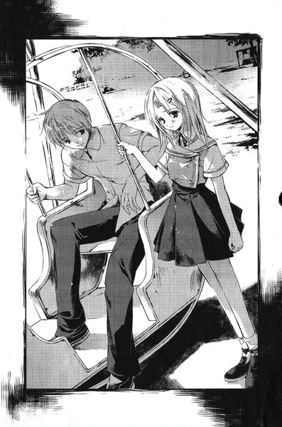

| [三上延] シャドウテイカー1 | |
| 三上延 | |
| (2015) | |
|
シャドウテイカー 黒の彼方
著 三上 延
イラスト 純 珪一
|
プロローグ
黒の彼方
エピローグ
プロローグ
わたしたちが茶道部の部室を出た時は、夕方の四時を回っていたと思います。
一学期の中間テストが近づいていて、旧校舎にほとんど人は残っていませんでした。
私は三年生で、茶道部の部長をしていて、何日か前に役員の引き継ぎをしたばかりでした。後輩の女の子と部室で話していたら、気がつくと遅い時間になっていました。わたしたちは仲が良かったと思います。彼女はわたしを慕ってくれていたし、わたしもそれが嬉しいと思っていました──あの日はまだ。
廊下へ出て階段に向かって歩き出したとたん、わたしはぐにゃっとした布のようなものを踏みました。驚いておそるおそる床を見ると、グレーの手袋が落ちています。最初はこんなところにどうして手袋が片方だけ落ちているんだろうと思って、それを拾いました。
「......なんですか、それ」
と、わたしの後輩が言いました。よく見ると、手袋の指先のあたりがチョークの粉で汚れていました。それで、私には手袋の持ち主が分かりました。
「これ、英語の柿崎先生の手袋じゃないかな。チョークを使ってると手が荒れるから、いつもこれとそっくりなのつけてるから」
どうしてそれがわたしたちの部室の前に落ちていたのかは、あなたにもお分かりかと思います。同じ階の一番端に、「英語科準備室」という部屋がありますよね。若い英語の先生は職員室よりもこの準備室にいることが多いみたいでした。多分、そこに行く途中で柿崎先生はこれを落としたのでしょう。
届けた方がいいよね、ということになって、わたしたちは準備室へ向かいました。旧校舎は本当に静かでした。どこかから入りこんだ白い蝶がふわふわと飛んでいて、わたしたちはなんとなくそれを追いかけるみたいに、廊下を歩いていきました。
もう先生は帰った後で、準備室には誰もいませんでした。せめて手袋だけでも置いて帰ろうと思って、わたしたちはドアを開けようとしたのですが、鍵が閉まっていました。
その時もおかしいなと思ったんです。普段は鍵がかかっていることはほとんどありませんでしたし。
そこから先のことは、あまり思い出したくありません。
「先輩、あそこ」
突然、わたしの後輩が床の方を指差しました。空気を入れかえるためだと思うんですけど、どこの旧校舎の教室も、廊下側の壁の下のほうが引き戸になっていますよね。準備室もそうなっていたんですけど、その戸にさっき見た蝶がとまっていました。あの虫がどうかしたのかな、と思ったとたん、ほんの少し開いた隙間から部屋の中へ入っていきました。
「あの下の戸、開くんじゃないですか」
彼女の言う通り、古い建物だから、下の戸の鍵が壊れていることが多いんです。ためしに戸を動かしてみたら、簡単に開きました。
「ここから中に入っちゃおうか」
と、わたしが言うと、彼女も頷きました。部屋の中へ入った時は、自分たちがしていることをあまり深く考えていませんでした。鍵が閉まってるのが何かの間違いなんだし、もし誰かに見られても謝ればいいって思っていたんです。
準備室にはいくつか机が並んでいて、あとは授業の教材の入った大きな棚とか、先生たちの私物がたくさん置いてありました。
この部屋にはしょっちゅう来てましたから、柿崎先生の机がどこなのかは知っていました。先生はデスクトップのパソコンをそこに持ちこんで、色々仕事をしていたみたいでしたから。わたしたちはキーボードの上に手袋を置いて、そのままそこを出ようとしました。
その時、プリンタのトレイから、一枚紙が落ちそうになっていることに気がつきました。多分、プリントアウトしてそのまま忘れて帰ってしまったんだと思います。わたしは何となくその紙を手に取りました。後輩もそれを覗きこみます。
「加賀見高等学校三年生英語中間テスト」
わたしたちはやっと気がつきました。きちんと戸締りされていたのは、中間テストの準備期間中だったからでした。テスト期間中は職員室や、それぞれの教科準備室に生徒は入れません。そのことをわたしもよく知っているはずだったのに、あの部屋でテストの問題を見るまで、全然思いつきもしなかったのです。
わたしたちは急いでそこから出ようとしました。もし誰かに見られたら大変なことになると思ったからです。でも、もう手遅れでした。
「何やってんの」
急に声をかけられて、わたしは飛び上がりました。さっき入ってきた下の戸から、同じクラスの樋口さんが覗いていました。わたしは少しほっとしました。彼女とはほとんど話したことはなかったけれど、この場に先生が現れるよりはずっといいと思ったのです。
樋口さんは準備室の中に入ってきました。
「なに、誰かいるの樋口」
その後ろから、彼女と仲のいい田島さんと川相さんもついてきました。どうして彼女たちが準備室へ入ってきたのか、この時はまだ分かっていませんでした。
「落とし物があったから、届けに来たの」
立ちふさがるように立っている三人に、わたしたちはそう言いました。樋口さんは黙ってわたしを見下ろしていましたが、突然わたしが持っていた紙をひったくりました。
「あっ」
最初から樋口さんは、それが何かを確かめるつもりだったんだと思います。樋口さんの肩越しに、田島さんたちもその紙を覗きこみました。
「......中間の問題じゃん」
田島さんが言いました。彼女たちはそれを見ても驚いていませんでした。だいたい予想がついていたのでしょう。
「ふうん」
樋口さんはじっとわたしたち二人の顔を見比べていました。わたしは怖くて震えが止まりませんでした。
「あんたたち、問題盗みにここに来たんだね」
わたしの頭の中が真っ白になって、言葉が出ませんでした。
「違います」
と、わたしをかばうように後輩が言いました。
「わたしたちは......」
樋口さんは彼女の言葉を遮るように笑い出しました。
「まあ、気持ちは分かるよ。誰でもいい点取りたいしさ。ねえ？」
樋口さんは後ろの二人に言いました。それからしばらくの間、彼女たちはなにか小声で話し合っていました。わたしはそこでぼんやりと立ったまま、キーボードの上に置いた手袋を見ていました。何を言ってもウソだと言われる気がしましたけど、それでもこのまま黙ってちゃいけないと思って、顔を上げました。
樋口さんたちはカメラつきの携帯を出して、問題用紙に向けていました。
「何やってるの？」
と、わたしが言うと、川相さんがわたしの方を見ずに答えました。
「いや、ほら、あたしらも見せてもらおうと思って」
わたしの目の前が真っ暗になりました。そんなことをしたら、本当に問題を盗むことになってしまいます。
「もともとちゃんと鍵のかかんない部屋にテストの問題置いておく方が悪いんだよ」
樋口さんはそう言いながらボタンを押しています。用紙が大きかったので、何回かに分けて撮影していました。
「そんなのダメよ」
わたしは言いました。樋口さんが怖い目でわたしをにらみます。
「もともとあんたたちがやろうとしてたことじゃん」
その時、わたしの後輩がゆっくりと出口の方へ動いているのが見えました。わたしは彼女の考えていることが分かりました──多分、職員室へ助けを呼びに行こうとしていたんだと思います。職員室には残っている先生もいるはずだからです。
「やめた方がいいんじゃない」
突然、樋口さんが彼女に向かって言いました。
「あんたの先輩、推薦狙ってるんじゃなかったっけ。わざわざ鍵かかってる資料室に入ってさあ、テストの問題盗んだのバレたら先輩が困るんじゃないの」
後輩が凍りついたように立ち止まりました。樋口さんの言う通りでした──もし、事情を話しても信じてもらえなかったら、わたしは処分を受けて、推薦の資格を失うことになります。
「平気だって。あたしら誰にも言わないからさ」
樋口さんはわたしの耳元にささやきました。それから、わたしの後輩に向かって言いました。
「あんたたちも誰にも言わなければいいんだよ」
彼女たちは答案を隅まで撮影して、お礼を言いながら出て行きました。準備室の中に残ったのは、青い顔をしたわたしたちだけでした。頭が混乱していたけれど、分かっていたことがありました。
わたしたちも含めて、この部屋に入った五人全員が黙っていれば、このままずっと普段と同じ生活が続いていく、ということです。ほかにもっといい方法はあったのでしょう。でも、あの時はそれが一番いいと思えたのです。
とにかく、この部屋を出なければ、と思った時、
「虫がいなければよかったのに」
突然、後輩が低い声で言いました──わたしはなんとなくぞっとしました。彼女は例の戸をにらみつけています。さっき戸のところで見た、蝶のことを言っていると気がつくまで、少し時間がかかりました。
「あのね......」
わたしは謝るつもりでした。手袋を拾ったのも、彼女を連れて来たのも、この部屋に入ろうと言ったのもわたしです。でも、口を開きかけた時、彼女はふと、わたしの顔を見上げました。
「大丈夫です。わたしが先輩を守りますから」
きっぱりと彼女は言いました。
「このことは絶対秘密にしますから」
言いわけをするつもりはないけれど、なにかへんだなとその時も思いました。でも、あの時はそう言ってくれるのがすごく嬉しかったのです。わたしはがたがた震えながら泣いていました。その時は彼女に感謝していたのです。わたしのためにこんなことを言ってくれる、なんて優しいんだろうって思っていました。
ただ、彼女のあの言葉──。
（虫がいなければよかったのに）
それが、耳の奥にこびりついていました。
うまく説明できませんけれど、なんだかいやな言葉のような、そんな気がしたのです......
黒の彼方
１
この世界に忽然と現れた「それ」が、一体全部でいくつあったのか、詳しいことは誰にも分かっていない。
大きさはちょうど大人が胸に抱けるぐらい、真ん中を押しつぶした楕円体だった。その手触りは硬く、中に何もないと思わせるほど軽い。そしてどこをひっくり返しても塗りつぶしたように黒かった。
人々は必ず一人でいる時に「それ」を発見する。疲れきった体を引きずって自宅のドアを開ける時、深夜に誰もいない部屋の中で振り返る時、眠い目をこすってベッドから起き上がった時──。
そして、一様に首をかしげながら、「それ」をまじまじと覗きこんだはずだ。この世界の誰も「それ」が何なのかを理解することはできない。
彼らは顔を近づけ──「それ」の表面にびしりとヒビが入るのを見る。ほとんどの人々は驚いて手を離したはずだ。そして、その場から逃げ出そうとするだろう。だが、すべては手遅れになっている。「それ」の内部から現れるものを、この世界に存在しえないものを、彼らは見ることになる。
そして、ほどなく彼らは知ることになる。自分たちが選ばれた者であり、「それ」を呼び寄せた者でもあることを、自分たちが「契約者」となることを。
そして、彼らは最後に知る。
すでに自分が人間ではないことを。
２
午前中で一学期の中間テストが終わると、学校全体が活気を取り戻したようだった。テストのことなど思い出したくもない大半の生徒は、部活なりバイトなり、勉強以外のことに精を出す毎日に戻っていった。
都立加賀見高校は、加賀見市の中心からわずかに外れた場所に位置している。
加賀見市は東京の外れにある丘陵地帯を切り開いて作られたベッドタウンであり、この高校はそこに住む子供たちのために作られたものだった。名前からも察せられるように、加賀見市で一番古い都立高校である。
「長い伝統と自由な校風を誇る」という、いかにもおざなりな言葉で説明されることが多いが、はっきり言えばこれという特徴はなかった。特に荒れているわけでもなければ、締め付けの厳しい進学校というわけでもない。勉強する生徒は勉強し、しない生徒はしない。放し飼いのような状態だった。
すぐ近くに加賀見中学校があるのだが、毎年半数近くの卒業生が同じ名前のこの高校へそのまま進学する。もちろん私立に行く者や、成績が悪くもっと偏差値の低い高校へ行く者もいる。しかし、それ以外の者は「まあ、加賀見でいいか」という曖昧な理由でこの学校を選ぶのだった。当然ながら高校に進学してもまわりは知った顔ばかりという状況で、それもよく言えばゆとりのある、悪く言えばヤル気のない校風に関係している。
藤牧裕生は茶道部部室の畳の上にうつぶせに横たわっている。背の高さは中ぐらいというところ、どちらかといえば線の細い体つきで、顔立ちもよく見ると整っているのだが、そのあたりに着目する人間はほとんどいない。総体としてあまり印象に残らない外見だった。
彼が倒れているのは、命に別状があるからではない。一夜漬けのテスト勉強であまり寝ておらず、家に帰る前に一休みしているうちに熟睡してしまったのだった。
加賀見高校茶道部は彼を含めて部員は三人しかいない。各学年にそれぞれ一人ずつで、唯一の三年生は先日引退してしまい、裕生が今の部長である。しかし彼も成り行きで入部したようなもので、茶道に対する情熱があるわけではなかった。この部じたいが、ほんの数年前に気まぐれのように設立された、伝統とは無縁の文化部だった。
部室は旧校舎の空き教室の半分を区切って作られたもので、備品といえば茶器の入ったロッカーと三畳の畳ぐらいだった。
壁には何故か歴代部長たちの写真が名前入りで飾られている。「二代目部長・西尾夕紀」と「三代目部長・飯倉志乃」はごく普通の女子生徒のスナップ写真だったが、「初代部長・藤牧雄一」の写真だけが異彩を放っていた。壁に立てかけた畳に手をついて、上半身裸・金髪・長身の男子生徒が得意満面の笑みを浮かべている。その上、むきだした前歯は一本欠けていて、顔には明らかな青あざとすり傷がある。
茶道よりは武道に縁がありそうなこの初代部長と、裕生の苗字が同じく「藤牧」なのは偶然ではない。藤牧雄一は裕生の三歳年上の兄だった。茶道に関心のなかった裕生がこの部に入らざるを得なかったのは、この初代部長と大いに関係がある。
開いた窓から入りこむ心地よい風が、カーテンを揺らしている。このまま邪魔が入らなければ、裕生はもう少し惰眠を貪り続けたに違いない──しかし、その時部室の扉が開いた。
現れたのは小柄な女子生徒だった。黒目がちの瞳とふっくらした白い頬。人目を引く容姿をしているが、可愛いと呼ぶには少し無表情で、美人と呼ぶには少し童顔だった。わずかに肩にかかった不揃いな髪の毛が、彼女の荒い息に合わせて揺れている。ここまで全速力で走ってきたらしい。衣替えしたばかりの半袖のＹシャツと、制服のスカートはまだ真新しい。今年入学したばかりの一年生だった。
彼女はまず部室の時計を見て、ほっと息を洩らした。それから畳のほうに目をやり、うつぶせに倒れている裕生に気づく──彼女は顔色を変えた。彼の様子は異変が起こったように見えないこともない。彼女は畳へと走り寄り、上履きと学校指定の黒い鞄を投げ捨てるようにしてぺたんと彼のそばに座りこんだ。そして、自分も畳に顔を近づけるようにして裕生の顔を覗きこむ──。
数秒後。
彼女は呆れた顔で体を起こした。規則正しい寝息がかすかに聞こえる。こののんきな生徒はただ眠りこけているだけだ、ということを彼女は知ったらしい。
「ひろ......」
と、言いかけてから、口をつぐんで言い直した。
「......藤牧先輩」
彼女は裕生の肩を揺する。ぴくりとまぶたが震えただけで目は開かなかった。そのかわり畳の上でごろりと九十度回転すると、彼女の膝に背中を預けてくる。一瞬、彼女の全身が固まった。スカートからわずかに覗いている彼女の白い膝に、裕生の背中が直接当たっている。彼女の頬がかすかに赤くなっていた。
彼の肩に伸びた手が中途半端な位置で止まり、畳の上にぱたんと落ちた。彼女は窓の外を見上げる。はためいているカーテン越しに、昼下がりの太陽の光が彼女の目を射た。
ふと、彼女は裕生の声を聞いた気がした。彼の唇がかすかに動いている。彼を起こさないように、彼の横顔にゆっくりと耳を近づけていった。
「......うみ」
と、いう言葉だけは聞き取れた。何か夢を見ているのかもしれない。
その時、裕生がまたさっきと同じ方向に寝返りを打とうとした。ぐいぐいとＹシャツの背中がこすりつけられて、彼女の制服のスカートが少しまくれ上がろうとする。
「......あの、ちょっと。先輩」
彼女の顔がさらに赤くなる。それでも裕生が起きる気配はなく、彼女の口元がへの字に引き締まった。その後の動きは素早かった。左手でスカートを押さえつつ、右手で思い切りよく裕生の頭を叩く──ぱん、といい音が部室に響いた。
裕生は夜の海をゆらゆらと一人漂っている夢を見ていた。子供の頃からなじみのある夢だった。この先の展開も分かっている。波間の向こうに見えるものがあるはずだ。目を凝らそうとした瞬間、頭の上に衝撃が降って来た。
（......雷？）
目を開けると畳があった。雷が落ちて目が覚めるのは珍しい。誰かに頭をはたかれたような感覚に首をかしげながら、彼は上半身を起こす。寝ている間、畳に押しつけていた頬に違和感がある。跡が残っていたらマヌケだよなと思いつつ振り返ると、後輩の不機嫌そうな顔があった。
「あ、雛咲。お......」
裕生は大あくびをした。
「......はよう」
雛咲、と呼ばれた女の子はかすかに頭を下げる。彼女の名前は雛咲葉。今年、加賀見高校茶道部に入部した唯一の一年生だった。
「テストどうだった？」
葉は答えなかった。畳の上できちんと正座して、正面から彼の顔を見据えている。裕生が別のことを言うのを待っているような感じだった。
「どうしたの？」
と、彼は尋ねる。
「部会は？」
葉が固い声で言った。え、と裕生は口の中で呟く。茶道部は週に一度部会を開くことになっている。やることと言えば次の茶席についての打ち合わせとちょっとした連絡事項だけで、五分か十分で終わってしまうのだが。
「今日はやらないけど。テストの期間中はないって言わなかったっけ？」
「テスト、今日で終わりですけど」
「うちはテスト終了日も期間中。前からそう決まってるから」
わずかに彼女の表情が変わったように見えた。あるいは光の具合かもしれない。
「飯倉先輩は」
「来てないよ。帰ったんじゃないかな」
飯倉志乃は唯一の三年生の部員で、この前まで彼女が部長を務めていた。無口な葉に志乃が色々と世話を焼いており、二人の仲がいいことは裕生も知っている。
「先輩と待ち合わせしてたの？」
「......先輩から借りるものがあって」
「ふーん。なに？」
葉は答えなかった。どうやらあまり言いたくないものらしい。女の子同士の秘密なのかもしれない、と裕生は思った。そういうことには立ち入らない方がいいだろう。
彼女は正座した自分の膝に視線を落としている。そのまま沈黙が流れる。裕生は葉と黙って向かい合うことに慣れていた。音楽室で誰かがピアノをいじくって遊んでいるらしい。途切れ途切れの音色が聞こえてくる。
「あのさ、雛咲」
彼女は顔を上げる。
「ぼくには敬語使わなくていいよ。近所だし、長い付き合いだし」
裕生は子供の頃から葉と同じ団地に住んでいる。学年は一年下だが、小学校からずっと同じ学校に通ってきた。当然、子供の頃は語尾にですますなどつけなかったのだが、中学に入った頃、葉は突然言葉遣いを改めた。裕生以外の相手にはそうしなかったので、以前から不審に思っていた。
葉はしばらく表情を変えずに裕生を見ていたが、
「結構です」
と、答えた。実は裕生は今までにも何度か同じことを言ってきている。しかし彼女の答えはいつも「結構です」で、何がどう結構なのかはよく分からないのだが、とにかく言葉遣いはそのままだった。
「部会、やろうか。せっかくだし」
葉は首を横に振った。それから、突然立ち上がる。
「......わたし、帰ります」
低い声で葉は言った。裕生はふと葉を見上げる。初めて彼女の様子に疑問を覚えた。表情に乏しいのは普段と変わらないが、どことなく雰囲気がおかしい。疲れているのか、あるいは具合が悪いのか──いや、それとも少し違う気がした。
（なんだろう）
裕生が考えこんでいる間にも、葉は上履きをはいて、投げ捨てられた黒い鞄を拾うと、扉の方へすたすたと歩いていった。
「雛咲」
彼女は振り返る。裕生はどう言うべきか迷ったが、結局ひどく漠然とした質問しか思いつかなかった。
「なにかあったの？」
一瞬、葉が少しためらったように見えた──が、すぐに、
「失礼します」
彼女はきちんと頭を下げて、廊下へ出て行った。
３
裕生は畳の上で足を投げ出したまま、両足のつま先をぼんやり見ていた。頭の中ではたった今出て行った葉との会話を反芻している。異様に弾まない会話だったが、それは子供の頃からの習慣のようなもので、特に普段と違うわけではない。彼女が自分から話しかけてきたことはほとんどない気がする。
「おい！」
頭の上から男の声が降ってきて、裕生ははっと我に返った。同じクラスの佐貫だった。手には校門前のパン屋・法泉堂の袋をぶら下げている。
「いつのまに」
「何ボーっとしてんだ。幽体離脱か？」
「ちょっと考えごと」
「ここでメシ食っていいか？」
「どうぞ」
佐貫は上履きを脱ぎ捨ててどっかりと畳の上にあぐらをかいた。部員を除けば、いや下手をすれば部員よりも彼はこの部室を利用している。裕生と身長は同じぐらいで、いささか横幅の発育がよすぎたが、運動神経は人並以上で頭の回転も速い。肉体的な安定感もプラスに作用するのか、おおむねクラスでは「頼りになる」という評価を得ていた。
「今日は何やるの？」
と、裕生が言うと、佐貫は生徒手帳を出した。
「今日は無線部とアマレス研究会。と、カーリング同好会」
「カーリング？」
そんな同好会あったっけ、と裕生は思った。そもそもカーリングってなんだろう。佐貫は不審げな裕生の顔を見て、ちっと舌を鳴らした。
「お前、カーリングも知らないのか。氷上のチェスだぞ。冬季オリンピックの正式種目になってるだろ」
「......」
よく言えばのんびりしている、悪く言えばぼんやりしている裕生と違って、佐貫は妙なバイタリティの持ち主だった。校内ではマイナーな部や同好会ばかり十以上も掛け持ちしている。本人としてはウケを狙っているわけではなく、単に他人と著しく興味の範囲がズレているだけらしい。裕生と話すようになったのも、佐貫が茶道部に見学に来たのがきっかけだった。
「あともう一つぐらいどこか部に入ろうと思ってるんだけどな」
「今からでも茶道部入ればいいのに」
佐貫は悲しげに首を振った。
「興味はあるんだけど、正座がダメなんだよ、どうしても」
法泉堂の袋をひっくり返すと、食品用ラップに包まれた「法泉バーガー」が十個近くもごろごろと落ちてきた。味は保証の限りではないが、五十円という値段の安さのせいかエンゲル係数の高い加賀高生たちの貴重なタンパク源になっている。全部食べるつもりだろうか、という裕生の心配をよそに、佐貫は一個目のラップを破いた。
そういえば、昼食を食べていないことを彼は思い出した。
「さっき、お前の幼馴染に会ったぞ」
と、佐貫が言った。
「ああ、雛咲？」
「あの子、今日テスト受けてないみたいだな。テスト終わってから学校来たから」
「え？」
「俺、法泉堂でパン買ってたら、あの子が学校に向かって走ってきてさ。あの子、よく見ると結構可愛いよな。付き合ってるヤツとかいないのか」
裕生は佐貫の質問を無視して首をかしげた。葉はテストも受けずに、何をしにわざわざ学校へ来たのだろう。
「それ、いつ頃？」
「さっきだよ。十五分ぐらい前」
裕生はちらりと時計を見上げる。葉が部室に現れた時間とほとんど変わらない。ということは、彼女はどこにも寄らずに直接この部室に来たことになる。
「そういえば西尾って来たか？」
佐貫が急に話題を変えた。
「来てないけど」
「おかしいな。確か......」
その時、ドアががらりと開いた。
「ごめん。遅れた」
よく通る低い声とともに、すらりと背の高い女子生徒が部室に入ってきた。ストレートの長い髪が揺れる。裕生たちと同じクラスの西尾みちるだった。
「知らない一年の女の子に話しかけられて、ちょっと話してた」
「またかよ」
と、佐貫が言った。
「うちの学年でお前が一番女にモテるんじゃねえか」
「......そんなこと言われても困るんだけど」
と、言いながらみちるは畳の上に腰を下ろした。みちるは演劇部の部長をしている。本人も気にしているようだが、十六歳に見られたことがない。年齢以上の落ち着きがあり、いつも凛々しげなオーラを漂わせている──らしい。男子よりも女子、特に下級生に人気が高い。
らしい、というのは裕生たちがオーラの圏外にいるようで、あまり実感がないからだ。あくまで彼女は仲のいい友達だった。佐貫は自分の目の前に積んである法泉バーガーの山から、半分をみちるの方に押しやった。
「買っといたぞ」
「あ、ありがとう」
みちるはにっこり笑った。話してみるとさっぱりした性格で、そしてよく食べる。中学の頃はずっと剣道をしていて、その頃の習慣だと本人は言っている。
「相変わらず静かでいいね、ここ」
彼女は肩にかけていたバッグから、ウーロン茶のペットボトルを二本出して、一本を佐貫に渡した。
「そうだろ。いいよな」
どうやら二人は最初からここで昼食を食べるために待ち合わせていたらしい。ここは休憩所じゃないんだよ、とは、さっきまで寝ていた裕生に言えたことではなかった。
「なんで同じパンばっかり」
と、裕生が言いかけると、
「貧乏だから」
二人同時に返事がかえってきた。
不意に裕生の腹がぐう、と情けない音を立てる。
「なんだ、バラ減ってんのか。お前も一個食えよ。俺のおごりだ」
佐貫の差し出したパンを裕生は受け取った。畳の上で向かい合った三人は昼食を取り始める。一口食べた裕生は顔をしかめた。焼いてから数日は経過している感じのぱさぱさしたバンズの中に、異様な弾力性に富んだ肉が挟まっている。
「相変わらず、まずいね」
裕生が言うと、佐貫はパンを見下ろしながら頷いた。
「うん。人間の食うモンじゃねえな」
「野良猫の肉使ってるって噂、ほんとかな」
みちるの口にした噂は裕生にも聞き覚えがある。他にも犬、ネズミ、ミミズ......などの説があった。
「ウソだろ。まあ、何の肉なのか全然分からないけどな」
「肉っていうより、ゴムみたいだよね」
「上履きって食べるとこんな感じかも」
「ここまでまずくすんの、逆に大変じゃねえか」
三人はひとしきり法泉バーガーの悪口を言い続けた。あまりの不味さに盛り上がりながらこの名物パンを食べるのは、加賀高生の伝統の一つだった。
「そういえば、姉さんが藤牧によろしくって」
と、みちるが言った。裕生はあやうくパンを喉につっかえそうになった。
「西尾先輩が？」
西尾先輩というのは、茶道部の二代目部長の西尾夕紀で、みちるの姉だった。兄弟姉妹で同じ中学と高校に通うのは、このあたりではよくある話だった。去年卒業した彼女は、都心の女子大へ進学して、今は一人暮らしをしているはずだ。
「うん。今、なんか用事があるから、そのうち帰ってくるかもって」
「そうなんだ。うちの兄さんも今うちにいるんだよ」
「え......」
ペットボトルを口に運ぼうとしていたみちるは、ふと動きを止めた。
「お前の兄さんってここの初代部長だろ。茶道部のＯＢ会でもやるのか」
と、佐貫が言った。
「そんな話、聞いてないけど。ただの偶然じゃないかな」
みちるは視線を落として何か考えこんでいたが、突然顔を上げた。
「佐貫」
と、二人の話を遮るように話しかけた。
「そういえば例の話だけど」
「え、ああ、あれか」
「ほんとにやってくれる？」
「俺は平気。工具使うの得意なヤツらに話通しといた」
「何の話？」
と、裕生が口を挟む。
「秋に演劇部の定期公演があるんだけど、工作部に手伝ってもらおうと思って」
「......工作部？ 入ってたっけ？」
と、裕生は佐貫に尋ねた。工作部は加賀見高校でも歴史のある文化部で、もともとは日曜大工が活動内容だったらしいが、今はプラモとガレージキット作りが中心だった。それでも校内で器用な人間が集まっているという定評がある。
「入ってるよ。うちにも俺専用の工具あるし」
と、佐貫は胸を張った。佐貫がどういう生活を送っているのか、裕生には見当もつかない。
「藤牧も手伝わない？ 定期公演」
「何を？」
「脚本がまだ仕上がらないの。一年生の子がやってくれてたんだけど、うまく行かないみたい」
「脚本？」
どうして自分がそんなものを手伝うのか。裕生が不審げな顔をしていると、みちるがにっこり笑った。
「昔、小説書いてたじゃない」
「お前にそんな趣味あったのか？」
佐貫は驚いたようだったが、裕生自身も驚いていた。
「いや、ないよ。そんなの書いたことないけど」
「書いてたよ。入院してる時」
「......あ」
裕生はようやく思い出した。みちるは顔をしかめる。
「書いた本人が忘れるもんなの？」
「小説なんてもんじゃないよ。子供が読むみたいな、ただのお話」
かなり前の話だが、裕生は病気で何ヶ月かの入院生活を余儀なくされていた。することがなくあまりにも退屈だったので、なんとなくノートに書き殴っていたのだ。その時限りのもので、趣味といえるようなものではない。
「お前、入院してたのか？」
と、佐貫が言った。
「......言ってなかったっけ。小六の終わりから中一の初めぐらいかな」
「初耳だな。隠してたのか？」
「忘れてただけだよ。もう何年も前だし」
裕生としては学校に行かずに済んでいたので、結構のんきに過ごしていたと思う。手術に失敗したら命の保証はなかったと聞かされているが、未だに実感がない。とにかく暇だった、という記憶しかなかった。
「なんで西尾はそんなの知ってんだ」
と、佐貫が首をかしげる。
「あたし、中一の一学期、クラスの委員長だったから。プリントとか病院まで届けに行ってたんだ。その時に見せてもらったの。書きかけのやつだけどね」
あの時、家族を除けば、病室に一番よく来てくれたのはみちると葉だった。二人ともあの頃からあまり変わらない。
初対面のみちるは彼よりも背が高く、ずっと年上に見えた。顔も知らないクラスメイトのために、わざわざプリントを届けてくれて、学校のことをてきぱきと話してくれるのだった。まるで教師が訪ねてきたような気がして、裕生はなんとなく緊張していた。
「そういえばだけど」
不意にみちるが話題を変え、裕生は我に返った。
「この部の一年の子、さっき昇降口で見たよ」
「偶然だな。さっき俺も学校来るとこ見たぞ」
佐貫の言葉に、みちるは訝しげな顔をする。
「来るところ？ あたしが見たのは帰るとこだけど」
「それ、いつ頃？」
「五分ぐらい前。なんか用事あったの？」
「......そうじゃないんだけど」
「さっき来たばっかりなのに、もう帰ったんだな」
佐貫が不思議そうに言う。
「......そうだね」
内心、裕生も首をひねっていた。やっぱりなにかおかしい。本当に何をしに学校へ来たのだろう──まさかわざわざ部室に顔を出すためにやって来たのだろうか。
＊
飯倉志乃は重い足取りで校門を出た。髪の毛をゆるく三つ編みにして、眼鏡をかけている。真面目な性格だと言われるが、自分では違うと思っている。
中間テストは無事終わったが、とても喜ぶ気にはなれなかった。たった今、英語の柿崎先生に呼ばれて、話をしてきたばかりだ。落ち込んでいるのはそのせいだった。
彼女は住宅街の中をまっすぐに伸びた道を歩いていく。このまま進めば、駅前へ出るはずだった。
「こんにちは」
背後から話しかけられて、志乃は飛び上がった。振り向くと、後輩の葉が立っていた。
「あ、葉ちゃん」
志乃は少しだけ表情をほころばせる。彼女はこの後輩が好きだった。
「......今日、どうかしたんですか」
並んで歩き出してから、葉は言った。最初は意味が分からなかったが、彼女ははっとした──部室で葉と待ち合わせをしていたのだった。
「ごめんね。頼まれてたものでしょう。家に置いてきちゃったの」
それでも、部室に顔を出して謝るつもりだった。しかし、柿崎との話ですっかりそんなことも忘れていた。
「明日持っていってあげる。それで大丈夫？」
「......はい。あの、ちゃんと返しますから」
「いいのよ。もうわたしは使わないし」
頼まれていたのは料理の本だった。貸してほしい、という話だったのだが、志乃はあげるつもりでいた。
「テスト、どうでした？」
葉は志乃に尋ねた。志乃はさっきの柿崎との話を思い出した。英語の中間テストで、不審な答案が見つかり、そのことで少し話を聞きたいという話だった。
もちろん、なにも知らないと答えた──真実はそうではなかったが。
「葉ちゃんはテスト、どうだったの？」
「受けませんでした」
その答えに、志乃は歩道の上で思わず立ち止まった。
「どうかしたの？」
本当の答えを呑みこんでいるような、奇妙な間が空いた。
「私は大丈夫です。心配しないで下さい」
話を打ち切るような言い方に、志乃は疑問を覚えた。しかし、それ以上尋ねることは出来なかった。
「先輩、なにか変わったことはありませんでしたか？」
彼女は志乃を見上げている。その目はなんとなく、彼女の見知った後輩ではないような気がした。
「わたしは......」
彼女は大きく開かれた葉の目を覗きこむ──不意に、彼女の背中が冷たくなった。うまく説明は出来なかったが、自分の中にあるものを見透かされそうな気がした。
「なんでもないわよ」
「......本当ですか？」
「うん、平気よ。じゃあ、わたし急ぐから」
志乃は葉を残して走り出した。彼女の視線を背中に感じる。あまり葉と二人きりで長くいたくなかった。どうして自分が急にそんな風に思うようになったのか、志乃は自分でもよく分からない。
葉ではなく、別のなにかと一緒に話していたような気がした。
４
いかにも不審な大男だった。
派手というより悪趣味なオレンジのペイズリー柄のシャツの襟の上に、短い金髪が見える。背中を向けているので年齢ははっきりしないが、おそらく二十歳前後だろう。
警官は眉をひそめながら、加賀見団地の中にあるスーパーマーケットの手前で自転車を停める。勤続十年の経験上、怪しい人物はすぐに見分けがつくつもりだった。大男は自動ドアのそばの自転車置き場に立っていたが、問題は彼が一人ではないことだった。加賀見中学の制服を着た少年が、男の隣でぶるぶる震えている。大男は長い腕を中学生の肩に回し、顔を覗きこむようにしながらなにか話しかけている。
（恐喝か）
彼は加賀見団地の巡回の最中だった。加賀見市じたいが都心から離れたベッドタウンだが、三十年以上前に建てられたこの団地はほとんど一個の町を形成している。
何故かこの団地の周辺には、未だに昔ながらの「不良」がまるで天然記念物のごとく生息している。夜中にタバコを吸っている、ケンカをしている、ガラスを割られた......などの通報が一番多いのもこの地域だった。
それに加えて、最近加賀見市の住宅街で行方不明者が妙に多いという。県警からは不審者がいないかどうか、警戒を強めるようにと通達を受けている。派出所では団地の巡回の回数を増やしていた。
警官は慎重な足取りで大男の方へ近づいていった。男の声が聞こえる。
「......だからよ、五分だけ付き合ってくれりゃいいっつってんだろ？悪いようにはしねえよ......あ、そうじゃねえよ。そんなビビんなって......だからカネの話なんかさっきから一言もしてねえだろ？......いや、お前のサイフの中身が知りたいワケじゃねえのよ。いやジャンプしなくていいって。ってお前、泣いてんのか？マジ誤解されると困んだけど、俺は別にな......」
「おい」
と、警官は声をかける。
「あァ？」
大男が不機嫌そうな声とともに振り向く。黄色いレンズのサングラスをかけたその顔には見覚えがあった。イヤと言うほど見たと言っていい。四、五年ほど前、深夜の巡回の最中に何度も出くわした顔だった──名前はなんといっただろう。
あの当時この男は、せいぜい高校に上がったばかりだったが、彼よりも手を焼かせた不良は他にいない。ケンカが強く逃げ足が速く口が悪かった。そのくせ妙に人懐っこいところもあり、なれなれしく話しかけることもあった。敬語の使い方を全く知らないらしく、何度名前を教えても彼を「オッサン」としか呼ばなかった。
「なんだ、オッサンかよ。久しぶり！」
彼は中学生の肩に回していた手をほどいて、笑いながらぴしっと手を挙げた。こぼれる笑顔を見ながら、警官は内心ため息をついた。その瞬間、男のかげでがたがた震えていた中学生が、弾かれたように走り去っていった。
「あー、おい。待てコラ！ ......逃げられた。いいとこだったのによ」
男は悔しそうに舌打ちする。
「......お前」
警官はどうにか怒りを呑みこんだ。恐喝の現場を押さえられたというのに、このふてぶてしさは一体なんなのか。
「何やってるんだ？」
「フィールドワーク」
ガムを噛みながら男は答えた。警官は内心首をかしげた。「フィールドワーク」という単語の意味が分からなかったのだ。英語で恐喝をそう呼ぶのか、と思った瞬間、
「ま、ちょっとしたアンケートっスかね」
警官は無言で雄一を頭からつま先まで見下ろした。どう優しく見ても昔のチンピラで、小脇に抱えているバインダーとボールペンだけが違和感を漂わせている。知らない中学生にアンケートをする元不良。どう考えてもまともな組み合わせではない。
「お前、今何やってるんだ？ ちゃんと働いてるのか？」
「働いてるっつうかまあ......あ、これ」
彼はポケットの一つから一枚のカードを差し出した。警官は思わず身構えた。自衛隊の身分証、大型一種の運転免許証、サラ金のカード......等々を想像したが、差し出されたものは彼の予想を完全に裏切るものだった。
「東桜大学社会学部二年・藤牧雄一」
「......がくせいしょう」
有り得ないものを見る思いで、警官は口の中で呟いた。偽物でない証拠に、学生証にはこの男の写真もある。東桜大学といえば、誰でも名前を知っている都心の私立大学だった。まず名門と言っていいだろう。
「お前、大学に行ってるのか？」
「そう書いてあんじゃないスか。高校だってちゃんと行ってましたよ」
そういえば、この藤牧雄一が最後に警察へ連れてこられたのはもう何年も前で、以後はこのあたりで深夜にうろうろしているところも見たことはない。てっきり学校を退学にでもなって、家を飛び出しでもしたのだろうと思っていた。
「ここから大学に通ってるのか？」
「いや、一人暮らしですよ。ちょこっとだけ帰ってきたんスよ。この辺りのガキどもの話聞いて、レポート書くんで。今のヤツにも色々聞いてたんだけど、なんか勘違いしたみたいっスね。まったく、誰がこの年でカツアゲなんかするかっつの」
年齢の問題ではない気はしたが、考えてみればさっきの中学生にも、必死で恐喝ではないと説得していたように思える。警官は無言で雄一の抱えていたバインダーに手を伸ばした。雄一は大人しくそれを渡す。アンケート用紙らしきものが何枚が挟まっている。
「加賀見市東区における都市伝説について丸橋ゼミ」
用紙には質問の答えのほかに、場所や対象や日時を書きこむ欄があり、思いのほか丁寧な細かい字でびっしりと書きこみがある。
「安心しました？」
と、雄一が言った。
「お前、真面目にやってるんだな」
「当たり前じゃないスか。俺ァゆくゆくは研究者になるんスよ」
警官は軽い眩暈に襲われた──四年前、バイクの窃盗の現行犯で逮捕した時、お前も少しは将来のことを真面目に考えたらどうだ、と説教した時のことが蘇った。あの時、雄一は十五、六だったが、確かあの時帰ってきた答えは「死ね」だったように思う。
警官は雄一の顔を見つめる。服のセンスはともかく、堅実にやっているようだ。先入観だけで判断しようとしたことを少し反省していた。
「まあ、疑われてもしょうがないっスけどね。その用紙に大学の電話番号も書いてあっから、もし心配だったらそこにかければ......」
「いや、いい。まあ、頑張れよ」
彼は立ち去ろうとして、ふと足を止める。
「俺は『オッサン』じゃない。『菊地』っていうんだ。真面目にやってるんだったら、年上の人間の名前ぐらい憶えろ、藤牧」
雄一はにやっと笑った。
「すいません。菊地さん。ご苦労様です」
警官は帽子をかぶり直して、自転車にまたがった。
「とりあえずその服どうにかしろ。じゃないとまた逃げられるぞ。このへんも最近物騒だからな」
「服？ なにが？」
雄一は不思議そうな顔をする。分かってねえな、と思いながら警官はその場を走り去っていった。
「......服がなんだってんだ？」
雄一は呟きながら自転車を見送った。その間にもスーパーの自動ドアが開いて、次々と客が出てくる。誰もが雄一を避けるように足早に通り過ぎていく。正直なところ彼はあまりファッションに興味がない。習慣で同じものを着ているだけなのだが、センスがまったく欠落しているのだった。
その時、スーパーの袋をぶら下げた、制服姿の少女が店内から現れた。学校帰りに買い物を終えたところらしい。それに気づいた雄一の顔に、みるみる笑みが広がった。
「葉！」
彼女──雛咲葉はびくっと足を止めて振り返る。相手が雄一だと気づくと、少しほっとしたように軽く頭を下げた。
「なんだ、今帰りかよ」
葉が住んでいるのは、裕生たちと同じ棟だった。雄一にとっては弟の裕生と同じく、自分が昔から面倒を見てきた妹のようなものだった。
「久しぶり......でもねえな。でっかくなって......もねえな。ハハハハ」
最後に会ったのは大学の春休みで、まだ何ヶ月も経っていない。雄一はぐりぐりと彼女の頭を撫でたが、葉は嫌がる様子を見せない。少しくすぐったそうに微笑んでいる。
「相変わらず一人暮らししてんのか」
彼女はこっくり頷いた。数年前、葉の両親は失踪してしまった。それ以来、親戚の援助を受けながら一人きりで生活している。雄一はさりげなくスーパーの袋を覗きこむ。まんべんなく目についた野菜を買っているようで、何を作るのか決めているわけではないらしい。雄一の憶えている範囲では、葉はあまり料理が得意ではなかった。
「ちゃんとメシ食ってるか？ 腹減ったら、いつでもうちに来ていいんだぞ。俺は普段は家にいないけど、裕生は料理得意だからな。あいつのメシはまあまあだろ？」
「ありがとう」
少しはにかみながら葉は礼を言った。
「いいんだよ礼なんか！ 作んのは裕生だしな！」
雄一は高笑いする。
「そういや、俺の可愛い弟はどうした？一緒に帰ってこなかったのか？」
「まだ、学校にいると思う」
雄一は昔から葉を可愛がっていた。無口だが裏表のない真面目な性格だった。雄一の外見にも怯えずに普通の受け答えをする、というだけでも貴重な存在だった。
「ところで葉、パッと見で俺どうよ？大学生に見えるよな？」
葉はしばらく困った顔をしていたが、やがて目を逸らしてすまなそうに呟いた。
「......ヤクザみたい」
「な、なに言ってんだお前。いいか、人間ってのは見た目で判断しちゃいけねんだぞ？本当に大事なもんは目に見えねんだって昔のエライ人も......」
雄一はふと足元に視線を落とす。昼下がりの太陽がアスファルトの上にくっきりと二人の影を落としている。その影を眺めているうちに、雄一は意味もなく胸が騒ぐのを感じた。彼はまじまじと葉の顔を覗きこむ。
「お前、なんかあったか？」
自分の弟も同じ質問をしたことを雄一は知らない。しかし、裕生に聞かれた時のように彼女は迷わなかった。
「なんのこと？」
「なにって......まあ」
雄一は言葉を捜したが、先が続かなかった。彼は素早く頭を切り替える。
「まあいいか。いつでも相談乗るからってことよ。なんかあったらいつでもこの藤牧雄一様が飛んでくっからよ。そんだけは忘れんな」
「......うん」
「お、そうだ。俺、今フィールドワークの最中なんだけどよ、ちょっと協力してくんねえか？俺、それでレポート一本書かなきゃならねえんだよ」
「フィールドワーク？」
「まあ、ちょっとしたアンケートだ。すぐ済むからな」
葉は頷いた。雄一はボールペンのノックボタンを押す。
「『カゲヌシ』の噂、お前知ってっか？」
葉の顔色がかすかに変わった。
５
キッチンの冷蔵庫の音がさっきから気になっている。モーターの唸りが大きくなってふっと止まる。しばらくするとまた聞こえる。そしてまた止まる。その繰り返しが続くうちに、なんとなく音が鳴るのを待っているような気がしてしまう。
田島杏子は机から顔を上げる。午後いっぱい、ずっと受験の参考書を眺めていたせいか、目の奥が少し痛んだ。西日が部屋の真ん中あたりにまで差しこんでいる。窓の向こうには団地の別の棟が見える。もう少し時間が経つと、傾いた太陽はその影に隠れてしまうはずだった。
西日のせいか、少し部屋の中が暑い。大学受験の参考書を閉じて、彼女は引き出しに隠しておいたタバコとライターを取り出す。そして、窓を開けて外へ出た。
部屋の中よりはベランダの方が涼しかった。杏子のいる部屋は、加賀見団地で一番スーパーに近い棟の二階にある。ひびの浮いたコンクリートの手すりにもたれて、彼女は棟と棟の間の道路を見回す。
スーパーから買い物を終えた客が次々と吐き出されてくるのが見えた。さっき見た時、入り口の前あたりに派手な服を着た男がうろついていた。今はもういないようだが、いかにも怪しい大男で、熱心に中高生に声をかけていた。多分キャッチセールスか何かだと思う──警察はああいうのを注意しないのだろうか。
警察といえば、このあたりをたまに派出所の警官が自転車で巡回している。以前、ここでタバコを吸いながら休憩していたら、下から怒鳴られたことがあった。こちらが未成年なのは確かだが、家の中でなにをしていようが勝手だと思う。
幸い警官の姿はどこにもない。彼女はほっとしながらタバコに火を点けた。煙を吐きながら眺めるあかね色の空は、よく晴れ渡っている。
（どこか行きたいなあ）
しかし、それは大学受験が終わるまではおあずけだった。
（受験も問題が分かればいいんだけどね）
杏子はふと、高校の英語科準備室に忍びこんだ日のことを思い出した。友達の川相千香と樋口智世の三人で、英語のテストの問題を盗みに行ったのだった。準備室には先客がいて驚いたけれど、樋口が少し脅したら黙ってしまった。あの茶道部の二人があそこでなにをしていたのかは知らないけれど──。
バタン、とドアの閉まる音が聞こえた。出かけていた母親が戻ってきたに違いない。彼女は慌てて火を消すと、窓の下に吸い殻を投げ捨てた。もちろん両親は彼女に喫煙の習慣があることを知らない。
杏子はくるりと振り返って部屋を見る。まだ母親はこの部屋に来ていない。外から帰ってくるとまっすぐこの部屋へ来て、娘の様子を確かめるのが常だった。危なかった、と思った──しかし、いつまで経っても母親は現れなかった。
「お母さん？」
彼女は大声で呼びかける。返事はなかった。ひょっとすると向かいのうちのドアの音だったのかも、と彼女は思う。構造は同じだから、どのドアも似たような音を立てる。しかし、生まれた時から団地住まいの彼女は自宅のドアの音をよく知っている。微妙な違いも聞き分けられるはずなのだが。
杏子は首をかしげながら、ベランダから部屋に戻った。
「......え」
元通り窓を閉めようとして、彼女は手を止める。さっきよりも部屋の中が暑い気がする。どうして窓を開ける前よりも部屋が暑くなるのだろう。
突然、キッチンの方で何かがひときわ大きく唸った。彼女はびくっと体を震わせる。
冷蔵庫のモーター音だった。彼女はほっと息をついたが、心臓が高鳴っていた。冷蔵庫の音が途切れると、家の中はしんと静まり返った。耳を澄ませても、何の物音も聞こえない。やはり母親はまだ帰っていないようだった。
「......エアコンかな」
どこかの部屋で暖房がついているのかもしれない。母親は機械オンチで、時々笑える失敗をする。今日も出かける前に操作を間違えたのかもしれなかった。
杏子は自分の部屋を出て、狭い居間に入った。むっとする暑さだったが、窓を閉めきっているせいなのか、それとも他に原因があるのかは分からなかった。彼女はローテーブルとソファの間をすり抜けて、閉めきったままの窓を開ける。涼しい風が部屋の中に入ってきた。
ほっと息をついた瞬間、視界の端を小さな黒いものがさっと横切った。振り返ったが、その時には何もいない。和室へ通じるふすまがあるだけだった。
彼女は窓に手をついたまま、その場に立ち尽くしていた。その和室は両親の寝室に使われている部屋だが、黒いものはそこへ消えていった気がする。ふすまは彼女を誘うように細めに開いていた。
（......どうしよう）
母親が帰ってくるのを待つ、という考えが頭をよぎった。しかし、彼女は何度もためらってから、ふすまを開いた。
ぬるりとした生暖かい空気が彼女の顔に吹きつける。どうやらそこが暑さの源らしかった。母親は雨戸を閉めてから出かけたらしく、部屋は真っ暗だった。この部屋のエアコンがつけっぱなしになっている、それだけのことと自分に言い聞かせた。彼女は畳に足を踏み入れる。どっと汗がにじみ出てくるのを感じた。
エアコンは窓と天井の間に取りつけられている。この暗さではリモコンがどこにあるのかは分からない。雨戸を開けようと窓に近づいた時、彼女ははじめて奇妙な音に気づいた。何か乾いたものがこすれ合っているような、爪と爪を打ち合わせているような、いやな音だった。
杏子は天井や壁を見回しながら、窓に手を伸ばした。
「きゃあっ」
彼女は指先を押さえて一歩後ずさった。窓が異様な高熱を帯びている。しかも指先に触れたのはガラスではない。何か別のものだった。
薄暗い部屋の中で、彼女はガラスの表面にゆっくりと目を近づけ──声にならない悲鳴を上げた。
窓の表面が泡立つように蠢いている。まるで生きているようだった。彼女は畳の上にぺたりと腰を下ろす。大きく見開かれた目は窓に釘付けになっている。
ぽとり、という音とともに、窓に小さな丸い穴が開いた。細い白線のような光が部屋を横切る。ぽとり、とまた何かが畳の上に落ちる。窓にもう一つ白い穴が開く。部屋に光が差しこんだことに、彼女は一瞬ほっとした。まるで、彼女を助けに来た何者かが、必死で外から雨戸に穴を開けているような、奇妙な錯覚にとらわれていた。
（雨戸？）
はがれ落ちるように、黒いものがまたぽとり、と落ちる。窓の穴からの光が部屋の中をぼんやりと照らしている。彼女はゆっくりと首を動かして周囲を見回した。畳にも壁にも天井にも、十円玉ほどの大きさの丸い染みが無数に貼りついていた。
そして、その全てが動いていた。
ぼんやりと口を開けたまま、彼女は再び窓を見上げた。そして唐突に気づく──最初から雨戸など閉まってはいなかった。小さな黒いものが窓の内側にびっしりと取りついて、覆い尽くしているだけだった。
弾かれたように立ち上がるのと同時に、ざあっと音を立てて黒いものの群れが畳に落ちる。光をさえぎられていた和室が、一瞬のうちに昼間の明るさを取り戻した。
「......あ」
杏子は初めて部屋を満たしているものをはっきりと見た。触覚と細い脚を持ち、油を塗ったような光沢を持つ黒い外殻に覆われている。部屋中に散らばっているのは平べったい黒い虫だった。
彼女はふと煙の匂いを嗅いだ。窓から落ちた塊のような虫の群れがほどけて、彼女の方へゆっくりと進みはじめた。虫の這った跡が茶色く焦げている。虫たちはかすかな音と共に、ふくらんだ下腹を震わせていた。それぞれの腹部がかすかに赤い光を帯びている。
唐突に自分が目にしているのがただの虫ではないことに気づいた。蛍が光を発するように、この虫たちは熱を発している。この部屋の異様な暑さはこの黒い虫のせいだった。
部屋の温度はさらに上がっていた。彼女は部屋を出ようとふすまへ駆け寄る。いつのまにかふすまは閉まっていた。彼女は取っ手に触れようとして、直前でぴたりと動きを止めた。先回りするように、虫たちがふすまをびっしりと覆っていた。それぞれが小さな円を描くように動き、触れ合った無数の触覚やとがった脚がかさかさと乾いた音を発している。
ふすまのあちこちから煙が上がり、一拍の間を置いて煙は炎に変わった。無数の赤い光はたちまち一つに繋がって、ふすま全体が炎の中に沈んだ。熱気に煽られるように、彼女は一歩背後へ下がる。
その途端、芝生で靴を脱いだ時のように、両足に無数の尖ったものがちくちくと食いこんだ。足元を見た彼女は全身を震わせた。両足のくるぶしまで黒い虫の群れの中に沈んでいる。虫たちは彼女の柔らかい皮膚に足をかけて這い上がってくる。
杏子の大きく開いた口から、絞り出されるような絶叫が飛び出す。しかし、自分の声を耳にする余裕すら彼女にはなかった。虫たちに覆われた両足から、耐えがたい熱が立ち上ってくる。
ものを考える余裕は彼女にはもう残っていなかった。半狂乱になりながら、素足に取りついた虫を払いのけようとする。その手にも虫がとりつき、屈みこんだ背中に天井から何匹もの虫が落ちた。彼女の全身から嫌な匂いのする煙が上がる。ぐるぐると回転しながら、火の点いたふすまに激突し、居間へ倒れこんだ。
彼女の体に本格的に火が燃え移る。フローリングの居間をごろごろと転がった。炎は彼女の体から家具に燃え移り、白い煙が部屋の中に充満し始めた。
彼女は悲鳴を上げることすらできなくなっている。開いた口に黒い虫が入りこんで、舌を黒く焦がしていた。すでに痛覚を失っていたが、全身を這い回る黒い虫に焼かれながら、彼女はまだしっかりと目を見開いていた。
誰かの両足が見える。自分を見下ろしている者がいる。杏子の目はそれをはっきりと見ることはできない。
「食いつくせ」
と、女の声が言った。
田島杏子の意識はそこで永遠に途切れた。無残な屍となった彼女の体を、無数の黒い虫がびっしりと覆いつくす。一斉に開いた顎が彼女の真っ黒に変色した皮膚を食い破る。やがて、萎んでいくように、彼女の体はゆっくりと消えていった。
＊
二階の窓から煙が上がっている。他の棟のベランダから次々と人が顔を出して、口々になにか言っている。火事のあった建物から逃げ出す者もいれば、反対に様子を見にそこへ向かう者もいる──混乱した人々の流れの中で、一人だけ着実な足取りで煙から離れていく制服姿の少女がいる。彼女は歩きながら携帯を出し、電話をかける。コール音はすぐに途切れた。
『もしもし』
「......先輩？ わたしです」
聞き取りにくい低い声で彼女は言う。
『どうしたの、急に』
「私たちの秘密のことなんですけど」
通話口に押しつけられた彼女の唇が、唐突ににっと歪んで白い歯がこぼれた。
「一人、いなくなりました」
『え？』
電話口の向こうで息を呑んだ気配がある。
『なんのこと言ってるの？ どういうこと？』
「大丈夫です。秘密はわたしが守りますから、先輩はなにも心配しないで」
それから、彼女は一言ずつ区切るように呟いた。
「虫がいなければよかったんです──あの時は」
相手の返事を待たずに、彼女はぱたんと携帯のパネルを閉じる。それから、スカートのポケットに携帯をしまって、足早にその場を立ち去った。誰も聞く者はいなかったが、口の中で同じ言葉を呟き続けていた。
──あと、二人。
６
藤牧家は加賀見団地の一番外れの棟の最上階にある。
「『カゲヌシ』？」
ジャガイモの皮をむいていた包丁を止めて、裕生は兄の顔を見た。テーブルの上にはもう切り終えたニンジンと玉ねぎと鶏肉が載っている。今日のメニューはカレーだった。まだ太陽は沈みきっていないが、少し早く夕食の準備を始めていた。
「......ってなんだっけ」
子供の頃聞いた言葉のような気はするが、意味までは思い出せなかった。キッチンのテーブルの前で雄一はタバコに火を点けようとしていたが、弟の答えを聞いて顔をしかめる。
「おいおいおいおいおい裕生君よ」
と、雄一は言った。
「お前ホントに加賀見で育ったガキか？ まあ、最近じゃこのへんでもあんまり使わないみたいだけど、お前ぐらいの年だったらまだ知ってるはずだぞ。このへんのガキは『影踏み』をそう呼ぶだろ。思い出したか？」
「あ」
裕生は言った。そういえばそうだった──子供の頃、このへんの団地でもしたことがある。鬼が逃げた子供の影を踏む遊びだ。
「方言だな。関東のほかの地域だと『かげおに』って呼ぶ土地もあんだけど」
「ふーん。方言のアンケートなんか取ってどうするの？」
「いやそうじゃなくて」
雄一は真剣な表情になって、改めてタバコに火を点ける。
「俺が調べてんのは、『カゲヌシ』の都市伝説の方」
「都市伝説って？」
「要するに噂話よ。最近になって、このへんのガキどもの間で『カゲヌシ』の変な噂が広まってんだ。知ってるか？」
裕生は首を横に振った。
「まあ、お前はそういうの疎そうだからな。クラスの噂とかも最後に聞くタイプだろ？結構ポピュラーだぞ。葉だって知ってたからな」
「雛咲が？」
ちょっとした驚きだった。案外、人に構われるタイプだし、クラスでも全く孤立しているわけではないと聞いているが、友達らしい友達はほとんどいないはずだ。噂話に敏感だとも思えない。
だとすると、自分はよほど噂話に疎いのかもしれない、と裕生は思った。
「それってどういう内容？」
「それがな、『カゲヌシ』ってのはガキの遊びじゃなくて、ほんとはバケモンの名前だっていうんだ。影を踏まれると鬼になるだろ？人間のところに、なんだか分かんねえバケモンが来る。それが『カゲヌシ』って名前で、そいつに影を踏まれると、その人間は動けなくなる。で、そのバケモンに食われて死ぬ......微妙なバージョンの違いはあんだけど、このへんで広まってる基本的なパターンはそんな感じだな」
「......へえ」
裕生は鍋を火にかけて、サラダ油を落とした。
「食われる奴ってのは話によって微妙に違うけど、まあ『いつも一人でいる奴』とか、『心に隙がある奴』とか、そんな感じだな。『誰からも名前を呼ばれない奴』ってのもあったかな」
裕生は薄切りにした玉ねぎを鍋に入れて、慣れた手つきで妙め始めた。藤牧家には母親がいない。五年前に病死してしまった。それからはずっと男ばかり三人で暮らしてきた。中学生になってからは、裕生がほとんどの家事をこなしている。
「で、なにが原因でこの噂が流行ってんのか、調べるのが俺の目的ってワケよ」
「本当かどうか調べるってこと？」
雄一はぷっと吹き出した。口から飛んだタバコを慌てて空中で受け止める。そして、げらげら笑い始めた。
「そんんんんんんんんなワケねえだろオ？ いるワケねえじゃねえかそんなもん」
「じゃあ何を調べるんだよ」
むっとした顔で裕生が言うと、雄一は少し笑顔を引っこめて話し始めた。
「俺が調べるって言ってんのは、噂が生まれる背景だよ。こういうありえねえ噂が広がるのはな、心理的な要因があったりすんだよ。よく言われてんのがその社会が抱えてるストレスの解消だな。ストレスの原因が複合的だったり、漠然としててはっきり口に出せない状況。これが噂の温床になる。分かるか？」
裕生は忙しく鍋を振りながら、雄一に背を向けながら首をかしげる。兄が大学で真面目に勉強しているのは本当らしいと思った──急に難しい単語が増えた。
「例えばウチの真下は今空家だけどよ、そこに無口なオッサンが引っ越してきたとするだろ。何考えてるか分かんねえ、お前が挨拶してもロクに返事しねえ。ゴミ捨て場の前で会うと、収集日でもないのに生ゴミの袋を捨ててる。それも中身が見えないような袋に入れてだ。お前はちょっとイヤになる。これがストレスだ」
「......はあ」
「そうすっとお前は友達のあのデブ気味の......なんつったっけ、タヌキ？」
「佐貫」
「佐貫とかにべらべら喋るわけだ。そうすると佐貫が言う。『ひょっとして、誰かブッ殺したんじゃねえのか？ゴミ袋に生首が詰まってたらどうするよヒロオ？』」
「兄さんじゃないんだから、いきなりそんなこと考えないよ」
「例えばの話だよ。そういえばここらで子供が変質者に追いまわされる事件が起こってる。ひょっとしたら、って話になる。まあ、お前らの間じゃそれで終わりだけど、佐貫が誰かに話す、その誰かも誰かに話す......ってプロセスを繰り返すうちに、いつのまにか『ひょっとしたら』が取れる。『団地で遊んでる子供がいなくなる。一人暮らしのオッサンが部屋に連れこんで殺してる。死体が出てこねえのはそいつが死体を食ってるからだ』......ってな噂になる。ワケ分かんねえ住人なんかどこの棟にも一人や二人いんだろ？そういう不安を苗床にして噂ってのはワッと広がるワケよ。まあ、こりゃ一つの例だけど、噂ってのは風邪みてえなもんだな。流行があって、それにも原因があんだよ」
炒めた玉ねぎのいい匂いがキッチンに漂っている。裕生はさらに鶏肉を鍋に加えた。ふと、裕生は昼間佐貫から貰った「法泉バーガー」の噂のことを思い出した。「ミミズや猫や犬の肉が使われている」という噂も、似たようなものではないだろうか。
「今の話じゃねえけど、加賀見は最近行方不明者が多いらしくてよ。この団地も昔に比べると建物が古くなって、住んでる奴も減ってきただろ。一人とか二人で住んでる奴も結構いると思うんだ。『カゲヌシ』の噂が広がってんのは、そういうこともあんじゃねえのかな」
一人とか二人で住んでいる、という話に、裕生はふと葉のことを思い出した。兄も同じだったらしく、次に言ったのは彼女のことだった。
「最近、葉はここに来てんのか？ 前はたまーに晩メシ食いに来てたろ」
「高校入ってからは来ないよ。ぼくもなんか避けられてるみたいだし」
同じ部に所属しているのに変な話だが、葉は前よりもかえって距離を置くようになった気がする。特にこの一週間はほとんど姿を見ていない。
「あのな、裕生。親父に言おうと思ってんだけど」
妙に改まった声で雄一は言った。
「うちに葉を住まわせた方がよくねえか」
「へ？」
裕生はもう少しで手にもっていた木ベラを落とすところだった。思わず振り返って兄の顔を見る──冗談ではないらしい。
「いや、さっき葉から『カゲヌシ』の噂聞いたって言っただろ？はっきり口に出さねえけど、どうも信じてるっぽいんだよな。結構ビビってんじゃねえかな。あいつ、しっかりしてっけどまだ十五だろ？一人で心細いんじゃねえかと思うんだよ。うちと同じ間取りの部屋に一人で住んでんだぜ？」
「で、でも......」
裕生は口ごもった。とんでもない提案だった。どう言ったらいいのか分からないが、とにかくそれはまずい、という気がする。
「......焦げるぞ」
雄一が言う。慌てて裕生はまた鍋の中身をかき回した。
「俺が使ってた四畳半が空いてるだろ。あそこを葉の部屋にしてだな」
「ちょ、ちょっと待ってよ。雛咲、親戚が引き取るって話も断ったんだよ？」
「親戚んちってのは新宿の方だろ？ だからだよ。親が帰ってきた時のために、ここで待ってるって言い張ったんだぞあいつ」
「え......そうだったの？」
それは初耳だった。兄よりも一緒にいる時間は長いはずなのに、深い事情を全然知らない。
なんとなく恥ずかしくなってきた。
「うちだったら、同じ建物だしあいつもいいって言うかもしんねえだろ。もちろん、今いる部屋はそのまんまにしといてだな、葉だけはここに住むって感じでどうよ。ここだったら、もし親が帰ってきてもすぐ分かんじゃねえか？」
裕生はさらにニンジンとジャガイモを加えて、重くなった木ベラで鍋をかき回す。最初は驚いたが、よくよく話を聞くと兄の言う提案は決して悪くない。ただ理屈ではなく、やっぱりそれはまずいよ、という気もどこかでする。不快ではないのだが、安易に喜んではいけないという気持ち。しかし、裕生はとりあえずそのもやもやを振り払った。いずれにせよ、あの葉がうんと言うはずがない。
「うん......まあ、もし父さんと葉がいいって言うんだったら......」
「そっか。じゃあ、親父には俺が話す。葉にはお前が話せ」
「ぼく？」
冗談じゃないと裕生は思った。コンロの火を止めて兄の方を振り返る。
「なんで兄さんとか父さんが言わないんだよ」
「本当にお前はバッッッ......」
雄一はタバコの火をぐりぐりともみ消しながら大声を上げる。
「......ッッカだなまったく。あいつが一番なついてんのお前だろ」
「はあ？」
葉との会話が裕生の脳裏を次々とよぎった。長い付き合いだから慣れているが、他人から見ればまともに会話が成立しているようには見えないはずだ。一体どこがどう「一番なついている」と言うのだろう。
「『はあ』とか言うな。お前の説得が一番可能性があんだぞ？昔っから葉になんかさせようって時は、裕生の名前出すのが一番効果あったんだからな。あいつが茶道部入ったのだって、お前が困ってるって俺が言ったからだし。あいつマジメだから、部会も絶対サボんねえだろ」
「なんだよそれ。兄さんが言ったのか！ なんか変だと思ってたんだ」
「俺が作った茶道部がつぶれそうだし、お前も入部したって聞いたから協力してやったんじゃねえか。ちっとは俺に感謝しろキサマ」
「気まぐれでヘンな部活作ったのは兄さんだろ！」
その時、雄一が虚を突かれたように表情を変えた。
「......別に気まぐれじゃねえよ。俺なりの理由があったんだよ。あん時は」
「理由ってなに」
兄は答えずに、黙って次のタバコに火を点けた。
藤牧雄一が茶道部を作った理由は、未だに謎とされている。
高校に入ってすぐあたりまで、雄一はかなり荒れていた。「加賀見最強の漢」という、常識的にはバカ丸出しの称号を得ていたが、ある時期からきちんと学校に通い始めた。裕生は入院している最中で、どういう心境の変化があったのかはよく分からない。口の悪さと気の強さは相変わらずだったが、それ以来無遅刻無欠席、成績優秀で誰からも信頼される、文句のつけようのない生徒となった。
そこへ柔道部の顧問からスカウトが来た。体育の授業で雄一の卓越した運動能力、というか、戦闘能力に目をつけたらしい。是非入部しろ、と誘ったところ、茶道部に入ります、という答えが返ってきて、誰もが唖然とした。茶道部ってガラじゃないだろうお前、とはさすがに言わなかった──それ以前に茶道部が加賀見高校にはなかったのだ。それを指摘すると、じゃあ作ります、と雄一は真顔で言い切ったという。
何かの冗談だと周囲が思っているうちに、きちんと規定数の部員を集め顧問の教師を見つけ、さらに空き教室を部室として確保した。しかし問題は部室に畳がないことだった。校内で唯一畳があるのは柔道場で、そこを所有している柔道部の顧問に「古い畳を分けてほしい」と雄一は頼みに行ったのだった。
もちろん顧問は首を縦に振らない。そこで、雄一が出した提案というのが、
「レギュラーと柔道で勝負。負けたら自分が入部する。勝ったら畳をよこせ」
と、いうものだった。冗談好きの顧問はついそれを受けた──当時のレギュラーにはインターハイの出場経験のある猛者も混じっていた。五人抜きならいいそ、と姑息な条件を出し、雄一はそれを呑んだ。そして柔道場で凄まじい死闘が繰り広げられ、結局勝ったのは雄一だった。
「茶道部を作るために柔道部のレギュラーを投げ飛ばした男」という意味不明の伝説は語り継がれ、加賀高生であれば未だに知らぬ者がいない。裕生が入学した年には既に雄一は卒業していたが、「藤牧雄一の弟」ということで真っ先に連れていかれたのが茶道部の部室だった。
そして今に至る。
「......ま、まあ、茶道部の話はいいとしてだ。話が逸れたじゃねえか」
雄一は強引に話を元に戻した。
「とにかく、親父がいいって言ったらお前が葉に話すんだぞ？発案は俺、責任は親父、説得はお前だ」
「なんだよそれ！ ぼくが一番大変じゃ......」
その時、消防車らしいサイレンが近づいてきた。間違いなく加賀見団地へ向かってきている。話に夢中になって気がつかなかったが、そういえばさっきから少し外が騒がしいようだった。
「お、裕生。消防車だぞ消防車。火事があったんじゃねえかこの近くで」
雄一はそそくさと立ち上がると、ベランダの方へ行ってしまった。裕生はまだ言い足りなかったが、兄の後を追った。もし本当に加賀見団地で火事が起こったとしたら、兄弟ゲンカをしている場合ではない。
ベランダへ出ると、途端にサイレンの音がはっきりと聞こえた。
「すげえ煙だな。誰んちだろうなアレ」
手すりをつかんで、雄一が大声を発する。他の棟が邪魔になって見えないが、黒い煙が夕暮れの空を覆うように立ち上っている。
「ちょっと見てくっか。万が一ってこともあんだろうし」
雄一は部屋に戻る。裕生もベランダを離れる前に、建物の前の道路をちらっと見下ろして、ふと動きを止めた。
他の棟の入り口からも次々と人々が出てきていた。皆、火事の現場に向かっているが、一人だけ流れに逆らって、別の方角へ足早に歩いていく人影があった。
「......雛咲？」
裕生は呟いた。制服のままの彼女は、自分の住んでいる棟とも違う方へ歩いていく。彼女は顔も上げようとしない。誰もが火事に気を取られている中で、彼女の姿は異様なものに映った。
「お前はどうすんだ？」
背中から声をかけられて、裕生は我に返った。
「あ、うん。今行く」
角を曲がった葉の姿はもう見えなくなっている。裕生は首をかしげながら部屋に戻った。
７
「お前それさあ」
話を聞き終えた佐貫が真顔で言った。
「同棲か？」
「声が大きいよ」
裕生は慌ててあたりを見回した。朝のホームルーム前で、教室はざわついている。二人の会話を聞いている生徒は誰もいなかった。裕生は昨晩雄一が言い出したことについて、佐貫に相談していた。
「それで、親父さんも止めなかったのか？」
「止めなかった。『ああ、いいんじゃないか、俺もそう思ってたぞ』だって。あの二人、似てるから考え方もどっかズレてるんだ。第一、雛咲だってもう子供じゃないんだよ？もう高校一年なん」
あ、と裕生はそこで初めて気づいた。確かに葉とは兄妹のように育ってきたが、もう小学生でも中学生でもないのだ。当人もそう思っているに違いない。血が繋がっていても、その年になれば兄弟を避けるはずだ。気軽に葉が藤牧家に来なくなったのは、実はそのせいではないのだろうか。
「で、お前本当にあの子に『ぼくんち住まない？』なんて聞く気か？いくら幼馴染って言ったって、そんなこと聞かされたら引くだろ。ただの親切だなんて普通思わねえよ。絶対疑われるぞ。お前の陰謀だとか、ドス黒い欲望だとか、性いてっ」
さすがの裕生も力をこめて佐貫の頭をはたいた。
「なに言ってんだよ！ もともとぼくじゃなくて兄さんが言い出したんだよ？」
「それも言うつもりか？ 『うわこの人、兄さんダシに使ってる。最悪』で終わりだな。二度と口きいてもらえねえよ」
裕生は気が重かった。佐貫が言うことはあながち間違っていない。そういう誤解を受ける可能性があるのは確かだった。せめて二、三日の心の準備期間が欲しいところだったが、「その手の話は早い方がいい。明日言っとけ」という父親の言葉でそんな期待も打ち砕かれた。
「良かった、元気みたいだね」
二人が振り向くと、みちるが立っていた。彼女はバッグを机に下ろし、二人のそばの椅子を引き寄せて座る。
「今朝のニュースで見たけど、藤牧の住んでる団地で火事があったでしょう。大丈夫だった？」
ああ、と裕生は思った。結局、それで兄との話がなし崩しに終わってしまったのだ。
「うちからは離れた棟だったから大丈夫。でも、一人見つかってない人がいるみたいだけど」
「見つかってないって？」
「よく分からないけど......あれ？」
裕生は首をかしげる。考えてみれば、火事で行方不明というのもおかしな話だ。漠然と留守中に火事になったのだろうと思っていたが、いなくなった人が帰ってきたという話も聞いていない。
火が出たのはスーパーに近い棟の二階だった。集まった加賀見団地の住人たちが見守る中、消防署から次々と放水車やはしご車が到着して、消火にあたっていた。火の出た階はひどいことになっていたが、三十分ほどで消し止められている。
「どうかした？」
みちるが不思議そうに裕生の顔を覗きこんでいる。
「なんでもないよ」
「ふうん」
彼女は不審げな顔をしたが、すぐに話題を変えた。
「そういえば、英語のテストの話聞いた？」
「聞いてねえよ、多分」
と、佐貫が言った。
「三年生のテストの問題盗まれたかもしれないって話。前から似たような噂あったけど、今回はかなり怪しい人がいるんだって」
「盗むったって、どこから盗んでるんだ？」
「それはよく分かってないみたいだけど、先生たちが今回は本気で調べてるみたい。卒業した人たちにまで聞きこみしてるって言うから、見つかったらかなりマズイんじゃないの」
裕生は上の空で二人の話を聞いていた。後で葉と会わなければならない。学校にちゃんと来ているんだろうか、と彼は思った。
昼休み、裕生は旧校舎にある茶道部の部室の前に立っていた。
葉のクラスに行ったのだが、彼女はいなかった。近くのクラスメイトをつかまえると「茶道部の部室に行ったかもしれない」という返事だった。裕生は引き戸に手をかけたまま、固まっていた。
「......あれ？」
どうしてわざわざ学校で言わなければならないのか。裕生の説得が一番効果がある、というのが確かだとしても、別に二人きりで話す必要は全くなかった。そもそも発案者は兄なのだ。すぐ近くに住んでいるのだから、雄一と一緒に葉のうちを訪ねるか、彼女をうちへ呼んで話せばいいだけである。
（......よし）
雄一の思いつきに無理矢理つき合わされているようで、もともと不愉快だった。夕方にまた話そう、と思ってその場を離れかけた時、
「誰かいるの？」
部室の中から女の声が聞こえた。葉の声ではない。裕生はほっとしてドアを開けた。
「あ、なんだ。裕生くんじゃない。なかなか入ってこないから誰かと思っちゃった」
「先輩か。よかった」
畳の上で、前の部長の志乃が弁当箱を広げている。人の上に立つタイプではないが、後輩の面倒をよく見ていた。裕生の周辺では珍しく、さほどクセのない常識的な人間だった。
「よかったってなにが？」
志乃は微笑んだ。
「えー、なんでもないです。雛咲、来ました？」
「葉ちゃん、ここに来るの？」
一瞬、裕生はかすかに志乃が表情を曇らせた気がした──見間違いだろうだと思った。裕生の知る限り、葉と志乃は仲が良かった。
「いや、よく分からないんですけど」
裕生は部室に入った。ここに用事があったわけではないのだが、いきなり立ち去るのも不自然だった。彼は何となく壁に貼られている「歴代部長」の写真を見上げる。兄の写真はあまり見たくなかったので、主にその隣の「二代目部長・西尾夕紀」の写真を見ていた。妹のみちるとはあまり似ていない。柔らかい笑みを浮かべている、きれいな女子生徒だった。
「部長の引き継ぎしてから、部会ってまだやってないのよね」
と、志乃が尋ねてきた。
「来週はやりますよ。でも、部員って言ってもぼくと雛咲しかいないし、改まって部会やるほどじゃない気もしますけど」
ふと、例の「同居」の話を思い出した。万が一、一緒に住むようになった場合、本当に部会も意味がなくなる。毎日部会みたいなものだ。
「ごめんね、部長やらせて」
「なんの話ですか？」
「もともと裕生くんって、西尾先輩につられて入部しただけでしょ？私、知ってるよ」
裕生の顔にかすかな動揺が走る。彼が入部した時、部長をしていたのはみちるの姉の夕紀だった。彼は写真から目をそらして、志乃から表情を見られないようにさりげなく背を向けた。
「そんなことないですよ。なりゆきみたいな感じで」
「へえ、そうかなあ。西尾先輩なら憧れるのも当たり前だと思うけど」
誰にも話したことはなかったが、初めて「気になった」のがこの西尾夕紀だった。告白するとか、そういう風に考えたことはない。志乃の言うとおり憧れに近いものだった、と思う。
「まあ、葉ちゃんには言わないでおいてあげる」
「......なんで雛咲が出てくるんですか？」
志乃はちょっと目を瞠ったが、なにも言わなかった。彼女は裕生に近づいてきて、「歴代部長」ギャラリーの前に並んで立つ。
「この二人と一緒に自分の写真が並んでるのって、変な感じ」
と、彼女は言った。裕生の目からは、雄一の写真が一番異様に見えるのだが、それは言わないことにした。志乃は手を伸ばして、「二代目部長」の夕紀の写真に触れる。
「わたしね、西尾先輩みたいな人になりたいと思ってたんだ。頭がよくて、美人だし、誰にでも優しいし。仲良くなっていくのが嬉しい人ってあまりいないんじゃないかな」
志乃が自分のことを話すのは珍しい。普段は聞いてもあまり答えないのだった。
「わたし、そういう人になりたいと思ってた。外見は限度があるけど、そういう性格になりたいと思ったの。だから、葉ちゃんが入ってきた時、すごく嬉しかった。葉ちゃんって可愛いし、なんか放っておけないところあるでしょう。ほんとにすごくいい子だと思う。わたし、葉ちゃん好きよ」
裕生は妙なことに気づいた。言葉では誉めているのに、志乃の口はだんだん重くなっていった。なんだか、自分に言い聞かせているようだった。
「無口だけど裏表がないし、それに......先輩思いで......」
そこで志乃の言葉は完全に止まってしまった。ひどく思いつめた表情をしている。
「先輩？」
はっと志乃は我に返ったようだった。彼女は裕生に笑顔を向けた。
「ところで、なんで藤牧先輩は茶道部作ったんだろうね。聞いたことある？」
「それだけは絶対口割らないんですよ。何考えてるか分からない人ですから。今もこの都市伝説の研究とか言って、大学休んで近所の団地の中高生に話聞いて回ってます」
「藤牧先輩も、すごくいい人だよね。変わってるかもしれないけど」
「......」
裕生にとって雄一は「いい人かもしれないけど、すごく変わってる」のだが、あえて口には出さなかった。
「前から聞こうと思ってたけど、先輩って無遅刻無欠席だったでしょう。成績もあんなに良かったのに、どうして推薦入試受けなかったのかな」
裕生はふう、とため息をついた。
「うちの兄さん、高校入ったばっかりの時に無期停学になったから」
「え？ それ本当だったの？ ただの噂じゃなくて？」
「本当です。人んちのバイク盗んで走ってて、コンビニの窓に突っ込んだところで警察に現行犯でつかまりました」
志乃はぽかんと口を開けて、裕生の顔を見ていた。
「で、停学明けに茶道部を作ったらしいです」
「......すごいね。よく分からないけど」
「ぼくも分かりません」
雄一がごたごたしていた時期に、ちょうど裕生は病院のベッドにいた。裕生に心配をかけまいと思ったのか、父も詳しい事情を話さなかったが、雄一はほとんど家に帰っていなかったらしい。初めて雄一が見舞いに来たのは、裕生の手術が終わってすぐの頃だった。麻酔が覚めきらず、朦朧とした意識の中で、これからはマジメにやる、という力強い宣言も聞いた気がする。警察に捕まって反省したのかもしれないと思っていたが、よくよく考えれば今も昔もそんなに素直な性格ではない。そのあたりの事情もはっきりしないのだった。
「先輩は推薦入試受けるんですよね」
「うん。ぎりぎりだけどね」
裕生は素直に感心していた。推薦入試を受ける生徒は、在学中の成績をまんべんなく保たなければならない。一般入試の一発勝負に賭ける生徒と違って、テストもいつもきちんと受けなければならなかった。
「あ、そうだ。知ってます？ 三年のテストの問題盗んだ人がいるかもって話」
また、微妙に志乃の表情が変わる。まただ、と裕生は思う。さっきからなんだか失言を繰り返している気がする。
「......知らない」
「そうですか」
わけが分からなかったが、話題を変えた方がいいかもしれない。
「あ、そうだ。雛咲、最近変じゃないですか？」
「......」
「中間のテストも受けなかったっていうし、なんとなく様子が普段と違うっていうか。ぼくが聞いても答えないし、良かったら、先輩から」
「ダメ」
強い口調だった。裕生は思わず志乃を見る。
「え？」
「葉ちゃん、わたしにはそういうこと言うかどうか分からないし。裕生くんが聞いた方がいいと思うけど」
裕生は相手の目の奥に、今まで見たことのない感情がわだかまっている気がした。今度こそ本当に地雷を踏んでしまったのかもしれない。しかし、志乃の様子はおかしい──さすがの裕生も口を開いた。
「先輩、なんか」
あったんですか、と言いかけた時、ドアが開いて葉が入ってきた。
一瞬、裕生は退路を探したい欲求にかられた。
「......こんにちは」
葉は志乃と裕生の二人に挨拶した。三人でいれば例の話を切り出す機会もないだろう、と裕生が思っていると、
「わたし、用事があるから行かないと。ここの戸締りしておいてね」
志乃はそう言い、荷物をまとめて部室を出て行こうとする。葉は不思議そうにその背中を見送っていたが、ふと我に返ったように声をかけた。
「飯倉先輩」
ドアのところに立っていた志乃は、ゆっくりと振り向く。裕生はさっき志乃の顔をよぎった表情がなんなのか分かった気がした。
恐怖だった。
しかし、何故志乃が葉に怯えている必要があるのか、さっぱり分からなかった。見間違いだろうと思った。
「......あの」
首をかしげながら、葉は志乃の方へ一歩近づく。一瞬、後ずさりをしかけた志乃は、自分を無理矢理奮い立たせるように、ぎこちなく葉に近寄った。
「あ、そうだ。これ、例の頼まれてたもの」
彼女は紙袋を葉の手に押しつけるようにする。そして、答える間も与えずに廊下へ小走りに出て行った。
裕生は「じゃあぼくも」と言い出すタイミングを失って、気がつくと部室の中に葉と二人っきりになっていた。葉は紙袋を開いて、中を覗きこんでいる。大きさからすると、雑誌か大きめの薄い本が入っているように見える。
「えーと、それなに？」
裕生が言うと、葉はばっと袋を閉じて中を隠した。一瞬のことでよく分からなかったが、『基本のおかず百科』という題名がちらりと見えた気がする。料理の本だろう。そういえば、葉は前々からあまり料理が得意ではないはずだ。
そういえば、葉はテストの最終日に志乃から借りるものがあると言っていた。だとすると、あの日、葉はそのためにわざわざ学校へ来たのかもしれない。
「雛咲、最終日の中間テスト、受けてないって本当？」
「全部、受けてません」
「なにかあったの？」
「......具合が悪くて、うちにいました」
「そう」
葉は裕生の顔を見上げている。二人の視線が正面からぶつかった。ほんの少し茶色がかった瞳が大きく見開かれていた。なんとなく子供っぽいと思っていたが、こうして見ると立派に十五歳の女の子だった。裕生とは一歳しか違わないのだから、考えてみれば当たり前である。
「そういえば、昨日火事があった時、雛咲、どこに行ってたの」
「え？」
彼女は目を瞠った。
「昨日ベランダから見てたんだけど、雛咲がどこかに歩いてったから」
「......ちょっと用事があったんです」
「火事の最中に？」
葉は答えなかった。別に家の近くで火事があったからといって、用事で出かけてはいけないというわけではないが、なんとなく不思議な気がした──火事の現場から、離れようとしているように見えたからだと思う。
「まあ、それはいいんだけど。すごい火事だったよね」
「......」
このまま別の話を続けて、様子を見て出て行ってしまおうと裕生は思った。例の話はまた別の機会にしよう──と、思いかけた時、
「用はなんですか？」
「は？」
裕生はぎょっとした。
「さっきクラスに帰ったら、先輩が探してたって聞きました」
裕生は今度こそ完全に退路が断たれたのを悟った。
「ひ、雛咲はどこに行ってたの？ 部室にいるって聞いたんだけど」
「柿崎先生と話してました」
柿崎は英語の教師で、茶道部の顧問でもあった。
「追試、受けなきゃいけないから」
「あ、そうか」
沈黙。言葉では急かさなかったが、裕生の話を待っているのは明らかだった。焦らしすぎると、かえってよこしまな気持ちを持っているように取られるかもしれない。裕生は覚悟を決めた。
「兄さんが言ってたんだけど、良かったらうちに住まない？」
さらっと言えたけれど、いきなりすぎたかもしれないと思った。
「......え」
かなり葉は衝撃を受けたらしい。そう言ったまま動かなくなってしまった。裕生はとたんに不安になってきた。
「えーと、あのさ、兄さんが急に変なこと言い出して、なんか雛咲が一人で住んでるのが心細いんじゃないかって......別に心細いのが変じゃないんだよ？それで、兄さんが使ってた部屋が空いてるし、もし良かったらそこに引っ越したらどうかって。それで兄さんがうちの父さんに聞いたんだけど、全然構わないって言うし」
あれだけ雄一に不満を感じていながら、いざ話を切り出してみると、「兄さんが」「兄さんが」と繰り返しているのが我ながら情けなかった。
「あ、もちろん、別に無理にとかそういう話じゃないよ」
葉は相変わらず固まったままだった。なんとなく無言の怒りを発しているようにも見える。
朝の佐貫との会話が頭をよぎった。
「............先輩のうち、ですか？」
葉は絞り出すような声で言い、顔を伏せる。なにを想像しているのか知らないが、頬が赤くなっているような気がした。
「............先輩と」
ほとんど聞き取れないほどの声で、葉は呟いた。裕生は彼女の顔をよく見ようとする。彼女はますます赤くなって顔をそむけた。
「あの......別に今すぐ答えなくてもいいんだけど。ゆっくり考えて」
「無理です」
即答だった。相変わらず彼女は俯いたままだ。ある意味で予想通りの答えではある。しかし、この安堵と落胆が入り混じった奇妙な感情はいったいなんだろう。
「......そ、そうだよね。ごめんね兄さんが変なこと言い出しちゃって。そりゃイヤだよね」
「ちが......」
彼女ははっと顔を上げた──その瞬間、裕生の首筋の毛がぞわっと逆立った。なにか奇妙な唸り声のようなものを聞いた。彼は思わず一歩下がって、部室の中を見回す。自分たちの他に誰かがいるような、そんな気がした。
「やっぱりいやです」
葉は固い声ではっきり言った。
裕生は真剣な面持ちで、改めて葉を見る。たった今まで感じていた緊張感など、もうどうでもよくなっていた。彼の視線は彼女の顔から体へとゆっくりと動いて、やがて床の上で止まる。
彼女の足元には丸い影があった。
「ごめんなさい。でもわたし、一人でも大丈夫ですから」
突然、葉は裕生に背を向けた。
「雛咲？」
呼び止めた声が聞こえなかったように、彼女は部室を飛び出していった。慌てて後を追ったが、廊下にはもう彼女の姿はなかった。
（嘘、だったよな）
きっぱりと拒絶されたことで、かえって裕生は疑問を抱いた。昨日、部室で感じた違和感も、ただの勘違いではない気がする。なにかが起こっているような胸騒ぎがした。
それがなんなのか、はっきり分からない。しこりのような不安だけが残った。
８
西尾みちるは昔から姉の夕紀が苦手だった。嫌いということではない。姉は優しくて頭が良くて美人で、完璧な存在に思えた。いつも彼女のまわりには友達が大勢いた。
姉から叱られたり意地悪をされたこともないし、ケンカした記憶もまったくない。みちるはよくクラスメイトに羨ましがられたが、みちるにはあまりピンと来なかった。仲がいいというよりは、あまりにもかけ離れすぎていてケンカの余地がなかったのだ。
姉がずっとピアノと書道を習い続ける一方、みちるは男子に混じってサッカーチームで小学校六年までボールを追いまくった末、それに飽きると剣道を始めた。インドアとアウトドアと、姉妹できれいに行動範囲が分かれていた──いや、みちるの方が無意識のうちに姉の領域に入るのを拒んでいた、という方が正しい。
小学生までのみちるは背の高い元気な女の子でしかなかった。発育で劣る男子からは「おまえ、ほんとは男だろう」と憎まれ口を叩かれ、女子からは「みちるちゃんはカッコいいよね」と慕われ、姉とは別の意味で彼女の周囲には友達が集まっていた。
彼女の性格が少し変わったのは、藤牧裕生に出会ったせいだった。
今となっては絶対に口に出せないが、初めて藤牧裕生と会った頃、西尾みちるは彼が死ぬと思いこんでいた。彼女は中学一年生になったばかりだった。いつまで経っても欠席したままの「藤牧裕生」という生徒について、クラスでは「治らない病気なんだって」という無責任かつ残酷な噂が流れていた。病名は「白血病」であったり「脳腫瘍」であったりとかなりいい加減だったが、疑う理由もなかったので、みちるはその噂を頭から信じこんでいた。
クラス委員ということで、みちるはその「死にそうな」クラスメイトのところにプリントを持っていかなければならなかった。面倒な仕事だったし、行かずに済む方法もあったかもしれないが、責任感の強い性格がそれを拒んだ。
彼女は加賀見市の市立病院へ行った。
病室のベッドには整った顔立ちの小柄な少年がいた。小さなノートに何かを書きこんでいる。
みちるがそばにいることにも、しばらく気が付かなかった。
「なに書いてるの？」
と、みちるは言った。
「こんにちは」
彼はみちるの顔を見て言った──会話がかみ合っていない気もしたが、それはぼんやりしているからではなく病気のせいだと彼女は思った。自己紹介の後で、彼女はもう一度そのノートに何が書かれているのかを尋ねた。
「なんか、夢を見るんだ」
と、裕生は言った。
「変わった夢だから、ノートに続きを書こうと思って」
「どういう夢？」
「夜中の海に浮かんでて、どこかの島に辿り着くんだ。そこには誰かが一人で住んでるんだ」
「誰が？」
「分からない。いつもそこで目が覚めるから」
彼は目を伏せて、ノートを閉じた。少し物思いに沈んでいるような、はかなげな横顔だった。
それから、ふと気遣うように微笑んで彼女を見る。
「来てくれてどうもありがとう」
と、彼は言った。みちるは当時の自分を振り返るのがとても辛い。しかし、もし良心に誓って真実のみを述べよと迫られれば、しぶしぶながら認めざるを得ない──この瞬間、みちるは藤牧裕生にときめいていた。なにしろ相手は不治の病に冒されて余命いくばくもない（らしい）同い年の少年なのだ。そして、彼女が来るのを心待ちにしている（ように見える）。
それから彼女は毎日のように裕生を見舞うようになった。
病気について尋ねると、決まって裕生は言葉をにごした──人に話せないほど重い病状なのだと彼女は解釈し、死ぬと分かっていてけなげに振る舞っているのだと感動していた。単に裕生本人が医師の説明をよく理解しておらず、説明できなかっただけだと知ったのはずっと後のことである。
放課後に裕生の病室に行くと、小柄な女の子がいることがあった。少し幼く見えるが、人形のように可愛い女の子だった。裕生が葉、と声をかけていたので、とりあえず名前は分かった。話しかけるときちんと返事をするけれど、自分からは決して話しかけては来ない。ひどく無口な性格らしかった。
ある日、放課後に病院へ行くと、裕生の姿はなかった。何かの検査を受けているということだった。サイドテーブルには初めて会った日に彼が手に持っていたノートが置きっぱなしになっていた。
確か見た夢の続きを書いていると言っていたあのノートだ。彼女は迷った末にそれを開いた。
少し気も替めたが、好きな男の子がどんなことを書いているのか、知りたいと思う欲求に負けた。
黒い海がありました。
海のむこうにちいさな島があります。その島には、女の子がすんでいました。
なんだろうこれは。彼の話していた夢の内容と少し違っている気がする。彼女は椅子に座って、熱心に読み始めた。
気がついたときから、女の子はずっとひとりだったので、名前がありませんでした。
だから、コトバも知りませんでした。
ある日、海のむこうから砂浜にいままで見たこともないものが流れつきました。
それは、
最初のページの文章はそこで終わっていた。見たこともないものってなに、と思いながらページをめくろうとすると、突然ノートを取り上げられた。
「うわっ」
と、言いながら振り向くと、例の葉という女の子が立っていた。背の高いみちるを前にして緊張しているらしく、少し体が震えている。
「かってに見ちゃだめ」
かわいい声で彼女は言った。そういえばほとんど声聞いたことない、とみちるは思った。
「なんで。いいじゃん、別に」
みちるは唇を尖らせながら手を伸ばすと、体をよじって避ける。着ているパーカーの胸元にノートをしっかり抱えこんだ。
「じゃあ、一緒に見よう。ね？」
しかし、彼女はノートを抱えたまま、ぱたぱたと靴音を立てながら病室から出て行ってしまった。なんだろうあれ、と彼女は思った。
さて、みちるの初恋は裕生が回復したことで自然消滅した。裕生は手術を受けて退院し、学校で普通に授業を受け始めたのである。クラスメイトたちは、「不治の病」の噂などあっさりと忘れて裕生を受け入れた。元気になった彼は、ただのトロい男子としてたちまちクラスに埋没していった。みちるは病院でのはかなげなイメージが、根拠の薄い思いこみだったと気づかざるを得なかった。
それまでただ活発だったみちるの性格に、この一件は微妙な変化を与えた。どこか一歩引いて周囲を冷静に眺めるようになり、むやみな思いこみや無責任な噂を戒めるようになった。そんな彼女を周囲は「男っぽい」ではなく、「大人っぽい」とみなした。当人は自覚していなかったが、要するに恥をかいたことで成長したのである。
裕生とは仲のいいクラスメイトという関係を維持したまま、そろって加賀見高校へ進学した。入学初日、裕生とみちるはそろって茶道部の部室へ連れていかれた。二人とも兄と姉がそれぞれ茶道部の部長をしていたわけで、ある意味で当然のなりゆきとも言えた。
その時の部長は姉の夕紀だった。活動の説明を姉から聞くはめになったが、隣にいる裕生のもじもじした態度をみちるは一目で見抜いた。姉の前でそういう態度を取る、気の弱い男子をそれまでに何人も見てきたからだ。
むくむくと頭をもたげてきたのは裕生への怒りに近い感情だった。その時の彼女の内面を一口で説明するのは難しい。できるだけ分かりやすい言葉にすれば、
（あたしと初めて会った時は、あんたそんな顔しなかったくせに）
である。おそらくは初めて裕生と会った時の自分も、こんなマヌケな顔をしていたのだろうか。姉はもちろん、裕生の様子には気がついていなかった。あの時の裕生が、自分の気持ちにまるで無関心だったのと同じように。
昔の自分への自己嫌悪でもあり、やすやすと心をときめかせた裕生への失望でもあり、姉に対する嫉妬であったかもしれない──複雑な感情だった。
むろん、裕生が告白したという話は聞かなかったし、それほど強い気持ちではなかったことも分かっている。結局、なにごともないまま姉は卒業し、みちるはなんとなくほっとしていた──のだが。
最近、みちるは茶道部に入部したあの雛咲葉という一年生が気になっている。あれは確かに病院で見かけた人形っぽい小学生だ。もっと幼く見えたが、自分たちと一歳しか違わないらしい。裕生の幼馴染で、団地の同じ棟に住んでいるという。
みちるが気になったのは、葉がもともと茶道に興味などなかったようだという話を聞いたからだ。だとすれば、裕生がいたから入部したということだろうか。裕生が入院した時、毎日のように見舞いに来ていたのも考えてみればおかしな話だ。ただの幼馴染にそこまでするものだろうか。
いっそ二人が付き合っているなら話は別だ。大好きなカレと同じ部活に入りました、少しでも長く一緒にいたくて、ということなら、勝手にしろと思うだけだ。しかし、どう見てもそんな様子はなかった。
みちるは裕生の行動を無意識のうちに注意していた。普段の彼女は他人の行動をいちいち気にかけたりしない。裕生のことになると無関心でいられなくなるのは、苦い初恋の後遺症が残っているからかもしれなかった。
その日は朝のホームルームがはじまる前から、少しおかしいと思っていた。裕生と佐貫がこそこそと話しこんでいて、みちるが近づくとそれまでしていた話をぴたりとやめてしまった。
昨日加賀見団地であった火事の話をしながら、みちるはさりげなく二人の様子を観察していた。
（......女？）
この二人が自分に内緒にしたがる話題というと、それぐらいしか思いつかない。それもなにかエッチな話だ。みちるとしては別にどうでもいいことだったが、そのあたりは男の恥じらいだと理解している。
気になったのは、佐貫よりも裕生の方がそわそわしていたことだった。普段は佐貫が裕生に一方的にそのテの話を持ちかけて、裕生の方は「へえ」という表情で傾聴しているだけなのだが。昼休みも佐貫とこそこそと弁当を食べながら話していたと思ったら、突然立ち上がって教室から出て行ってしまった。
「藤牧、どこ行ったの？」
と、残った佐貫にさりげなく尋ねてみると、
「......ウンコじゃねえかな」
「......」
佐貫は裕生よりも頭が切れるし、尋問の対象としては結構手ごわい。しかし、話を誤魔化そうとする時にやたらとトイレを待ちだすクセがある。みちるは裕生がなにか大事な用件で出かけたことを確信した。
昼休みが終わりかけた頃、教室に戻ってきた裕生は、明らかにさっきと顔つきが違っていた。なにか真剣に思いつめているようだった。
佐貫がずるずると裕生を窓際に引きずっていき、肩を抱いてひそひそ話を始めた。こういう時の男子の態度はまことに分かりやすい。最初は「なあ、どうだったどうだった？」という調子で話しかけていたが、裕生が上の空の反応しか返さないらしく「なんだよ、つまんねーな」と言いたげに離れていった。
（分かりやすすぎ）
そもそも注目している方がおかしいのだが、裕生がなにかの用事をこの昼休みに済ませてきたのは分かった。しかし、それは佐貫の喜ぶような結果にはならず、裕生はそれで沈んでいるらしい。
掃除の時間になった。六月に入ると、各クラスから二人ずつ選ばれて、旧校舎前のプールの掃除をすることになっている。プール開きに向けた準備だった。みちると裕生もその係になっていた。
プールサイドには「めんどくさい」という表情を顔に貼りつけた生徒たちが集まっていた。一人だけ元気な体育教師が掃除の手順を説明する。プールの水を抜いて、中を掃除するのは来週で、今日のところはプールサイドのゴミを拾って、ブラシで水洗いをする、ということらしい。生徒たちはだらだらと作業に入った。
裕生とみちるはデッキブラシの係になった。みちるはふと手を止めて、目の前の旧校舎を見上げる。
「茶道部の部室ってあのへんだよね」
みちるは三階の窓を見ながら言った──返事はない。裕生は無言でデッキブラシを動かしている。彼女は裕生の顔をちらちらと窺いながら、おもむろに本題に入った。
「あのさ、藤牧。なにかあった？」
「......なんで？」
「なんでって、朝からおかしかったから」
裕生は視線を落として、物思いに沈んでいる。その表情を眺めているうちに、初めて裕生と会った日の記憶がフラッシュバックした。目の前にいるのがあの時のか弱げな少年の気がして、胸が高鳴りかける。
（うわ、ヤバ。ちょっと待てあたし）
彼女は必死で自分に言い聞かせた。ここにいるのはもうすぐ死んでしまう男の子ではない、ちょっとトロいただのクラスメイト。
「......危なかった」
「え？」
「な、なんでもない。もしよかったら、相談に乗るけど」
裕生はしばらくためらっていたが、結局、詳しい経緯を話していった。一緒に住もう、という提案にはみちるも佐貫と同じく驚いた。雛咲葉はもっと驚いたに違いない。
「なにか隠してる気がするんだ。でも、ぼくがヘンな言い方したからかもしれないから、よく分からなくて」
みちるは黙って考えこんでいた。話を聞いたかぎりでは、雛咲葉が突拍子もない提案を蹴っただけの気もするのだが。
「......男だと言いにくいこともあるのかな」
そういうことは確かにあるかもしれない、と彼女は思った。
「あの子って、藤牧の他に誰か相談できそうな人いないの？」
「分からない。うちは男ばっかりだし、兄さんとか父さんじゃなに言い出すか分かったもんじゃないし。ほんとは茶道部の先輩が一番いいと思うんだけど、先輩もなんか雛咲とあったみたいで、頼めない感じなんだよ」
裕生の表情がさっきのような愁いを帯びる。みちるは強引に視線を逸らす。自分の顔が赤くなっていないか心配になった。なにか言わなければ、と焦った末に出てきた言葉が、
「もしよかったら、あたしが聞いてみようか」
口に出した瞬間、しまったと思った。学年も違う、全然仲良くない、無口な女の子に「あんたの悩みはなに？」などと聞いて、まともな答えがかえってくるはずがない。裕生もそう言うに違いないと思ったが、ぱっと彼の顔が明るくなった。
「え、本当にそうしてくれる？」
止めないのかアンタは。
しかし、言い出したことを引っこめるのはみちるの主義に反する。
「......うん。いいよ」
と、彼女はため息混じりに答えた。
９
校門を出たところで、佐貫は西尾みちるの後ろ姿を見かけた。走って追いつくと、軽く肩を叩く。
「おお」
「......ああ」
と、曖昧な挨拶を交わし、二人は並んで加賀見駅の方へ向かって歩き始めた。
今日は校内の設備点検で部活はない。そうでなければ、部活の掛け持ちをライフワークにしている佐貫が、授業を終えてそのまま帰ることはまずなかった。
「......」
「......」
彼らは口をつぐんだまま歩いていった。はたから見れば気まずい沈黙が続いているようにしか見えないが、二人にとってはこれが普通だった。もともと彼らはさほどお喋りな性格ではない。裕生という天性の「聞き役」がそばにいないと、彼らはひどく寡黙になるのだった。
佐貫とみちるはクラスでも性格が似ていると言われている。わりと仲いいよな、程度の関係にしか見られていないが、当人たちはお互いを心の友と見なしている。もちろん、二人でいる時は口数が少ないので、それを確認しあうことは絶対になかったが。
「......それで？」
と、佐貫は言った。
「え？」
「なんかあったろ。掃除の時間に」
佐貫は佐貫で、さりげなく朝からみちるが探りを入れていることに気づいていた。プールの掃除から帰ってくると、みちるの様子がいつもと違っている。話を聞く機会を待っていたのだった。
「やっぱり分かっちゃうか」
みちるはため息を一つついて、ぽつりぽつりと語り始めた。妙なことから雛咲葉に話を聞かなければならなくなったこと、ホームルームが終わってから、一年の教室に行ってみたが葉は帰ったあとだったこと。
「お前、なに考えてんだ」
聞き終わった佐貫は呆れ顔で言った。
「自分から言ったんだよな？」
みちるは答えなかった。さすがの佐貫もみちるの「初恋」の話までは聞いていない。ただ、口を滑らせてしまうような状況だったことは理解した。
「......どうする？」
それは「助けが要るんだったら俺も協力するぞ」という意味だったが、みちるは首を横に振った。
「どうにかする」
と、彼女は言った。
「あたしが引き受けたんだし」
「そうか。もし......」
それは「もしなにかあったら言ってくれ」という申し出だった。みちるは頷いた。
「ありがとう」
駅前に近づくにつれて、人通りが増えてきた。加賀見駅は私鉄とＪＲが両方とも通っている乗り換え駅で、駅前では再開発が進んでいる。デパートとデパートの間にある細い路地を抜けると、加賀見駅の改札口が見えた。佐貫は加賀見駅から私鉄で一駅離れたところに住んでいる。
「お前んち、駅の方じゃないだろ。なんでこっち来たんだ」
と、佐貫は言った。
「駅で姉さんと待ち合わせなのよ。今日、こっちに帰ってくるから」
あれ、と思いながら佐貫は横断歩道を渡る。なんとなくみちるの答えに引っかかっていた。
「お前の姉さんて、推薦で東京の女子大入ったんだよな。一人暮らししてるんじゃなかったか」
「してるけど」
「大学って今が休みなのか？」
一瞬、みちるは答えをためらったようだった。
「違うみたい」
「じゃあ、何しにこっちに」
その時、派手なマーブル模様の柄のシャツを着た、金髪の大男がどこからかすっと現れた。シルバーの指輪をはめた異様にごつい手には、なぜか書類のはさまったバインダーが握られている。
「よお、ちょっと聞きてえことあんだけどよ」
二人とも男の方を見なかった。駅前でこんな風に近寄ってきて、こんな風に話しかけるのはキャッチセールスに決まっている。
「つか、五分でいいんだけど。な？」
それにしても口の悪いキャッチだ、と佐貫は思った。せめて敬語ぐらい使え。二人は改札口の方へ歩いていこうとした。
「んん？ ちょい待て、そこの小太り君」
佐貫の顔色が変わる。隣にいたみちるも思わずはっと息を呑んだようだった。「デブ」系のすべての単語は佐貫への禁句だ。高校に入ったばかりの頃、「太ってない、がっちりしてるだけだ」と主張して、ケンカになったことがある。彼は足を踏ん張って、大男の顔をにらみつけようとして──。
「やっぱそうだ。なんつったっけ君は。タヌキ？」
「......佐貫です」
裕生の兄の雄一だった。家に遊びに行った時、何度か顔を合わせたことがある。
「そのネタ、前にも使いました」
「あー、わりいわりい。俺ァ人の名前憶えんの苦手でよ」
ギャグじゃないのか、素で間違えたのか、と激しくツッコみたいところだったが、半袖から伸びた長い腕を見て佐貫は口をつぐんだ。
間近で見ると、見事に筋肉が引き締まっていた。おそらく打撃系の攻撃の方が得手だろうが、この筋肉なら柔道の有段者とも渡り合えるかもしれない。裕生の話ではまともに武道を習っていたことはないそうだが、身のこなしにもまったく隙がない。佐貫も運動神経が鈍いわけではないが、この男が相手では五秒と保たない気がする。
「で、そっちの彼女......なんだ、西尾の妹じゃねーか。そういやあいつからメール来たけど、西尾もこっち帰ってくんだったよな？」
「......はい」
そう答えるみちるの表情になぜか苦いものが混じる。
「ふ────ん」
雄一はかりかりと顎をかきながら首をひねる。
「俺はフィールドワークやってっけどよ、君んとこの姉貴はなにしに」
俺と同じこと言ってる、と佐貫が思った瞬間、
「......先輩」
と、背後から声がかかった。三人が同時に振り向くと、ベージュのロングスカートと水色のカーディガンを着た、十八、九の女性が立っていた。手には小さめのボストンバッグを下げている。すれ違う人が振り向くほどの美人だった。
去年、茶道部の部室で、何度か佐貫も顔を合わせたことがある。みちるの姉の西尾夕紀だった。
「あ、姉さん」
と、みちるは言い、
「こんにちは」
と、佐貫も言ったのだが、二人とも見事に無視された。彼女は藤牧雄一の方だけを見ている。
「おー。西尾か。偶然だなオイ。今、お前の話してたんだぜ」
雄一は前歯を見せてにかっと笑う。どちらかは差し歯のはずだが、それを知らなくとも相手を怯えさせるには十分な迫力だ。しかし、夕紀の反応は違った。
「え？ や、やだ。なんの話してたんですか？」
ぽっと頬を赤らめながら、恥ずかしそうに目を伏せる。
「いやー、まだなんにも。お前、ちょっと痩せたか？そういや顔見んの久しぶりだよな。ってかお前が私服着てっとこ初めて見たかもな」
雄一が遠慮なく夕紀を眺め回すと、彼女の顔がさらに紅潮した。
「......あの、ヘンですか？」
「ん？ あー、いいんじゃね？ 似合ってんよ」
佐貫にはものすごくやる気のない誉め言葉に思えたが、
「そうですか......よかった」
と、夕紀ははにかむように微笑んだ。
佐貫は事態の本質を見切った気がした。そういえば去年、裕生が茶道部に入部した頃、西尾夕紀について、
「『藤牧先輩の弟だから』って、すごく親切にしてくれるんだよ」
と、嬉しそうに話していた。そりゃお前の兄貴は野獣みたいなもんだからな、大事にしないと後が怖いんじゃないか、と内心思ったものだが、今の態度を見ると、そうではなかったのではないか。
この美女は、野獣が好きなのではないか。
好きな相手の弟なら、親切にするのも当たり前である。
「行こう、姉さん」
あからさまに不機嫌な顔でみちるが言う。
「みちるちゃん、ちょっと待って」
それから雄一に向き直ると、夕紀は早口で言った。
「メールにも書きましたけど、わたし、先輩に話したいことがあるんです」
「あー、そういやそうだったな。なんの話だ？言え」
夕紀はあたりを見回す。ここではちょっと、という意味だろう。そういうことか、と佐貫は思った。どうして大学を休んでまで加賀見に戻ってきたのか──雄一を追ってきた、ということなのだろう。みちるが言いたがらなかった気持ちも分かる。姉の好きな相手がよりによって元「加賀見最強の漢」では、憂鬱にもなるだろう。
「あー、ここじゃアレか。じゃあ、今度うち来な。昼間誰もいねえから」
佐貫はみちるの顔に自分と同じ驚愕が浮かぶのを見る。一体、この男はなにを考えているのか。ひょっとしてなにもかも分かった上で、誰もいない自宅にこの美人を連れこもうとしているのではないだろうか。
「姉さ......」
青ざめたみちるがなにか言いかけたが、夕紀は大きく頷いていた。
「はい......じゃあ、後で連絡していいですか」
「おう、携帯にかけろや」
彼女はみちるに腕を引きずられながら、雄一に何度も頭を下げながら去っていった。雄一はぶんぶん手を振って夕紀を見送っていたが、ふと独り言のように呟く。
「......うーん。話ってなんだ？」
佐貫はぎょっとして雄一の顔を見上げる──この男はどこまで本気なのか。
「恋の告白じゃないすか」
佐貫は見たものをそのまま言葉にしただけだったが、ぶわっはっはっは、と雄一は爆笑しながらさかんに彼の背中を叩いた。誤魔化しではなく本気で笑っているようで、
「あーあ。お前、本当に面白えなあ」
と、言いながら涙を拭いている。どうやら、本当に何も気づいていないらしい。ダメだこれは、と佐貫が内心諦めたところで、雄一は急にきりっとした顔になった。
「さて、タヌキ君よ」
「佐貫。しつこいですよ」
「うちの裕生はまるでダメ男だけどよ、お前は顔も広そうだし、抜け目もねえだろ。そんなグレート佐貫君に聞きてえことが」
「なんですか、急に」
「カゲヌシの噂、お前なら聞いたことあんだろ」
ああ、と佐貫は思った。雄一がこのあたりの噂話を聞いてレポートを書こうとしている、というのは裕生から聞いていたが、カゲヌシの話だとは思わなかった。
「『カゲヌシ』っていうのがほんとは怪物の名前っていうあれですよね。家の中に大きな卵みたいなもんが現れて、そこから出てきた怪物に影を踏まれると動けなくなって、そいつに食われて死ぬとか」
雄一はバインダーに挟まれた紙に書きこもうとしていたが、ふと不審げに顔を上げる。
「お前、その卵の話、どっから聞いた？」
「卵？」
「いや、人によって微妙に内容の違いはあんだけどよ、話に『卵』が出てくるのって相当レアだぞ。『卵』の話したのって俺の知ってる限りだと、うちの近所に住んでる加賀高の一年だけだぜ」
佐貫は考えこんだが、誰から聞いたのかは思い出せなかった。
「うーん。俺も学校の中で聞きましたよ。確か部活の......誰だっけな。結構、この話知ってるヤツいますからね」
こういう時に部活の掛け持ちが多いと逆に困る。どの部室で聞いたのだろう。
「加賀高の中で広まってんのかな？ まあいいや」
さらさらとボールペンを走らせながら雄一は言った。
「『結構知ってるヤツがいる』ってことは、お前の他にもこのウワサ知ってるヤツがいるってことだよな」
「ええ。まあ」
「そいつァいい」
雄一はバインダーに挟まれた用紙を何枚か抜き取って、佐貫の手に押しつけた。
「その知ってそうなヤツにウワサの内容、聞いといてくんねえか。この用紙に書きこんで、裕生にでも渡してくれりゃいいからよ。『どうやったらカゲヌシから逃げられんのか』なんてのが採取できるとよりナイスだ」
「ええ？」
「お前みてえな切れモンじゃねえと頼めねえんだ。な？」
切れ者、と言われて悪い気はしなかった。それに、噂話を集めるというのは今までやったことがない。佐貫のマニアックな好奇心を刺激した。
「分かりました。でも、集めた結果とか、俺にも教えて下さいよ」
「おう。そりゃ全然構わねーぞ。正直、だいぶ面白くなってきたとこだ。いくつか対抗神話っぽい話も聞けたしな」
「対抗神話？」
聞いたことのない言葉だった。
「エドガール・モランってヤツが作った用語なんだけどな。まあ、こういうウワサが流れると、それを打ち消しちまうような、別の根も葉もねえウワサが流れんだよ。『こういうウワサは嘘で、ほんとは誰々の陰謀だ』みたいなウワサだ。ＵＦＯの目撃情報とかでもあんだろ？宇宙人の乗りモンじゃなくて、ナチスの残党が作った秘密兵器だ、とかな」
「ふーん。で、『カゲヌシ』のナントカ神話って？」
「いや、それがよ」
にやにやしながら雄一は言った。
「人間が怪物に食われるってのがほんとにある話で、誰かがそれを『カゲヌシ』のウワサにして誤魔化してるってんだよ。笑っちまうだろ？」
「怪物がほんとにいるっていうんですか？」
雄一は頷いた。
「どっかにバケモンが住んでる世界があって、そこでバケモン同士の仲間割れがあったんだってよ。で、その生き残りがこっちに来てんだそうだ。そいつらは体を持ってねえから、まずはこっちの世界の人間に取りつく。で、取りついた人間を操って、他の人間をとっつかまえて食ってると」
佐貫はぽかんと口を開けて雄一を見る。
「デンパの見本みたいっスね。それ、信じてる人がいるんですか？」
「バカみてえだろ？」
と、雄一は言った。
「んなバケモンいたら見てみてえよな。マジで」
10
月は出ていない。雲に隠れたままだった。
まだ夜中とは言えない時間だった。川相千香が公園に近づいた時、トートバッグの中の携帯の着メロが鳴った。家からの電話だった。
「お母さん？」
と、千香は言った。手にしているのは、去年買ったカメラつきの携帯だった。かすかに洩れてくる甲高い声は、彼女を叱っているらしい。
「ごめん。樋口んちで話してたら遅くなっちゃった」
沈黙。
「うん、今公園の前。まっすぐ帰るから。あ、切らないで。公園の中通ってく」
沈黙。
「この時間だったら、まだ結構人いるよ。だから切らないでって言ってるんじゃん」
彼女は「加賀見恩賜公園」という案内図の脇を通って、アスファルトの遊歩道に足を踏み入れた。ここは関東有数の自然公園で、ボート乗り場やジョギングコースもある。
「じゃなくて、田島の家が火事になったって言ったでしょ？その話してたの」
芝生の中を横切るように伸びている遊歩道を、千香は歩いていった。遊歩道を街路灯が白く照らしている。光源の周囲を、黒い虫が音もなく舞っていた。
「うん。まだ見つかってないんだって」
彼女はあたりを見回しながら歩いていく。怪しい人影はどこにもない。何年か前、ここで若い女性が痴漢に襲われる事件が起こって、明かりの数をかなり増やしたらしい。彼女が目指している公園の反対側の出口には交番が建てられた。それ以来、ここで事件は起こっていない。
「知らないよ。でも、田島のおばさんは確かに家にいたって言ってるみたい」
芝生の途切れたところにボート池がある。白鳥の形をした足こぎボートの群れが、小さな桟橋のそばでかすかに揺れてる。遊歩道は池を迂回するようにカーブしていた。
「え、学校？」
千香は立ち止まる。
「なんで学校から電話なんか来たの？」
彼女は電話の向こうの声に耳を傾ける。
「あたし、そんなの知らないよ。お母さん、変なこと言わなかった？そんな電話あっても、なんにも話すことないからね」
と、彼女は言う。自分でも気がつかないうちに声が大きくなっていた。彼女はふと、我に返ったようにあたりを見回す。
「今？ 今ボート池のところ。うん。ヘンな人もいないよ。大丈夫。さっきから誰も」
不意に池の水面をひんやりした風が撫でていった。
「......誰もいない、みたい」
千香はこの広い公園の中心にたった一人で立ち尽くしていた。桟橋のそばの時計を見ると、まだ夜の九時を回ったところだった。この時間になれば確かに人は少なくなるが、犬の散歩や夜のジョギングに出る人がいないわけではない。こんな風に人気がまったく絶えてしまうことは珍しかった。
「ううん、別に。ちょっと静かすぎて」
再び歩き出したが、さっきよりも早足になっていた。ボート池を過ぎると、遊歩道は林の中へ続いている。彼女は左右の木立をちらちらと見ながら進んでいく。なにか嫌なことが起こりそうな予感がした。
「もうすぐ外だから......」
彼女ははっとした。遊歩道を照らしていた光が途切れて、道の先が暗闇の中へ溶けていた。
どうやらこの先の街路灯が壊れているらしい。
「ううん。あのね。なんか明かりが」
なんとなくこの公園に入ったことを、千香は後悔し始めていた。だいぶ先まで来てしまったが、後戻りした方がいいかもしれない。今まで来た道を振り向いた彼女は、今度こそ凍りついた。
背後にも暗闇が広がっていた。
千香は周囲に目を凝らす。すぐそばにある街路灯を除いて、彼女の視界にある明かりはすべて消えていた。たった今通りすぎた時は確かに点いていたはずなのに。不意に彼女の周囲もすっと影の中に溶け始めた。最後に残った街路灯が消えかかっている。彼女は顔を上げて、真上の光源を見る。
小さな黒い虫の群れが、蛍光灯をびっしりと覆い隠していた。彼女は携帯を固く握り締めた。
「おかあさ......」
蛍光灯を覆った黒い塊の一部がずるりと崩れ、何匹もの虫がまるで雪のようにぼとぼとと落ちてきた。飛びのいたつもりだったが、そのうちの一匹が携帯を持った手にぶつかる。手の甲がじゅっと音を立てた気がして、千香は思わず携帯を落とした。
（え？）
虫に触れた彼女の手は火傷を負っている──まるで虫が熱を発しているように。地面に落ちた虫が、彼女の足元へ這い進んできた。
彼女は携帯を拾うと、踵を返して木立の中へ飛びこむ。自分がどこにいるのかは分からなかったが、とにかく走り続ければここから抜け出せるはずだ。落とした拍子に電話が切れてしまったらしい。警察にかけようと思った瞬間、着メロが鳴った。母親がかけ直したに違いない。
彼女は通話ボタンを押した。
「お母さん？」
『話した？』
しゃがれた声が返ってくる。背中に水をかけられたような気がして、千香は思わず足を止めかけた。画面を見ると、非通知の相手からだった。
「あんた、誰？」
『川相さん、秘密を話しました？』
相手は彼女の名前を知っている。面識のある相手なのかもしれない。
「......なに言ってんの？」
『英語のテストのこと』
千香は息を呑んだ。相手は言葉を続ける。
『学校から連絡があったでしょう。あなたからも話を聞きたがってる』
彼女は木々の間をのろのろと歩いている。電話の相手の言っていることは本当だった。彼女が家にいないうちに、加賀見高校の英語の教師から連絡があった。はっきりと用件を口にしたわけではないが、テストのことで話が聞きたいという話だったらしい。
「あたしは話してないよ。それより、誰？」
あの日、答案を盗んだことを知っているのは、自分を含めても五人だけだ。だとすると、自分に電話をかけているのは、そのうちの誰かということになる。樋口とはさっきまで話していたばかりで、田島は行方不明になっている。残っているのはあの茶道部の二人だけだった。
「あんた、ひょっとして」
『あなたたちは秘密を守れない』
ざらざらした声が千香に告げる。冷たい風が吹いて、彼女の周囲の枝をざあっと揺らす。ふと、彼女ははっとした──電話の向こうからもかすかに葉ずれの音が聞こえた。相手もこの近くにいるのだ。
「......あんた、どこにいるの？」
相手は答えない。沈黙が流れるだけだった。もう一度、同じ問いを繰り返そうとした時、
「だから、消えて」
突然、すぐ後ろから声が聞こえた。首筋に息がかかるほど近くからだった。彼女の全身が総毛立つ。
走り出そうとした瞬間、踏み出した先の地面が消えた。
千香は深い穴の底に落ちていた。体を起こした瞬間、右足に激痛が走った。そこに心臓があるように、ずきずきと脈打っている。ひょっとすると折れたのかもしれなかった。
見上げると丸く縁取られた小さな空が見える。
公園には古い枯れ井戸があると聞いたことがある。丸いコンクリートの蓋で閉ざされていたはずだが、彼女はどうやらそこへ落ちたらしかった。
自力で上がることはできそうもない。携帯もどこに行ったのか分からなかった。さっき、急に通話が途切れたことで、母親は娘に何かが起こったことを知っている。おそらくもう警察に連絡が行っているだろうし、今頃は彼女を探し始めているかもしれない。
上にいるのが誰かは分からないが、もう少しの辛抱だ。
そう思いかけた時、かさかさと音を立てて、何かが千香の方へ近づいてきた。もわっとした熱気が頬を撫でる。壁についていた手を、とがった脚を持つものが這い回る。彼女は周囲の壁から体を離す。ようやく慣れてきた目で見ると、周囲の壁をみっしりと黒い虫が埋め尽くしていた。
その瞬間、ずず、と重いものを引きずるような音が聞こえ、ゆっくりと頭上の丸い空が閉じていった。
＊
コンクリートと地面の隙間から、くぐもった声とともに、白い煙がかすかに洩れてきている。
枯れ井戸のそばに、一人の少女がうずくまっている。蓋を閉じ終えた彼女は、手についた土を払いながら立ち上がる。彼女の操る虫の群れは、今この瞬間に二人目の犠牲者──川相千香を焼き殺しているはずだった。
彼女は穴の奥から聞こえる千香の声に耳を傾けている。その声は葉ずれの音にまぎれて、穴のすぐ近くを漂っているだけだった。最初は助けを求める言葉だったが、すぐに間延びした悲鳴に変わり、それも尾を引きながらゆっくりと消えていった。
彼女の頭上で、雲に隠れていた月が姿を現し始める。遊歩道に懐中電灯の光が見える。通報を受けた警察が到着したらしい。
もう誰の声も聞こえない。彼女は公園の出口に向かって歩き出す──秘密を知っている者はあと一人だった。
11
佐貫がまた何か始めた、と裕生は思った。
休み時間になるとバインダー片手に教室を出て行って、授業の始まる時間すれすれになると戻ってくる。授業中もなにかの用紙を熱心に読んでいる。ちらっと覗きこんだ時は、なんだか兄が作った調査用紙に似ていた気がした。
みちるも昼休みになると同時に、どこかへいなくなってしまった。裕生は学校前の法泉堂でパンを買うと、旧校舎の部室へ向かう。空き教室の多い旧校舎はあまり人も通らない。三階への階段を上がりきる直前、後ろから声をかけられた。裕生が振り向くと、二十代後半の女性教師が裕生を追って駆け上がってくる。
英語担当の柿崎先生だった。二人は階段を上がりきったところで向かい合う。背の高い彼女は、裕生とほとんど身長が変わらない。さっぱりした性格で生徒からは人気がある。茶道部の顧問でもあった。
「こんにちは、藤牧・弟くん」
彼女は化粧っ気のない顔に笑顔を浮かべる。皮膚が敏感らしく、チョークで手が荒れるからと授業中はいつも右手に手袋をしている。
「......その呼び方、やめてもらえませんか」
裕生は顔をしかめる。雄一の付属物のようで、あまりいい気分ではない。
「『藤牧』だけだとどうしても君のバカ兄貴が頭に浮かんじゃうのよ。インパクトありすぎだったもの、あのケンカバカ一代」
「すいません」
つい謝ってしまうのは、兄がこの先生に色々と借りがあるからだ。初めてクラスの担任になった年、受け持ったのが入学したばかりの雄一がいるクラスだった。入学式からわずか一週間でバイクの窃盗で現行犯逮捕され、彼女に眠れない日々を提供することになった。
しかも、雄一の処分を決める職員会議では、即退学という意見も出る中で、「担任としてまだなにもしていません。一度ぐらいはチャンスを与えてやってください」と、一貫して弁護したのがこの柿崎だった。停学が明けた後も、まるで弟のように面倒を見て、茶道部の顧問も快く引き受けてくれた。雄一にとっては恩師と言っていい。
「ううん、別に謝らなくていいのよ。藤牧・弟くんはなんにも悪いことしてないんだから、気にしないで」
「......」
先生の呼び方のせいで気になるんですけど、とは言えなかった。
「そういえば、加賀見に帰ってきてるんだって？あのバカ」
「なんで先生まで知ってるん」
そう言いかけた裕生の鼻先に、柿崎は一枚の紙を突きつけた──「加賀見市東区における都市伝説について」。
「君のクラスの佐貫くんをアシスタントにして、校内でアンケート取りまくってるわよ。知らなかったの」
やっぱりそうなんだ、と裕生は思った。佐貫なら適任だろうが、それにしてもどうしてそういうことになったのだろう。
「まあ、元気ならいいけどね。帰る前に一回ぐらい顔ぐらい出せって言っといて」
「分かりました」
と、裕生は言う。多分、彼女にとっても雄一は忘れがたい不肖の弟子なのだろう。卒業式の日、師弟で抱き合って泣いていたという話も聞いている。性格的にウマが合っていたに違いない。
「部室でご飯食べるの？」
彼女は裕生のぶら下げているパンの袋を見ながら言う。
「はい、そうです」
階段から部室のドアが見える。誰かいないかを確認するように、柿崎はちらりと視線を走らせる。
「あのね」
そこまで言って、彼女はためらった。なにかよほど大事なことに違いない。裕生は思わず背筋を伸ばした。
「三年のテストの問題が盗まれてるかも、って話聞いたことある？」
「......テストの問題が？」
そういえば、みちると佐貫がクラスでそんな話をしていたような気がする。学校でも本格的に調べている、とか。
「前からそういう話があったんだけど、こないだの中間テストであからさまに変な答案があったのね。どうもあたしの作った問題が盗まれてる感じでね」
彼女は声を低めて話を続ける。
「もちろん、盗んだ人間が悪いんだけど、あたしの管理不行き届きもあるし、今回はきちんと犯人を捕まえるつもりなの。ちゃんと証言も揃えてね」
「......はあ」
「誰かから、なにか話を聞いてない？」
「クラスでそんな話は聞きましたけど......」
裕生は首をかしげる。三年のテストの話を、二年の裕生が知るはずがない。どうして自分にそんなことを聞くのだろう。
「誰が怪しいのか分かってるんだったら、ぼくなんかじゃなく、その人に直接聞けばいいんじゃないですか？」
「色んな人に話を聞いてるの。下級生とか、去年卒業した人とかにもね。今回のテストで怪しい人は分かってるけど、本人に聞いただけじゃ、否定されて終わりだし。多分、犯人じゃなくても、事情を知ってる人がどこかにいるはずだと思ってるの」
裕生は一応頷いたが、なんとなく釈然としない話だった。
「まあ、なにも聞いてなかったらそれでいいんだけど。じゃあね」
彼女はぽんと裕生の肩を叩いて、三階の廊下を足早に歩いていった。裕生はその背中を見送る。話の核心をぼかされた感じがするのは、気のせいなのだろうか。
「......裕生くん」
突然、隣から声が聞こえて、裕生は飛び上がりそうになった。いつのまにか部室のドアが開いていて、志乃が彼のすぐそばに立っていた。
「びっくりした。脅かさないで下さいよ」
「今、柿崎先生と話してたよね」
と、志乃は言った。
「なんて言ってたの？」
「中間のカンニングのこと、なにか知らないかって。犯人を捕まえたいから、色んな人から話を聞いてるって言ってましたよ」
裕生は志乃が三年生だということを今さらのように思い出した。先生も彼女に聞けばいいのに。
「先輩、なんか知らないですか？先輩のクラスでそういう噂とか」
「どうしてわたしが知ってるの？」
志乃は固い声で言った。
「そんなこと知るわけない」
初めて裕生は志乃を見た。彼女は俯いたまま、物思いに沈んでいるようだった。
「......先輩、なんか顔色悪いですけど。大丈夫ですか」
志乃ははっとしたように、ぎこちなく顔を上げた。
「うん......ちょっと、最近体の調子がよくなくて。保健室、行ってくる」
彼女は背中を向けて、階段を降りていった。背中が拒んでいるようで、ぼくも行きますよ、と声をかけることはできなかった。
（......どうしたんだろう）
裕生は廊下に佇んだまま、志乃を見送る──本当に具合が悪いだけなのだろうか。
その頃、みちるは中庭を歩いていた。加賀見高校では新校舎と旧校舎が平行に並んでいて、渡り廊下で繋がっている。二つの校舎の間には、灌木や芝生の植えられた中庭がある。新校舎ができる前からここにあったそうで、昔はただ「庭」と呼ばれていたらしい。
その頃には休み時間に生徒がたむろする場所だったらしいが、今はあまり人気がない。新校舎ができたせいで日当たりが少し悪くなったし、手入れも行き届いているとは言いがたい。
みちるは隅の藤棚に向かって歩いていた。さっき、雛咲葉が校舎から出て行くのを見かけて、思わず後を追ってきたのだった。みちるの足元は上履きのままである。上履きで中庭に出るのは禁止されているが、いちいち守っている生徒などいない。
藤の花はもう散ってしまった後で、少し色づきの悪い緑の葉が、鉄パイプの棚を屋根のように覆い隠している。
葉は藤棚の柱に寄りかかっていた。うなじがはっきり見えるほどうつむいている。背を向けているせいか、近づいていくみちるには気づいていない。
「そうじゃなくて......」
不意に葉の声が聞こえた。みちるはぎょっとして立ち止まる。自分に話しかけたのかと思ったのだ。しかし、葉は彼女のほうを見ようともしていない。
「もう少し待って」
もっとはっきりした声が聞こえた。携帯で誰かと話してるのかな、とみちるは思った。それも、どうやら深刻な話のようだ。
（別の機会にした方がいいかもね）
彼女が後戻りしようとした瞬間、葉が振り向く。顔に驚きの色がはっきり浮かんでいる。ふと、みちるは彼女が両手に何も持っていないことに気づいた。かすかにひやりとしたものがみちるの背中に走る──一体、誰と話していたのだろう。
「こんにちは」
と、みちるは言った。たった今聞いたのは、大したことではないと自分に言い聞かせていた。
ただの独り言に違いない。
「こんにちは」
葉は緊張した面持ちで言った。みちるは初めて彼女と会った頃のことを思い出す。あの時も愛想がいいわけではなかったが、みちるは何度もこの女の子に話しかけていた。
今も印象は変わらない。雛咲葉は間違いなくかわいい女の子だった。「人形みたい」という表現はぴったりだったとみちるは思う。向こうは黙っているが、こちらは色々構いたくなる。
「今、誰かと話してた？」
と、彼女は言った。
「いいえ」
と、言って葉は顔を伏せる。黄色っぽい芝生の上に、彼女の濃い影が落ちていた。
「わたしになにか用ですか」
みちるはどうやって話を切り出すか、全く考えていなかったことに気づいた。どう切り出しても口を割るはずがないと無意識のうちに諦めていたのかもしれない。失敗したかも、とみちるは思った。少し表情に乏しかったが、葉はみちるを完全に拒んでいるわけではなさそうだ。緊張はしているようだが、ちゃんと彼女が話し出すのを待っている。
「あのね、単刀直入に聞くけど」
共通の話題があるわけではない。変な世間話をするよりは、そのまま聞いた方がいい気がした。
「最近、なにかあったの？」
「えっ」
きょとんとした顔で、葉はみちるを見返した。本当に驚いているらしい。
「昨日、藤牧と話してたんだけど」
「......裕生ちゃん」
口の中で葉が小さく呟く。
「なんかね、あなたのこと心配してるから」
葉の表情がかすかに動いた気がする。しかし、それがどういう意味を持つのか、みちるには分からなかった。
「あたしが聞くのも変だけど、ひょっとしたら藤牧が相手だと言いにくいこともあるかもしれないって話になって」
話を聞きながら、葉はふと怯えたように背筋を震わせた。
「それであたしが聞きに来たの」
みちるの言葉に耳を傾けながら、葉は視線を左右に動かしている。
「藤牧に話せなくて、あたしに話せることなんてないかもしれないけど。もちろん、聞いたからって藤牧に話すわけじゃないし......どうかしたの？」
葉の様子がおかしい。彼女はさかんにあたりを見回していた。みちるも釣られてぐるりと中庭を見る。誰もいるわけではない。ふと、渡り廊下を見ると、眼鏡をかけた女子生徒が旧校舎から新校舎に向かって歩いていた。
（茶道部の人だ）
と、みちるは思う。確か飯倉さんという三年生の人だ。
「......この人じゃない」
苦しげな声に、みちるは葉の方を振り向く。いつのまにか、彼女は痛みに耐えるように目を閉じていた。うっすらと額に汗がにじんでいる。
「ねえ、具合でも」
みちるの言葉はそこで立ち消えになった。突然、葉が体をぴんと伸ばして絶叫した──。
「この人じゃない近くにいるだけ！」
その後のことは、すべてが一瞬のうちに起こった。
「えっ、なに？」
いきなり葉が向きを変えて、前のめりに倒れていく。その先には藤棚の鉄製の柱がある。がつん、という鈍い音とともに彼女の額が激突し、藤の木ごとぶるっと震えた。
「ちょっと！」
みちるが駆け寄るのと同時に、葉がくたくたと崩れ落ちる。地面すれすれの危ないところで、みちるは彼女の小さな体を受け止めた。彼女は藤棚の下に座りこみ、ぐったりしている葉の顔を覗きこんだ。呼吸はしているらしい。命に別状はないようだが、額からかすかに血が流れている。彼女はゆっくりと葉の体を地面に下ろした。
「待ってて」
葉に聞こえるはずはないのだが、みちるはそう言い残して、助けを呼ぶために校舎の方へ走り出す。
みちるは後悔していた──もともとあの子は具合が悪かったんだ。話を聞くどころではなかったのに違いない。それにしてもひどい倒れ方だった。まるで自分から藤棚の柱にぶつかっていったように見えた。
ただ、気絶する前に叫んでいた言葉が、みちるの中で引っかかっていた。
この人じゃない、というあの言葉。
（もし、あたしが「その人」だったら）
そう思うと、なぜか震えが止まらなかった。
12
「あの、大丈夫ですから」
もう十回ぐらい聞いた、と裕生は思った。
「ダメだよ。誰かに付き添ってもらうようにって、さっき言われたじゃないか」
裕生もさっきから同じ答えを返している。葉と裕生は加賀見団地に向かって歩いている。葉のおでこには大きなバンソウコウが貼られている。そのせいか、なんとなく普段より子供っぽく見えた。
「荷物、自分で持ちますから」
大きめの葉のバッグは、裕生が肩にかけている。
「いいって。別に重くないし」
裕生は結局、午後の授業を早退した。志乃と話した後、教室に戻ったところで携帯にみちるから連絡が入った。慌てて保健室に行くと、葉がベッドに座っている。中庭で意識を失って頭を打ったので、念のため早退して病院へ行くと言う。
葉の自宅には両親がいない。近所に住んでいますし家族みたいなもんですから、と裕生が付き添いを申し出たのだった。保健室を出る時、保健医に裕生だけが呼び止められた。
「彼女のことなんだけど」
と、中年の保健医は真顔で言った。
「怪我は大したことないと思うけど、あまり体の調子がよくないみたいね。食欲もあまりないって言ってたから、気をつけてあげて」
しょっちゅう顔を合わせているので逆に気づかなかったが、言われてみれば最近少し痩せた気がする。制服が夏服になったので印象が変わったのかもしれないと思っていた。
「傷、まだ痛む？」
「もう平気です」
葉は首を振る。額の白いバンソウコウが揺れた。病院では特に異常はないと言われたらしいが、少し足取りが鈍くなっている。裕生は彼女のペースに合わせて、ゆっくり歩いた。
二人は加賀見団地の入り口に辿り着いた。マッチ箱のような無骨なコンクリートの建物が、細い道路の両側にずらりと並んでいる。コンクリートの手すりの向こうで、無数の洗濯物がはためいている。
時間帯のせいなのか、人通りはほとんどない。子供の頃から見慣れている風景だったが、目に付かないところで少しずつ変わってきている。建物が古くなるにつれて、コンクリートの壁に汚れが目立つようになり、壁に書かれた棟の番号は薄くなりかかっている。雨戸が閉まったままの空き部屋も増えていた。
裕生たちの住む棟のすぐ脇に、団地の子供たちが遊ぶための小さな公園がある──「小さい」というのは、今だからそう見えるだけかもしれない。鉄棒もブランコもすべり台も、昔はもっと大きかった気がする。それらの遊具はどれもペンキが剥げかかり、赤く錆びが浮いている。最近、遊んでいる子供もあまり見かけない。加賀見団地の中で、忘れられた場所になりつつあるようだった。
「子供の頃、ここでよく遊びましたね」
突然、ぽつりと葉が言った。彼女が自分から話しかけてきたのは久しぶりの気がした。
「そうだね」
ゾウをかたどったすべり台の脇に、向かい合って座る二人乗りのブランコが見えた。
「雛咲、子供の頃あのブランコを怖がってたね」
と、裕生は言った。
「......そんなことないですよ」
と、葉はむすっとした顔で言った。
「え、でも兄さんがサービスのつもりで、雛咲乗せて力いっぱい揺さぶったじゃない。本気出したからブランコがぎしぎし言ってて、最初は雛咲も喜んでたけど、あんまりすごい勢いだから怖がっちゃって」
「怖がってません」
「でも泣いてたよ。二度とこのブランコ乗らないって」
「泣いてないです」
ぷくっと葉の頬がふくれた。子供の頃の葉の姿と重なる。裕生は可笑しくなった。昔から、葉はこんな風に強情を張るところがある。裕生は少しからかってみたくなった。
「あれ、雛咲が小学校あがるちょっと前だよね？しまいにはあの兄さんがおろおろしてさ、ぼくのところにどうにかしてくれって頼みに」
「違うの！ あの時は裕生ちゃ......」
そこまで言いかけて、葉は慌てたように口を閉じる。それから、普段の顔つきに戻って言った。
「あの時、一緒に乗ってくれる約束だったのに、先輩が降りちゃったんです」
「あれ、そうだっけ」
裕生は遠い記憶の断片を探る。そういえば、お前も乗ると重いから降りろ、と雄一に命令された気がする。しかし、それはどちらかというと裕生ではなく雄一の責任ではないだろうか。第一、泣いたことには結局変わりがない。慰めるのに一苦労した気がする。おうちに帰ろう、送っていくから、と裕生が言って、それでようやく。
（おててつないで）
急に幼い葉の声が耳元で蘇って、裕生はどきりとした。
あの時、べそをかいている葉の手を握って、団地まで連れて帰ったのだった──まだ、葉と裕生のどちらの家にも母親が待っていた。
そして、今はもういない。
「消えますよね」
突然、葉の口からそんな言葉が零れた。思わず裕生は彼女の顔を見る。
「なにが？」
「ぜんぶ」
葉は奇妙にはっきりと答えた。
「消えちゃうんです。前からあったものも、まだあるものも。空も、人も、風も、みんな、全部なくなって、わたしだけ残るんです」
「......雛咲」
葉の両親はなんの前触れもなくいなくなってしまった。ちょうど裕生が病院にいた時期だ。朝、彼女が学校へ出かけて、帰ってくると母親がおらず、そしていくら待っても、父親も会社から帰ってこなかった。
それ以来、「雛咲」の表札がかかった団地の部屋に、葉以外の人間が帰ってきたことはない。誰にも行方不明の理由は分からなかった。夫婦ともどもなにかの犯罪に巻きこまれたという噂もあった。はっきりしているのは、その時以来葉の両親を見た者は誰もいない、ということだけだった。
「でも、本当はそうじゃなかったのかもしれないって思うんです。前にあったものなんか本当は何もなくて、錯覚だったのかも......だから簡単になくなっちゃう。この世界に最初からわたし一人だけなのかも」
裕生は言葉を失った。ずっと近くにいると思っていたのに、彼女のことをなにも知らなかった気がした。いつのまにか二人は立ち止まって向かい合っていた。
「......雛咲はずっとそんなこと考えてたの？」
ようやく、裕生はそれだけ言った。葉はこくりと頷く。
「わたし、そう思うとかえって安心するんです。最初から一人だったら、あきらめがつくから。団地のあの部屋もいつなくなってもいい。大事なものは、持たないようにしてるから」
彼女は寂しげな笑みを浮かべる。裕生の胸がきりっと痛んだ。
ふと、葉は裕生の顔を見上げる。
「あ、でも、ひとつだけ......」
彼女がその先を言いかけた時、
「おーおーおーおーおー！ なーにやってんだお前らは！」
聞き覚えのある大声が迫ってきた。そちらを見るまでもなく、誰が来たのか分かった。見つめあっている二人の肩に、雄一はぽんと大きな手を置いた。
「なんだなんだなんだ？ 二人揃って珍しく学校フケやがったか？今さらデビューか？ちょっと遅す──」
雄一はふと葉の額のバンソウコウに目を止めて、顔色を変えた。そしてがばと葉の両肩をつかむ。小柄な葉の体は、それだけでほとんど地面から浮いてしまった。
「葉、誰にやられたか言え。今すぐそいつオトしてきてやっから」
「兄さん！」
裕生は慌てて葉から雄一を引き剥がした。
「違うよ。学校で倒れただけだってば！」
彼は一通り事情を説明する。雄一はほっと安堵の息を洩らした。
「なんだ。気をつけろよまったく。心配すんじゃねーか」
雄一は葉の柔らかい頬をむにっとつまんだ。ぴしりと裕生がその指を払う。さっきの深刻な話が嘘のように、葉は穏やかな表情になっている。

「で、お前は葉を送ったら学校戻んのか？」
と、雄一が裕生に聞いた。
「ううん。早退届出したし、ちょっと葉の様子見て、家に帰るつもりだけど」
「そーか。お前、しばらく葉んとこで待ってろ。ウチに近寄るな」
「は？」
「西尾がこれからウチに来るんだよ」
「西尾......ってまさか西尾先輩？」
裕生はどきっとした。そういえば、加賀見に戻ってくるかもという話を、みちるから聞いていた。
「せっかくだから久しぶりに一発茶でも点てようかと思ってよ。俺の茶道具、まだ押し入れに入ってんよな？まさか俺の備前の茶碗、捨ててねえだろうな」
「捨ててないけど......」
裕生はそこではじめて、兄が茶菓子らしい包みを持っていることに気づいた。多分、茶席のために買ってきたのだろう。
「まあ、盆略点前だからあんましこだわんねえけど」
「ちょっと待ってよ。西尾先輩がなにしにうちに来るの？」
夕紀は確かに雄一を尊敬しているようだったし、兄が夕紀と連絡を取り合っていることは知っている。しかし、二人きりで会うことはあまりなかったはずだ。
「俺に話があるんだってよ。なんだろうな、話って」
兄は屈託なく笑っている。
裕生の胸にもやもやと疑念が湧いた。そういえば夕紀は「裕生くんは藤牧先輩みたいなお兄さんがいていいよね」と、口癖のように言っていた。「藤牧先輩は本当に頼りになる人だと思う」という言葉も聞いた気がする。夕紀は本気でそう言っているようだったので、本当に兄弟やってると色々シャレにならないですよ、とは言いかねた。
「心あたりとかないの？」
「全然。とにかく、人前じゃ話せねえって感じでよ。なんか最近、電話でもアイツもじもじしてるっつーか、緊張してるっつーか」
「......」
この時になってようやく、裕生は佐貫やみちると同じ結論に達したのだった──あれはただの信頼とか尊敬の言葉ではなかったのではないだろうか。
「ま、いいや。聞きゃ分かんだろ。とにかくそういうことだから」
三人は団地の階段の前に来ていた。裕生たちは一番上の階に、葉は一階に住んでいる。突然、雄一はびしっと二人に向かって人差し指を向けた。
「葉は大人しく寝ろ！ 裕生はなんかメシ作ってやれ！」
そして葉が返事する間も、裕生が反論する間も与えずに、
「じゃあな────！」
と、言いながら、コンクリートの階段を二段飛ばしでばたばたと駆け上がっていく。そして、最上階のドアがばたん、と音を立てて、それっきり静かになった。
（......なんなんだろう、あの人は）
あまり考えても仕方がない気もした。それよりも夕紀は本当に兄に告白しに来るのだろうか。どういう会話が交わされるのか、見たいような見たくないような複雑な気持ちだった。
「............あの」
急に話しかけられて、裕生は葉を振り返った。彼女は鍵を出して、一階のドアを開けようとしている。
「え？」
「食事、自分で作りますから」
背中を向けながら葉は言った。ドアが開く。ひょっとして、部屋の中に入らないでほしいという意味かもしれないと思った。考えてみれば、女の子の一人暮らしの部屋だ。幼馴染とはいえ、気軽に上がれると思うほうがどうかしていた。
「雛咲、あのさ」
裕生は部屋に上がるか上がらないかよりも、さっきの葉の話が気になっていた。もう一度あの話をしておいた方がいいような気がする。
「あの、さっき言ってたことなんだけど」
玄関の土間に足を踏み入れたまま、葉は動かなかった。
「ぼく、思うんだけど......雛咲？」
突然、膝ががくんと折れて、葉は玄関に倒れてしまった。
13
団地ではどこのキッチンもつくりは同じだ。流しに立っていると、使っている道具は違うのに、妙な既視感を覚えることがある。裕生は葉の家のキッチンにいて、料理に使った道具を洗っているところだった。
裕生の料理は手早い。慣れない場所での料理だったが、ほとんど準備を終えていた。鍋がガスコンロにかけられている。もう少しで米も炊けるところだった。
律儀に食事を作っているのは、雄一に言われたからだけではない。倒れた葉を奥の部屋に寝かせてから、裕生はキッチンに入った。食欲がないらしいという話も聞いていたし、なにか今夜食べるものがあるのか、見ておこうと思ったのだった。
調理台の上に大きな鍋があった。
蓋を開けた裕生は思わず首をひねった。ぐたぐたに煮こまれたなにかがそこにあった。原型をとどめていない材料がほとんどだったが、かろうじてウィンナーと豆腐が入っていることだけは確認できた。なんの料理なのか、そもそもこれが料理と呼べるのか、裕生には分からなかった。
その上、冷蔵庫にも入れずに放置されていたせいか、鍋の中身はかすかな異臭を放っていた。迷った末に彼はビニール袋に鍋の中身をすべて空けてしまった。料理が一通り終わったら、捨てに行くつもりだった。
今、裕生が作っているのは肉じゃがだった。多分、葉はあの謎の料理を今夜も食べるつもりだったのだろう。それを勝手に捨ててしまって、何もせずに帰るのは気が引けた。
裕生は落とし蓋をめくって、最後の味見をする。
「......うん」
そして火を止めると、葉の様子を見に行くためにキッチンを出た。
雛咲家は裕生の家と間取りはまったく変わらない。居間には藤牧家と同じようにテレビと座卓があり、窓際ではレースのカーテンが揺れている。きちんと整理されて、掃除も行き届いている。しかし、誰かの別荘に来たような、よそよそしい感じがする。人が生活している匂いがほとんどない。葉は掃除をしているだけで、この部屋にいることはほとんどないのだろうと思った。
自分たちの部屋と同じ建物の中にあるとは思えない、寂しい部屋だった。何年もの間、ここに一人で住んできたのかと思うと胸が痛んだ。
葉の部屋は六畳の和室だった。飾りのないベッドと机があり、畳には白いラグマットが敷いてある。やはりきちんと整理されているが、ここだけは人の寝起きしている気配がする。あまり見てはいけないと思いながら、裕生はぐるりと部屋の中を見回す。
（あれ？）
裕生は机の上に目を止めた。この部屋には不釣合いな、黒いアタッシュケースが置かれている。多分、葉の父親の持ち物に違いない。どうやら鍵がかかっているらしい。裕生は思わずケースを持ち上げてみる──ひどく軽い。ひょっとすると、なにも入っていないのかもしれない。
（どうしてこんなところにあるんだろ）
裕生が首をひねった時、突然背後から葉の声が聞こえた。裕生はびくっと体を震わせてケースから手を離す。振り返ると、葉はベッドに横たわったまま、体を裕生の方に向けている
「ごめん、つい触っちゃって......」
と、言いかけて裕生は口をつぐんだ。葉は目を閉じたままだった。
「......雛咲？」
耳を澄ませたが、規則正しい呼吸が聞こえるだけだった。裕生はベッドに屈みこんで、間近で葉の顔を見る。今のはただの寝言だったらしい。額のバンソウコウに前髪がかかっている。それを払おうと指を伸ばすと、顔の前で揃えていた葉の両手が動いた。
「うあ」
裕生は情けない声を上げる。温かい葉の手ががっちりと裕生の手をつかんでいた。反射的に手を離そうとした瞬間、彼女の口がもごもごと動いた。
（おててつないで）
裕生の体から力が抜けた。あきらめたように自分の右手を葉に預けて、裕生はベッドの脇に座りこんだ。目が覚めるまでそばにいようと思った。
カーテン越しに窓の外を見ていると、裕生はとめどなく自分の考えの中に沈んでいった。入院している時、こんな風によく窓の外を眺めていた。あの時はベッドにいるのが自分で、その脇にいるのが葉だった。
学校帰りの葉とぽつりぽつりと話しているうちに、彼女がベッドに伏せて眠ってしまったことがある。あれは学校の入学式があった頃だったと思う。葉の両親はまだいなくなっておらず、みちるともまだ出会っていなかった。
裕生はベッドの上で、ノートとシャーペンをいじくっていた。見舞いに来た父親が買いこんできた文房具の中に、何故か無地の小さなノートが混じっていた。勉強に使うには不向きで、裕生は暇つぶしになにか書いてみることにした。
最初はただ自分の見た夢を書き留めようとしただけだった。
黒い海がありました。
その少年は、波に揺られてただよっていました。
裕生はそこでシャーペンを止める。自分を主人公にしたお話を書いているようで、なんだか恥ずかしかった。どうしよう、と思った時、ふとベッドに顔を伏せて眠っている葉が目に入る。
考えてみれば、別に夢の内容をそのまま書かなくてもいい。
いっそ、主人公を変えてみようと思った。
女の子がいい、と裕生は思った。ちょっと視点も変えてみよう。
黒い海がありました。
海のむこうにちいさな島があります。その島には、女の子がすんでいました。
なんとなく、これなら書けそうな気がした。葉が眠っていることを確認しながら、彼はさらに続きを書いた。
気がついたときから、女の子はずっとひとりだったので、名前がありませんでした。
だから、コトバも知りませんでした。
ある日、海の向こうから砂浜にいままで見たこともないものが流れつきました。
それは、
彼は考えながらページをめくる。書いている裕生にもなんなのか分からなかった。だから、そのまま書くことにした。
見たことがないものなので、女の子にはなんだか分かりませんでした。
サカナでもケモノでもトリでもありませんでした。
微妙にバカっぽい文章の気もしたが、まあいいやと思った。誰かに読ませるつもりもないのだから。
女の子が近づいていくと、そのなにかはきゅうに声をあげました。
女の子はおどろいてにげてしまいました。
かみつかれるかと思ったのです。
だけど、ほんとうはそうではありませんでした。
そのなにかは、女の子を呼んでいたのです。
（......それからなんだっけ）
団地の一室で、葉の手を握りながら現在の裕生は考える。どれぐらい時間が経ったのか分からなかったが、外の日はだいぶ傾いたようだった。
その時書いたのはそこまでだった。葉が目を覚まして、ノートの中身を読みたがったのだ。
他の人に見せないでよ、と言いながら書いたところまでを彼女に見せた。
葉は裕生の書きなぐった文章を読んでいたが、やがて、
「おもしろい」
と、真剣な面持ちで言った。
「つづき、書いて」
「うん。いいよ」
軽い気持ちで裕生は答えた。とにかく時間は有り余っていた。それからは気が向くと話の続きを書いていた。流れ着いてきた「なにか」と主人公が仲良くなるという展開にした気がする──はっきりとは思い出せない。確か、ちゃんとした結末もつけられなかったはずだ。
というのも、退院前にノートがどこかに行ってしまったからだ。どうやら、看護婦がゴミと間違えて捨ててしまったらしい。手術前の検査や診察で病室を空けることが多く、ばたばたしていた頃だった。
「......えっ」
ベッドの上から葉の声が聞こえて、裕生は我に返った。右手が突然自由になる。
「あ、雛咲」
振り向くと、葉がベッドの上に跳ね起きていた。これ以上ないほど目を見開いて、きょろきょろとあたりを見回している。
「具合、大丈夫？ 頭痛くない？」
葉は首を横に振った。
「玄関で倒れたから、ここまで運んできたんだよ。貧血みたいだったから、とりあえず様子見てたんだけど」
葉はベッドの上に投げ出されたままの裕生の右手を見ている。それと自分の両手を何度も見比べた。
「わたし、なにか言ってました？」
消え入りそうな声で葉は言った。
「おて......」
裕生は口をつぐんだ。それを言ってしまうのは酷というものだ。
「え。なにも言ってないよ」
「ほんとですか？」
裕生は嘘が苦手である。あまり追及されるとボロが出るかもしれない。とりあえず話題を変えることにした。
「雛咲、なんか夢見てた？」
かっと葉の顔が赤くなった。
「......見てません」
他人のことは言えないが、葉も嘘は苦手だと裕生は思う。立ち上がって時計を見ると、この部屋に入ってから一時間近く経っていた。
「時間もあったし、一応ごはん作ったよ」
「すいません」
葉もベッドから降りた。
「お腹すいてる？」
「......あまり。でも、いただきます」
彼女の顔色はあまりよくない。最近、食欲がないらしいという話を思い出した。葉は部屋の真ん中に立ち、白いＹシャツの襟元に手を添えて裕生を見上げている。どうかしたの、と聞こうとした時、
「あの......着替えますから」
「あ、ご、ごめん」
裕生は慌てて部屋を出る。居間に戻った時、裕生はふと葉の作った謎料理のことを思い出した。ゴミ袋に入ったまま、キッチンに置きっぱなしになっている。今のうちに捨ててしまった方がいいかもしれない。
「雛咲、ちょっと外行ってくるから」
裕生はゴミ袋を手に、スニーカーをはいて外へ出た。
14
裕生がドアを開けて外へ出ると、もう太陽はだいぶ傾いていた。
ゴミの集積所に向かって歩き出そうとした時、建物の上のほうでドアの開く音がした。おそらく、裕生たちの部屋の玄関だろう。階段を降りてくる軽い足音が聞こえる。裕生は階段の一番下で、なんとなく息を詰めて待っていた。
「あれ、裕生くん。久しぶり」
思ったとおり、現れたのは西尾夕紀だった。会うのは高校を卒業して以来だった。襟の大きなブラウスとロングスカートを身に着けて、うっすらと化粧もしている彼女は、別人のように大人っぽく見える。
「今、帰りなんですか」
緊張で裕生の心臓が少し高鳴っている。
「うん。話しこんでたら、遅くなっちゃった」
雄一と一体なにを話しこんでいたのか聞きたかったが、そこまで立ち入る勇気もなかった。
「裕生くんはなにしてるの」
裕生ははっと我に返った。生ゴミの袋を手にしている自分が、とてつもなくみっともなく思えた。
「そこの部屋に知り合いっていうか、茶道部の後輩が住んでて、そこにいたんですけど、ちょっとゴミを出さなきゃいけなくて」
しどろもどろに説明すると、夕紀がいたずらっぽく微笑んだ。笑顔だけ見ると、みちるに似ていなくもなかった。
「みちるから聞いてるけど、すごく可愛い子なんでしょう。こんな近くに住んでたんだ。裕生くんの彼女？」
「か、彼女じゃないですよ。なに言ってるんですか」
慌てたせいか舌を噛みそうになった。
「ふうん。でも、すごく仲がいいって聞いたわよ」
「そういうんじゃないですよ......なんていうか、幼馴染ですから」
そう言いながら、否定している自分になんとなく引っかかるものを感じた。
「ただの」幼馴染です、とは言えない気がする。
「茶道部の人、みんな元気？」
みんな、と言っても、夕紀が知っているのは裕生と志乃しかいない。元気ですよ、と言いかけて、裕生はふと志乃のことを思い出した。
「ぼくは元気ですけど、飯倉先輩が......」
と、裕生は口ごもった。
「志乃ちゃん、どうかしたの？」
「今日、昼休みに会いましたけど、保健室に行くって言ってましたよ。具合が悪そうだし、それに、最近なんか変なんですよね」
彼女の様子はあきらかにおかしかった。単に体調が悪いだけではない気がする。
「やっぱり、そうなんだ」
夕紀は表情を曇らせる。
「志乃ちゃんとはよく電話で話してるんだけど、最近なにかあったみたいだから、ちょっと気になってて」
「最近って、いつぐらいからですか」
「この一週間ぐらいかな」
テストの始まる直前だった。裕生はその頃志乃と会っていないが、葉ならなにか知っているかもしれない。
そういえば、このところ志乃は葉を避けているようだ。テストが始まる前まで葉と仲がよかったが、ここ数日一緒にいるところを見なかった。
「なにがあったのか、裕生くんは知らないんだよね」
「......分からないです」
「そうだよね。ごめんね、変なこと聞いて」
「別に変じゃないですよ。ぼくも気になってるし」
卒業するまで、夕紀は志乃ととても仲がよかった。この町を出たとはいえ、後輩の様子が気になるのだろう。なにかあったら連絡して、と言い残して、夕紀は帰っていった。
夕紀と別れてから、裕生はゴミの集積所へと歩いていった。裕生たちの住んでいる棟からは少し離れた場所にある。確か明日が燃えるゴミの収集日だった。生ゴミを狙ってカラスが飛んでくるので、なるべく当日の朝にゴミを出すように自治会から言われている。そのせいか、まだ集積所にはほとんどゴミは出されていなかった。
裕生は手にしていたゴミ袋を集積所の隅に軽く放った。
（収集日でもないのに生ゴミの袋を捨ててる）
都市伝説の説明をした時の、雄一の言葉が頭に蘇る。今の裕生のように、ということだろうか。ため息をつきながら背を向けようとした瞬間、
（それも中身が見えないような袋に入れて）
彼の動きが止まる。集積所の端の方に、少し小さめのゴミ袋が置いてあった。他のゴミと明らかに違っている──半透明のビニール袋が、何重にもかぶせてあって、中が見えないようになっていた。何日も前から置いてあるらしく、埃にまみれている。
その袋の中身はサッカーボールほどの大きさであり、
（ゴミ袋に生首が詰まってたら）
ちょうどあれぐらいではないだろうか。裕生はごくりと唾を飲みこんだ。いや、そんな馬鹿な話があるはずない。あれは兄のたとえ話だったはずだ。確かにディテールがやけに具体的だったけれど──。
一瞬、裕生は自分の頭に浮かんだ恐ろしい想像を振り払った。もちろん兄がそんなことをするはずがない。何もかもただの偶然だ。馬鹿馬鹿しい。
裕生は急ぎ足で立ち去りかけて、何メートルも行かないうちに結局足を止めた。言いようのない不安めいたものが胸にわだかまっていた。
ここ数日、自分たちのまわりでなにかが起こっている気がする。どうしてそう思うのか、うまく説明はできない。これという徴候があるわけではない。
しかし心の奥底で、この袋の中を見ろという声がする。このまま立ち去ってしまえば、なにかが手遅れになってしまう気がした。
（......どうしたんだろ）
裕生は頭を一つ振って、ゴミ袋に近づいていった。彼はうずくまって袋の口に手をかける。ゴミ袋の中身はひどく軽かった。手触りは妙に固く、プラスチックかなにかのようだった。少なくとも生首ではなさそうた。裕生はほっと息をついた。こわれた電気のカサだとか、そんなものに違いない。
それでも中身を確認しようと、固く結んである袋の口を開けた。その下からまた袋が現れる。それを繰り返すうちに面倒になって、力をこめて袋を破き始めた。これを開いて、なにもなければおかしな不安も消える。ただの思い過ごしだと笑うことができる。裕生はそう思いながら、最後のビニールを破って、袋の中身を外気にさらした。
ほら、結局なにもなかった、という安心を最後まで期待していたと思う。
「......え？」
裕生はかすれた声を上げた。現れたものは、一度も見たことがないものだった。
大きさはやはりサッカーボールぐらいだったが、いびつな楕円形をしている。色は真っ黒だった。表面には刻みこまれた文様のような凹凸があり、そして重要なことに、その「なにか」をほとんど一周するほどの大きな裂け目が入っている。ぎざぎざした裂け目の表面に目を近づける──外側から力が加わったのではなく、間違いなく内側から破られた跡だった。
卵だ。
裕生は突然、そう理解した。なにかこの中に入っていたものが、外へ生まれ出たのだ。そして、この卵がこの世界にありえないものである以上、中にいたものもありえないものに違いない。
彼の背筋に悪寒が走った──では、ここから出て行ったものは、今どこにいるのか。彼はぐるりとあたりを見回した。かたかたと震える両手から、黒い卵がつるりと滑る。
「......あっ」
声を上げた時にはもう遅かった。卵はコンクリートの地面に音もなく激突し、ばらばらの破片となって散っていた。奇妙に強い風が吹く。彼の目の前で、その破片はさらに小さな塵となって、跡形もなくどこかへ飛んでいってしまった。
15
藤牧雄一はほとんど物事の判断を迷わない。
彼は夕紀が帰った後、一人で茶の道具を片づけている。
（なんだったんだ、あいつ）
彼は首をかしげながら、鉄瓶の中身をキッチンでゆすいでいる。今日、設けた茶席は盆の上にすべての道具を載せる盆略点前で、いちばん簡単な作法だった。話したいことがある、ということだったが、夕紀との会話はただの思い出話に終始していた。
「わたし、中学の頃、先輩ってただ怖い人だって思いこんでて」
と、夕紀は言っていた。ほとんど話したことはなかったが、中学の頃から一応は面識がある。
いや、それ思いこみじゃねえんじゃねえかな、と答えると、冗談かと思ったのか、夕紀は笑い声を上げた。
「でも、先輩が茶道始めるなんて、思ってませんでした」
まあ、そりゃそうだろ、と雄一も思う。俺だってそんなこと考えてなかったからな。
「加賀見高校に上がった時、茶道部があるって聞いて、わたしすごく嬉しかったんです。中学の頃から茶道ってやってみたかったから」
それについては雄一も知っていた。
「茶道部、楽しかったですね。突然、部室で句会やったりとか」
あれは雄一の思いつきだった。夏休み前のヒマなある日、よっしゃ、俳句でも作るか、と、言い出したのだった。結局、一度で終わりになったが。
「飯倉が一番うまかったよな。あいつは文才あんじゃねえか」
などと応じながら、雄一は夕紀のやって来た用事がなんなのか気になっていた。彼女はなかなか本題に入ろうとしなかった。それで、と何度か促したのだが、結局もじもじしているだけで最後まで言わなかった。そのくせ帰る前には、また会ってもらえますか、と言っていた。
「......ったくヘンなヤツだな」
夕紀がやって来たのは、「相談」のためだと雄一は思いこんでいる──珍しく少し沈んだ気持ちだった。ここまで来て、何も言わずに帰ったということは、つまり自分がそこまで信用されていないことを示している、と彼は考えていた。
（話だったらいつでも聞くっつってんだろうが）
雄一にはためらう人間の気持ちはよく分からない。なにか決断を下す時、結論が出ているのにその前をうろうろするということがないからだ。結論が出ていないことや、できないと分かっていることなら話は別だが、決めたことはすぐやるのが当たり前で、他の方法を考えたことすらない。
玄関のドアの開く音が聞こえた。裕生が帰ってきたのに違いない。昔からドアの開け方と閉め方で、弟に元気があるかないかが分かる。今日は明らかに「なにかあった」という音だった。
裕生がキッチンに現れる。
「ただいま」
「なんかあったのか？」
裕生は答えなかった。雄一が弟に単刀直入に尋ねるのはいつものことだったが、容易に答えが返ってこないのもいつものことだった。
「葉にはメシ食わせたか？」
「うん。作ってきた。食べてたよ」
その質問にはちゃんと返事があった。裕生と葉の関係も、雄一にとっては謎のひとつだった。
雄一は二人が毎日手を繋いで小学校から帰ってくるのを見ていた。どう見ても葉は裕生を好きだったし、裕生はいまいち分かりにくいが、もちろん葉を嫌いではないはずだ。高校に上がった今になっても、二人が付き合っていないことの方が不思議だった。
（どうせお前ら、付き合うんだから）
と、いう目で「温かく」見守っている。葉を引き取るという提案もそれと無縁ではない。まともに考えれば、年頃の男女を同じ屋根の下に放りこむのはどうかしているのだが、雄一の中でその点は問題にもなっていなかった。常に裕生と葉をセットで考える癖がついている。
雄一はゆすいだ鉄瓶を流し台に干した。裕生はキッチンの隅で立ったままそれを見ている。葉とケンカでもしたのかもしれないと雄一は思った。
「お前、葉とケンカでも」
と、また単刀直入に言いかけた時、裕生が口を開いた。
「あのさ」
「あ？」
雄一の顔がかすかにほころんだ。ようやく話す気になりやがったか、と思うと少し嬉しかった。
「ゴミ置き場に、ヘンな袋が置いてあるのって見た？」
しかし、弟の言葉は予想もしていないものだった。
「......なに言ってんだお前」
「これぐらいの袋で、中身が見えない奴」
裕生は胸の前で両手を開いて見せた。それを眺めるうちに、雄一は思い出した。団地に帰ってきた日、ぶらぶらしていて燃えるゴミの集積所で見かけたものだ。生首でも入ってそうな大きさだよな、と考えたのを憶えている。
「あ、あれな。俺が来た日からあるぞ。中身が見えないゴミって回収車が置いてっちまうだろ？だからあそこに置きっぱなしになってんじゃねーの」
裕生はなにか考えている様子だった。
「なんだ、生首でも入ってたか？」
「入ってないよ、そんなの」
「わっかんねえなあ。なんかあったのか？」
弟は口ごもる。色々と言いたいことはあるが、どれから言っていいのか分からない様子だった。
「怪物ってほんとにいないのかな」
「はあ？」
「兄さん、『カゲヌシ』とかの噂とか調べてるんだろ。そういうのがいるんじゃないかとか、ほんとに思ったことないの」
裕生の声は真剣だった。そういえば、この前も同じようなことを尋ねられた気がする。ゴミ袋からの話の繋がりがよく分からないが、どうせ雄一には分からないことをうじうじと悩んでいるのだろうと思った。彼はいつになく改まった表情で話し始めた。
「俺がやってんのはいるいないの検証じゃねえ。噂が社会ん中で広まってく過程とか原因の調査だな。噂の中身がほんとかどうか調べんのは別の分野だぞ。分かるか？」
弟は口をつぐんだまま、雄一の顔を見守っている。彼は頭をがりがりかきながら、言葉を続けた。
「まあ、俺の見たとこ、そんな怪物なんかいねえ。見たとかそういうヤツも出てくるけど、疲れてたり、なんか悩んでたりすると、なんでもないもんがそういう風に見えちまうだけだ。そいつの心の弱さが怪物なんてもんを呼ぶんだろ。お前がなんの話してんだか知らねえけど」
「......そうなのかな」
首をかしげながら弟は言う。納得はしていないようだが、少しは気が楽になったらしい。
「そういうもんだ」
自信たっぷりに雄一は頷く。ただ、心の中では密かに付け加えていた。
（多分な）
雄一はほとんど物事の判断を迷わない──しかし、すべての真実を知っているわけではなかった。
＊
暗い部屋の中で、葉は膝を抱えている。
裕生が帰ってから何時間経ったのか、時計を見ていないので分からない。太陽はとっくに沈んでいたが、明かりを点ける気にはならなかった。
胃の奥に鈍い痛みを感じる。裕生が作ってくれた夕食を必死に食べたけれど、さっきすべてトイレで戻してしまった。一週間ほど前から食欲はなかったが、ここ何日かはほとんど食べることができなくなっていた。
ふと、彼女を取り巻く闇の色がかすかに変わった。彼女の前にあるのは、今やただ光のない空白ではなかった。すぐ近くから、濃厚な気配を発するなにかが彼女を見ていた。
「もう少し」
彼女は闇に向かって呟いた。ここ何日か、周りに人がいない時に何度となく呟いた言葉だった。
「もう少しだけ待って」
言い終えると、すぐに再び彼女の口が開いた。
『待っていますよ』
彼女のものではない、乾いた声が唇から洩れた。老人のように低い声だった。
『ただ、あとどれほど待てばよろしいですか』
彼女に巣食っているこのなにかは飢えている。その飢餓感は彼女の思考にも影響を及ぼしている。声が大きくなるにつれて、彼女はまともにものを考えることが難しくなっていた。
『餌を用意なさい』
彼女の体の奥から、自分ではないものが語りかけてくる。
『二日お待ちします』
「......でも......」
『できなければ、あなたの周りの人を殺します』
彼女はびくっと体を震わせた。
『全部なくなって、わたしだけ残るんです』
それは彼女の口真似をして言った。
「......やめて」
彼女は顔を伏せて、力なく呟いた。
『本当にそうなりますよ』
彼女は声もなくすすり泣き始めた。夜はまだ当分のあいだ、終わりそうもなかった。
16
次の日の昼休み。
佐貫は図書室に入っていった。裕生がここにいると聞いてやって来たのだった。
加賀見高校の図書室は旧校舎にある。蔵書が多いわけでもないし、広いわけでもない。昼休みにもあまり生徒はいなかった。特に三年生が進路説明会の振替休日で、校内に一、二年生しかいないせいもある。佐貫は書架と書架の間を歩き回ったが、裕生の姿は見つからなかった。
佐貫は首をかしげて、それからふと図書室の一番奥のスペースへ向かった。窓に向かって並んでいる机に、何台かパソコンが置かれている。去年、突然設置されたもので、ここで蔵書の検索もできるし、ネットを見ることもできた。
（ここにいたのか）
裕生はそのうちの一台の前に座って、熱心にモニタに見入っていた。
ここにパソコンが設置された頃は、物珍しさからよく生徒が集まっていたが、今はあまり使っている者もいない。それでも自宅にパソコンのない生徒は、時々そこで調べ物をしている。
裕生は不器用にマウスをいじくっている。どうも検索エンジンでなにかを検索している最中らしい。佐貫は裕生の背後から、そのキーワードを覗きこんだ。
（......『卵』......『伝説』......『怪物』......？）
確認できたのはその三つだけだった。気配を感じたのか、裕生ははっと振り返る。
「調べ物か？」
と、佐貫は言った。裕生は慌てたようにブラウザを閉じてしまった。
「ちょっと......大したもんじゃないんだけど。うち、パソコンないし」
佐貫は不審に思った。確か雄一はノートパソコンを持って実家に帰ってきている。佐貫ともメールのやりとりをしているし、ネットにも繋げるはずだ。裕生は知らないのだろうか。
「『カゲヌシ』のこと調べてたんじゃないのか。藤牧先輩に頼めばいいのに」
裕生は心底驚いた顔をする。
「......どうして分かったの？」
裕生はぎこちなく椅子から立ち上がった。
「どうしてって、他にないだろ」
佐貫は小脇に抱えていた大きな封筒を裕生の手に押しつける。
「ほら、これ。藤牧先輩に渡しといてくれよ」
中には例の「加賀見市東区における都市伝説について」と印刷された用紙が入っている。「カゲヌシ」の噂について、加賀見高校の生徒が語った内容が、佐貫の字でびっしりと書きこまれていた。
「藤牧先輩に、卵の話はまだ調べてる最中だって言っといてくれ」
「卵？」
「今、お前も調べてただろ。その話だよ。じゃあな」
これからまた別の知り合いから話を聞く予定になっている。佐貫が行きかけると、裕生が彼の腕をつかんだ。
「卵ってなに？」
「はあ？ お前、そのこと知ってるんじゃないのか？」
裕生は首を横に振る──じゃあ、今のはなんだったんだ、と聞き返そうかと佐貫は思ったが、知り合いと待ち合わせの時間が迫っている。彼は早口で話し始めた。
「加賀高だけで広まってる『カゲヌシ』の噂があるんだよ。俺が最初に聞いたのもそれだったんだけど、『カゲヌシ』が最初は卵に入ってるって話。卵から出てきて、人間を食うんだって」
「卵はどうなるの？」
「そこまでは知らないけどな。卵のほかにも、ちょっと変わった噂もあるぞ。『カゲヌシ』は、人間を焼いて食うんだとか、あとは犬に弱いとか......」
「ありがとう。助かったよ」
裕生は突然、持っていた封筒を佐貫の手に押しつけると、大股で図書室から出て行ってしまった。
「......どうしたんだ、あいつ」
佐貫は首をかしげた。第一、せっかく渡そうとした封筒を置いていってしまった。
（まあ、後から教室で渡せばいいか）
と、佐貫は思った。その時になにが起こったのか聞けばいい。
しかし、授業が始まっても裕生は戻ってこなかった。
不安をかき立てるような灰色の空だった。天気予報では雨が降るかもしれないということだった。
裕生は加賀見団地の入り口に立っていた。団地のゴミ置き場で見つけた奇妙な卵。団地の中になにかがいるのは間違いなかった。そして、数日前に起こったあの火事。死体が見つかったという話はいまだに聞いていない。出火の原因もはっきり分かっていなかった。
漠然としていたいくつかの事柄が、頭の中で漠然とまとまりつつある。それは裕生を本来ありえないはずの結論へ導いていた。
あの卵から生まれた怪物が、人間を食べてしまったのだとしたら。
「カゲヌシ」は本当にいるのではないだろうか。
裕生は火事の起こった棟の前に来ていた。人通りはまったくない。彼は足音を忍ばせて、階段を上がっていった。
二階のドアの前で、裕生は立ち止まった。煙にいぶされたせいか、ドアの周囲は黒く変色している。表札も最初の文字は「田」だと分かったが、その先は分からなかった。そういえば、裕生はこの部屋にいたのが誰だったのか、まったく知らなかった。
ドアノブは無残に破壊されている。おそらく、中に入るために消防隊員が壊してしまったのだろう。大きな×印を描くように、黄色いテープがドアを塞いでいる。鉄のドアを引っ張ると、テープを破ることなく隙間が開いた。
裕生はあたりに誰もいないことを確認してから、頭を押しこむようにして中を覗きこんだ。玄関の先に短い廊下があり、その向こうに六畳間が見える。黒く染め直したように、無残に焼き尽くされていた。
裕生は首を伸ばしてさらに奥を見ようとする──ぎりぎりで肩も隙間をくぐりぬけられそうだった。もともと裕生は小柄な方だった。ゆっくりと力をこめると、裕生はするりとドアの奥へ潜りこむことができた。
玄関のドアを裕生は後ろ手に閉めた。心臓がどきどきする。学校をサボった上、こんなところで住居不法侵入をやらかしている。誰かに見つかったら大変なことになることは分かっていた。しかし、この昼下がりのこの時間帯を逃せば、このあたりにも人通りが増える。誰にも見られずにこの部屋を調べることはできなかった。
彼は迷った末に靴を脱いで玄関を上がった。焦げた床板がざらざらしている。壁や天井の損傷も激しかった。裕生はキッチンを横目に見ながら短い廊下を進み、部屋へ入った。テレビやソファの残骸が残っていた。おそらくこの部屋が居間だったに違いない。裕生のうちでもそうしている。
カーテンも焼けてしまい、カーテンレールからわずかに残った切れ端がぶら下がっているだけだった。窓の向こうの空はどんより曇っていて、部屋の中は薄暗かった。ガラス越しに道路の反対側の棟が見える。
ふと、何かが足の下で乾いた音を立てた。
慌てて足を上げて、ソックスに貼りついたそれを手にとった。
（虫？）
十円玉を少しはみ出すぐらいの大きさの、平べったい黒い甲虫だった。死体ではなくただの抜け殻のようで、脚も触角もない。それでも裕生の知っているどんな虫とも違っていた。子供の頃図鑑で見た、三葉虫に少し似ているかもしれない。
明るいところでよく見ようと、裕生は窓のすぐそばに立つ。
「......雛咲？」
思わず裕生は呟いた。窓から見える道路を葉が歩いていた。キャミソールに細かい花柄のシャツを羽織って、ジーンズをはいている。制服を着ていないということは、今日は学校に行っていないのかもしれない。
彼女は加賀見団地の外へ歩いていく。なにか嫌な予感がした。裕生は手にしていた虫を捨てて、玄関の方へ走り出した。
葉の後ろ姿はすぐに見つけることができた。
彼女は目を伏せたまま、裕生にはまったく気づかずに歩いていく。
なんとなく声をかけにくい雰囲気だった。かといって、このまま放っておく気にもなれない。
迷いながらも、とにかく後をついていくことにした。
（どこ行くんだろう）
なにも荷物を持っていない。彼女は少しふらついた足取りで、加賀見団地の敷地を出てしまった。普段より肩が細く見えた。自分の作った料理をきちんと食べたのだろうか、と、裕生はちらりと思う。体調はあまりよくないようだった。
葉は曲がり角のたびに方向を変える。どこへ向かおうとしているのか分からないが、ただ散歩をしているようにも見えない。
どう考えても様子がおかしい。やはり声をかけた方がいいかもしれない。彼が口を開きかけた時、突然葉が足を止めた。
尾行に気づいたのかと最初は思ったが、葉は裕生の方を見ようともしていなかった。まるでその先に誰かいるというように、右手の路地をじっと見ている──そして、早足で路地に入っていった。裕生も慌ててその後を追う。
葉の足取りはそれまでとはうって変わって、確信に満ちたものだった。彼女は加賀見の古い住宅地を歩いていく。昔からの住民が住んでいるあたりだった。
（あれ、こっちって確か）
加賀見には幽霊病院、と言われている廃墟がある。もう十年以上前に廃業してしまった産婦人科の病院で、何故か建物がそのままになっていた。不意に路地が途切れ、三階建てのコンクリートの建物が現れる。ガラスというガラスはほとんど割られ、壁にはスプレーの落書きがのたくっていた。
葉はほとんど走るようにして、その病院の敷地へ入っていった。
＊
樋口智世は苛々しながらあたりを見回している。彼女は廃業した病院の建物の屋上にいた。ぐるりと囲んでいる金網は赤く錆びつき、コンクリートの隙間から青草が伸びている。役目を終えた給水塔がコンクリートに薄く影を落としていた。今にも雨が降り出しそうな、陰気な曇り空だった。
昼間とはいえ、こんなところに一秒でもいたくはない。加賀見では怪談話といえばこの病院が舞台で、肝試しをやる時には必ず利用されるスポットだった。
今日一日は家から出ないつもりだった。それでもここに来たのは、昨日の晩、彼女の携帯にメールが届いたからだ。彼女は自分の携帯を出すと、メールの内容を確認する。
「英語のテストのことをおぼえてますか」
と、いう一文から始まっていた。続いて、
「田島さんと川相さんのことでお話があります」と書かれている。そして、午後二時にこの病院の屋上に一人で来るよう指示されていた。送信元はフリーメールのアドレスで、誰から来たものかは分からなかった。
英語のテスト、という唐突な文面に一瞬戸惑ったが、多分、田島や川相とテストの問題を盗みに行った時のことだろうと思った。
ここ数日、友達の田島杏子と川相千香が二人とも行方不明になっている。田島の住んでいる団地の部屋が火事になり、中にいたはずの彼女は何故かいなくなってしまった。川相は自分の家に来た帰りに、加賀見公園で忽然と消えてしまった。どちらも唐突な消え方で、事件に巻きこまれたかもしれないと警察は考えているらしい。
智世は不吉な思いにかられていた──彼女たちにはもう会えないのでは、という漠然とした恐怖。周囲でなにか恐ろしいことが起ころうとしている。それを確かめるには、一人でここへ来るしかなかった。あの日のことは彼女たちだけの秘密だった。
ふと、背後でドアのきしむ音が聞こえた。携帯を握り締めたまま振り向くと、階下へ通じているドアがわずかに開いていた。ドアの向こうの暗がりに誰かが立っている。まるで覗き見るように、片目だけが光っていた。
「......誰？」
何故か、ドアの向こうには誰もいない気がした。大きな人形と向かい合って喋っているようだった。
「あんたがメール出したの？」
答えはなかった。
「川相と田島のこと、なんか知ってるんだよね？」
彼女は消え入りそうな自分の声を振り絞る。
「二人ともどうなったの？」
「......英語のテスト」
ドアの向こうから、かさかさにかすれた声が囁いた。
「憶えてますか？」
かみ合わない会話に、智世の不安は増した。
「......あんた、誰」
半ば無意識に、彼女はじりじりと後ずさりをしていた。
頭の中でここから逃げるルートを確認する。この屋上へ来るために、彼女は建物の外側にある非常階段から上がってきた。建物の中を通る気にはとてもなれなかったからだ。もし万が一のことが起こったら、そこを逆に辿って逃げればいい。
「あなたたちが消えれば、秘密は保たれる」
不意に声の調子が変わった。まるで呪文を唱えているように、抑揚がなくなった。
「それが脆き者のねがい。われら、脆き者のねがいと契約を結びし者、脆き者の影に潜みし者なり」
「......なにワケの分かんないこと言ってんの」
しかし、その声は自分にも聞こえないほどか細かった。
「脆き者のねがいにこたえ、影の中よりいでし者なり」
不意に智世は理解したような気がした。ドアの向こうに誰も立っていないような気がするのは、そこにいるのが人間ではないからだ。今まで彼女が出会ったことも想像したこともないものだからだ。
「そしてわれら、脆き者に仇なす奴輩を」
軋んだ音を立てながら、ドアが開いていく。その向こうにある闇が、まるで液体のようにどろりと屋上に流れ出した。
「骨残さず喰らう者なり」
次の瞬間、その黒いものが智世に向かって殺到した。
裕生は葉を見失っていた。葉は割れたガラス戸を潜り抜けて病院の建物へ入っていった。裕生もおっかなびっくりで後を追ったのだが、思ったよりも部屋が多く仕切られている。耳を澄ませても葉の足音は聞こえなかった。仕方なく、一階の廊下の端から一つずつ部屋の中を覗きこんでいった。
医療用具は何も残っておらず、言われなければ病院であるかどうかも分からない。天井もところどころ剥がれ落ちており、ドアはすべて取り外され、壁にも穴が空いている始末だった。
一階から三階までを一通り見て回るのに、かなり時間がかかった。それでも葉はどこにもいない。
（外へ出たのかな）
と、裕生は思う。だとしたら、彼が尾行していることにも、気づいていたのだろう。彼を撒くためにここへ入ったに違いない。裕生は慌てて階段を降りてロビーに出る。そして、入ってきたガラス戸から再び外へ出た。やはり葉の姿は見えない。
（どうしよう）
と、思った瞬間、誰かの声が空から降ってきた。裕生は振り返って建物を見上げる──屋上から白い煙が上がっていた。嗅いだことのない異臭がかすかにする。
裕生は煙をよく見ようと少し横へ移動する。建物の端に古い鉄製の非常階段が見える。もう一度、さっきよりも小さな声が聞こえた。
女の悲鳴だった。裕生は非常階段に向かって走り出す。ひょっとすると葉の声だったかもしれない。錆びの浮いた階段を裕生は駆け上がっていった。踏みしめるたびに階段全体がかすかに揺れ、握った手すりからぱらぱらと赤い粉が落ちる。それでも裕生は足取りを緩めなかった。
屋上全体を白い煙が覆っていて、視界がほとんど遮られている。裕生は思わず鼻を覆う。肉の焦げる匂いのようなものが漂っていた。彼はひび割れたコンクリートの上を慎重に進んでいく──スニーカーのつま先に、かつんと固いものがぶつかった。
（あれ？）
裕生が屈みこむと、誰かの携帯だった。女の子のものらしく、ストラップになにかのキャラクターの人形が揺れている。表示されているのはメールの文面らしかった。
「英語のテストのことをおぼえてますか。田島さんと川相さんのことで」
文章の意味は分からない。しかし、ここに誰かがいることは間違いないようだった。声をかけようとした時、不意に足元でかさかさという音がすることに気づいた。白い煙が薄れかけて、あたりの景色が元に戻りかけている。
裕生から二、三メートルほど離れた場所に、ぼんやりと黒い小山が見える。この屋上に充満していた煙は、そこから発していたようだった。
その小山に近づこうとすると、乾いた音を立てながら、山の一角がずるりと崩れた。中から焼けただれた赤黒い塊が現れる。
裕生の手から、拾ったばかりの携帯が滑り落ちた。体が震え始める。今もなお燃えているその塊から、四本の手足と頭が伸びている。
人間の形をしていた。
「......あ」
これが人間のはずはないと裕生は思う。服は皮膚ごと焼け落ちて、頭の部分にはわずかに燃え残った頭髪がへばりついているだけだった。さっきは確かに女の悲鳴を聞いたが、今目の前にある肉塊が一体男女どちらであるのか、裕生には分からなかった。再び、黒いものがその死体を覆い尽くす──その時になって初めて、それが虫の群れだということに気づいた。虫に覆われた死体は、まるで氷が溶けるように小さくなっていった。
（食べてる）
裕生はよろよろと後ずさりをする。逃げなければ、と頭の隅で考えていたが、両足に力が入らない。立っているのがやっとだった。彼の目の前で、死体は食い尽くされ、大きな黒い染みのように、虫の群れが広がっているだけになった。白い煙はほとんど晴れていた。
それはゆっくりと裕生の足元に向かってにじり寄ってくる。裕生はその虫が、さっき火事の現場で見た抜け殻とそっくりだということに気づいた。
コンクリートの上には、裕生がさっき落とした携帯があった。おそらく、あの犠牲者のものだったのだろう。虫の群れが携帯を呑みこんだ瞬間、ぱちっとプラスチックのボディが爆ぜた。
そして、めらめらと青い光を上げ始める。
裕生の全身が総毛立った。
（虫が火を点けた）
あの火事もこの虫が起こしたのだ。今、目の前にいるのは、この世に存在するはずのない生き物だった。それでも彼は動くことができなかった。もう少しで彼のつま先に達しようとした時、虫の群れがぴたりと止まった。
裕生の頬を、冷たいしずくがぽつりと叩いた。屋上のコンクリートの上に、転々と小さな黒い点が広がりつつあった。
雨だった。
突然、虫たちは波が引くように一斉に退き、建物の中へ通じているドアの中へと入っていった。その向こうの暗がりに、裕生は目を凝らす。姿は見えないが、確かに誰かが立っていた。
「お前は秘密を知らない」
ドアの向こうで誰かが囁き声で言った。
「脆き者のねがいに含まれない」
どくんと心臓が高鳴った。無理矢理声色を使っているように聞こえる。しかし、その声には聞き覚えがある気がした──それも、裕生がよく知っている人間のような。
「......誰だ」
震える声で裕生は言った。相手の返事はなかった。相手の遠ざかる気配がする。聞き覚えがある、ということしか裕生には分からなかった。いや、考えるのが怖いのかもしれない。
「お前が『カゲヌシ』なのか」
ドアの向こうで、そのなにかの動きが止まった。
「我らに眷属としての総称はない」
「お前は誰だ」
もう一度同じ質問を口にする。ためらうような間があった。
「ヒトリムシ」
そして、すべての気配が消えた。
17
警察署に裕生を迎えに来たのは雄一だった。しばらくの間、刑事となにやら話していたが、やがて廊下で待っていた裕生に近づいてきた。
「とりあえず今日は帰っていいってよ」
と、言いながら肩を叩いた。二人は玄関に向かう。
「ここも変わってねえなあ」
普段と変わらない声で雄一は言った。
「警察には何度も来てっけど、迎えに来たの初めてだな」
裕生はなにも言わなかった。事情聴取を受けてひどく疲れていた。虫が消えた後、すぐに彼は警察に通報した。あの屋上で見たものについて、裕生は包み隠さず話した。虫が死体を燃やして食っていたことや、「ヒトリムシ」と名乗ったもののことも。
話を聞いていた刑事はあえて否定はしなかったが、ただ「今日は疲れてるみたいだから、少し休んでもらってから話を聞いてもいいんだよ」と言った。どうやら、警察は単なる放火だと考えているらしかった。死体が残っているわけではないから、当然かもしれなかったが、むっとした裕生はつい火事の現場で同じ虫を見た話をしてしまった。
刑事の顔色が変わった。どうして火事の現場を君が知ってるのかね、という話になり、上がりこんで部屋の中を見たことも話さざるを得なかった。その後は事情聴取というより、ほとんど説教に近いものだった──人の家に上がりこむのは法律で禁止されているんだよ、君は想像力が豊かなようだけれど、などなど。
頭のおかしいオカルトマニアだと思われたのか、ひょっとすると放火事件の犯人だと疑われているかもしれない。刑事は雄一にも裕生の言ったことを話したのだろう。
二人は警察署の外へ出て、加賀見団地へ向かって歩き出した。雨はすでに止んで、厚い雲の間から傾きかけた太陽が見えた。裕生は屋上での出来事を思い出した。あの時、裕生に迫っていた虫の群れは、雨を避けるように引いていったように見えた──もし、雨が降り出さなければどうなっていただろう。
「親父もすぐ帰ってくるってよ。なにがあったのか知らねえけど、無事でよかったな」
雄一は珍しくしんみりした声で言った。
「大変だったみてえだな。なんだ、謎の昆虫軍団が人間を食ってたんだって？」
「どうせ信じてないくせに」
「いや、お前がウソついたなんて思ってねえよ」
「でも、どうせ頭がおかしいとか思ってるんだろ」
雄一は突然、人差し指でぴしっと弟の額を弾いた。
「いたっ」
「兄貴の俺が今までお前の話を信じなかったことがあるか」
「......」
雄一は真剣な顔で言った。正直なところ、あったような気もしたが、自信たっぷりにそう言われると反論できなかった。
「俺は疑ってるわけじゃねえ。ただ、お前の話がヘンだって思ってるだけだ」
「......同じだよ」
「ってか、お前なんか隠してんだろ？俺、警察にウソついてるヤツはすぐ分かんだぞ。自分の経験でな」
裕生は言葉に詰まった。確かに虫のことは話したが、葉のことには一言も触れていない。あの場にいた理由については、「学校をサボったので人気のないところにいた」と話しただけだった。
葉を追ってあの病院に着き、そしてあの「ヒトリムシ」と名乗るあの「なにか」に出会った。あの声は知っている誰かに似ていた気がする──深く考えるのが恐ろしかった。
「お前、なんで幽霊病院にいた？」
いきなり聞かれて、裕生はどきりとした。
「警察には学校サボったって言ったんだろ」
「ほんとにサボったんだよ」
「バーカ。なんでサボったんだって聞いてんだ。お前昼休みに急に出てったんだって？さっきタヌキから電話で」
「佐貫」
「んなことはどうでもいいんだよ！ なんか様子が変だったっつってたぞ。お前にかけても携帯の電源切ってっから、あいつ心配してわざわざ俺に電話してきたんだぜ」
そういえば、あの火事の現場に入る前に電源は切った気がする。佐貫ごめん、と裕生は心の中で謝った。
「それにお前、勝手に田島さんとこの部屋にも入ったらしいじゃねえか。あんな燃えカスみてえな部屋でなにしてたんだ？」
裕生は思わず立ち止まった。
「田島......？」
屋上で見た携帯のメールには田島と川相、という苗字があった気がする。それと、英語のテストのことで話があると。
「なんだよ、お前苗字も知らねえのか？ あそこんちの娘、確か加賀高生だろ。俺より一コ下か二コ下かよく憶えてねえけどよ。とにかく、お前の先輩だぞ」
「......その人がこないだの火事の時に、いなくなったんだよね？」
だとしたら、あの屋上で殺された誰かと、あの火事の起こった部屋に住んでいた「田島」という女の子は知り合いということになる。もう一人の「川相」という人も無事だとは思えない。皆、加賀見高校の生徒ではないのだろうか。それに、あの「英語のテスト」という文面──。
今、学校で噂になっているカンニングのことではないのだろうか。
「そうそう......って、お前顔色悪いな。なんかあったんだろ？」
一瞬、裕生はすべてをぶちまけるところだったが、ぎりぎりで思いとどまった。裕生は葉のことを思い出していた。彼女があの病院にいたのは、偶然とは思えない。
あの屋上のドアの向こうにいた「ヒトリムシ」──誰なのかはわからなかったが、知っている人間のような気がした。裕生は身震いする。葉があんなことをするはずはない。しかし、なんの関係もないとは思えなかった。
「兄さん、『ヒトリムシ』って知ってる？」
「ん、なんだいきなり......ひとりむし。ひとりむしか......どっかで聞いたことあんな。なんだっけ。なんかのなんかだな」
雄一は意味不明のことを呟きながら、さかんに首をひねっている。はっきりとは分からないらしい。
「まあ、意味はなんとなく分かるけどな。『飛んで火に入る夏の虫』って奴じゃねえか。蛾とか蝶とかのこったろ」
「......ほんとに？」
「分かんねえ。うろ覚えだしな」
あの虫に羽根は生えていなかった。蝶や蛾とは少し違っている気がする。それに、雄一の話を聞くまで、裕生は全然別の字を連想していた。一人の虫、と書いてヒトリムシ、だった。
裕生たちの住んでいる団地の棟が見えてきた。あたりは薄暗くなり始め、沈みかけた夕日が無骨なコンクリートの建物を赤く染めている。裕生たちの部屋には既に明かりが点いていた。
「お、親父帰ってきてんだな」
と、雄一が言った。
「行こうぜ。多分、心配してっから」
裕生は頷いた。兄のあとに付いて行こうとして──ふと足を止めた。
「ん、どうした？」
雄一は振り向いたが、裕生が見ているのは児童公園の中だった。並んだ遊具から、長い影が誘うように裕生たちに向かって伸びている。そして、二人乗りのブランコに葉が座っていた。
「葉じゃねえか。なにたそがれてんだろうな。あんなとこで」
彼女は裕生たちには気づいていない。
「兄さん、先行っててよ。ちょっと雛咲と話があるから」
雄一は弟の顔を覗きこんだ。妙に真剣な表情だった。雄一は他人のことに無駄に気が回る──告白でもするのか、と思った。
「なんだ？ 告ってくんのか？」
例によって思ったことをそのまま口に出しただけだったが、裕生は完全に無視した。そして、公園の門をくぐっていった。
「......マジで告白か？」
雄一はしばらく後ろ姿を見送っていたが、やがて団地に向かって歩き出した。
小柄な葉でも、子供用のブランコは窮屈そうだった。裕生が近づいていくと、足音に気づいた葉がちらりと顔を上げた。
裕生は少し離れたところで足を止める。
「ブランコ、乗れますよ」
「......うん、そうだね」
「怖くなんかないです」
葉は自分の足元を見ながら呟いた。それでも、手すりを固く握りしめている。何となく、裕生は子供の頃に戻ったような気がした。
「ほんとに？」
「......ほんとうです」
かたくなな声に、少し裕生はおかしくなった。
「じゃあ、押していい？」
裕生がブランコに手を伸ばそうとすると、葉が避けるようにブランコから飛び降りた。二人は錆びた鉄のポール越しに向かい合う。
「わたしのあと、つけてたんですね」
裕生ははっと息を呑んだ。どう言葉を返していいか分からなかった。
「そういうの、やめてください」
「......ごめん」
裕生が謝ると、痛みをこらえているように葉の唇が震えた。
「でも、なんか様子が変だったから、心配だったんだよ」
「どうしてそんなことするんですか。先輩はそんなことしなくてもいいのに」
かすれた声で葉は言った。
「でも......」
「絶対にやめてください」
葉は裕生を避けるように、ブランコの後ろを通って走り去ろうとする。行かせてはいけないと彼は思った。裕生は葉に駆け寄って、後ろから彼女の肩をつかんだ。
一瞬、葉ははっと土の上に伸びた自分の影を見下ろす──。
「やめて！」
葉は爪を立てて、むしり取るように裕生の腕を振りほどいた。彼はその場に立ち尽くした。鈍い痛みが手の甲に走っている。あまりにも強い拒絶に、裕生は呆然とした。
「......あ」
彼女の方が自分のしたことに驚いているようだった。その顔を見ているうちに、裕生の中で怒りが湧いてきた。
「雛咲はあの病院になにしに行ったんだよ」
葉は辛そうに顔をそむけた。彼は葉の方に一歩近づいた。反対に葉は裕生から距離を置く。まるで近づいてはいけないというように。
「あの病院の屋上で人が殺されて、死体まで食われた」
裕生の声が震える。葉が息を呑むのが分かった。
「最近、このあたりでなにか変なことが起こってる。こないだの火事でも人がいなくなってる。いなくなった人は加賀見の生徒だった。多分、おんなじように食われたんだと思う──」
裕生は言葉を切って、彼女の方へさらに近づく。
「──『ヒトリムシ』に。自分でそう名乗ってた」
その言葉を聞いたとたん、葉はびくっと震えた。
「やめて下さい」
「どうしてだよ」
「危ないんです。だからやめて」
「多分、学校で噂になってるカンニングと関係あるんだ。多分、それを知ってる人がいなくなってる。きっとこのあたりになんかがいるんだよ。雛咲だってなにか知ってるはず──」
「待って！」
突然、葉が鋭く言った。
「その話、誰から聞いたんですか？」
「え？」
「そのカンニングの話、誰から聞いたんですか？」
今までとは逆に、裕生は葉に気おされていた。泣きそうだったさっきの表情とはまるで違っている。
「すごく大事なことなんです。誰が先輩に話したんですか？」
裕生はごくりと唾を飲みこんだ。誰も話したわけではなく、メールを見ただけだった。しかし、なにも答えることができなかった。
「......やっぱり、そうだったんですね」
やがて、葉は答えを聞いたかのように呟いた。
「なに言ってるんだよ、雛咲」
「もういいです。だいたい分かりました」
彼女は背を向けて歩き出した。後を追おうとすると、葉が振り向いた。なんの表情もない、底冷えのする目だった。彼の知っている葉はこんな顔をしない。
「わたしに近づかないでもらえますか？」
と、彼女は言った。
「じゃないと、死にますよ──病院にいた人みたいに」
裕生は凍りついたように動けなくなった。駆け出した葉を、彼は見送ることすらしなかった。あの「ヒトリムシ」の姿と葉が重なる。生まれて初めて、彼は葉に怯えていた。
＊
電話の向こうの相手は沈黙していた。
「もう大丈夫です」
明かりの点いていない部屋の中に、彼女のシルエットがぼんやりと浮かんでいる。その手には電話の受話器が握られていた。
『......どういうことなの？』
ためらうような声が聞こえてきた。
『あのね、樋口さんたちと連絡を取ろうと思ったんだけど』
「できないと思います」
彼女にとっては当たり前の話だった──もう、あの三人はこの世のどこにもいないのだから。
『一体、なにをしてるの？』
「先輩のためになることです」
『樋口さんたちになにかしたの？』
「先輩の秘密は守られました」
彼女は相手の質問には答えなかった。同じ答えを繰り返すだけだ。
『今はわたしだけの秘密じゃない。あなたの秘密でもあるんでしょう』
初めて彼女は言葉に詰まる。あえぐように唇が開いた。
『わたし、誰かに話そうと思ってる。最初からそうすればよかった』
「先輩」
彼女の中に巣食っているものが、かすかに蠢いた。秘密を守ること、それが彼女のねがいであり、そのねがいを守るために彼女の中にいるものは目覚める。
「誰にも話したりしてませんよね？」
押さえがたい衝動がこみ上げてくる。怒りというよりは苛立ちに近い。そしてなによりも、耐えがたい飢えを伴っていた。秘密を守るたびに、その渇望は大きくなる。彼女に巣食っているものは成長を続けており、常に新しい餌を望んでいる。
「もし誰かに話してたら、その人もいなくなりますよ」
『わたしはいなくならないの？』
怯えた声が彼女の衝動を募らせる。この相手を黙らせるには、食い殺すしかないかもしれない。すでに秘密を知っている者も、これから知るかもしれない者も、彼女の中にいる者が望む限りは殺す必要がある。
『わたしも消すことができるんでしょう？ 樋口さんたちを消したみたいに。だってそれは、もうわたしの秘密じゃない。あなたの秘密なのよ』
電話口の向こうで、先輩は話し続けている。彼女は無言で受話器を置いた。
暗い部屋の中で、彼女はがくりと膝を折る。
秘密を守ること──それが彼女のねがいなのは間違いない。しかし、誰かを餌に選ばなければならない。もう、あまり時間は残っていなかった。
18
あまり眠れない夜が明けた。
学校へは行きたくなかったが、行かない理由もない。裕生は足を引きずるようにして、学校へ歩いていった。昨日の晩から、考えていたのは葉のことだった。自分に近づいてはいけないと彼女は言った。その言葉をそのまま受け取るなら、あの屋上にいたものと、彼女は関係があることになる。
しかし、どうしても葉があんなことをするとは思えなかった。たとえ、なにかにとりつかれているとしても、あの葉が誰かを傷つけるはずがない。
「おはよう」
声をかけられて振り向くと、みちるが立っていた。
「......おはよう」
誰かと口をききたい気分ではなかったが、裕生はどうにか口を開く。みちるはちょっと目を瞠った。
「またなにか心配事？」
「え？」
「こないだよりもっと暗いから」
「......そうでもないよ」
裕生は学校に向かって歩き出した。みちるは裕生の横に並ぶ。
「あの後輩の女の子のこと？」
「......え？」
「心配してたじゃない」
みちるの言う通りだった。しかし、裕生が心配したところで、もうどうしようもないかもしれない。
「結局、あたしが聞いても話してくれなくてさ。役に立てなくてごめんね」
昔から裕生が悩み事をしていると、みちるは妙に親切だと思う。理由はよく分からなかったが。
「そんなことないって。別に西尾のせいじゃないよ」
もともと裕生がすべきだったことなのだ。葉と付き合いのないみちるを頼ったこと自体、間違いだったのだと思う。
「あの子、変わってるけど悪い子じゃないよね」
「......」
葉は昔から内気だった。しかし、誰かに嫌われたり憎まれたりしない。長く接していれば分かるが、他人に悪い感情を抱くようなことはない。
「そういえばあの子、独り言いったりしない？」
「どうして？」
「見間違いだと思うんだけど、あたしが話しかける前、一人で誰かと話してるみたいだったから」
裕生は「ヒトリムシ」のことを思い出した。考えなければならないことはもう一つある──葉はこれからなにをしようとしているのだろう。
教室に入ると、佐貫が無言で裕生をずるずると教室の端に引きずっていった。
「昨日、なにがあったんだ？」
「うん。ちょっと」
「ちょっとじゃねえだろ。なんかあったのか」
「調べたいことがあったんだよ。放課後行ったんじゃ間に合わなかったから」
それは嘘ではない。あの火事の起こった部屋を見に行くために学校を出たのだ。
「ふうん」
今ひとつ佐貫は釈然としない様子だったが、彼自身も関心が向いたことのためにたまに授業をサボることがある。まあ、そういうこともあるか、と結論づけたらしい。
「まあいいや。今度こそこれ、持っていってくれよ」
彼は昨日図書室で手渡しそこねた封筒を裕生の手に押しつけた。「カゲヌシ」の噂について書かれたレポートだった。この噂話をしている人間のほとんどは、これが本当にいる怪物だとは思っていない。
「それから、卵の話だけどな」
「......調査中じゃなかったっけ」
「いや、出所が分かった。そのことも書いてあるって言っといてくれるか」
「出所って？」
「この学校の中で誰が言い出したのか分かったってこと」
答えを聞く前から分かっているような嫌な予感がした。
「苦労したんだぜ。一年の間で主に広まってるらしくて、結局最後はほら、お前の幼馴染に行き着いたぞ。あの子がクラスで喋ったのが最初らしい」
裕生の頭の中に、あの団地のゴミ捨て場で見た卵が蘇った──やっぱり、と裕生は思った。
「佐貫は三年生にも顔、広いよね」
「うん、まあ、お前よりは確実に広いな」
「田島さんとか川相さんっていう人、知ってる？二人とも女の人だと思うんだけど」
「タジマとカワイ？ そんなありふれた名前、何人もいるだろ。どこのクラスだ？」
そう言われて初めて、彼女たちの苗字以外に自分がなにも知らないことに気づいた。彼は質問を変えた。
「じゃあ、三年生で、誰かがいなくなってるとか、そういう話って聞いたことある？」
「なんだそれ。お前、なに言ってんだ？」
佐貫はぽかんと口を開けている。裕生は首をひねった。あの病院の屋上で死んだ犠牲者も含めれば、三人もの生徒が行方不明になっていることになる。クラスが同じではないにせよ、少しは話題にのぼっていてもおかしくないのではないだろうか。
「三年がどうかしたのか？」
と、佐貫が言った。
「......ううん。別に」
「隠すなよ。お前、柿崎先生からなんか言われたんだろ？」
「柿崎先生？」
どうしてここにあの先生が出てくるのだろう。
「いや、カンニングの話じゃないのか？ まだあんまり知ってるヤツはいないけど、茶道部のお前の先輩があの先生に呼び出されたんだって？」
「......飯倉先輩が？」
裕生が驚いた声を出すと、佐貫の方が慌て出した。
「え、それで俺からなんか聞こうとしてたんじゃないのか？」
「それ、どういうこと？」
佐貫はあたりを確認すると、裕生の顔をぐいっと寄せて話し始めた。
「犯人かどうかまでは分からないけど、あの先輩がなんか知ってるんじゃないかって柿崎は思ってるみたいだぞ。何回か話を聞こうとしてるみたいだけど、なかなか言わないんだって」
裕生は柿崎と話をした時のことを思い出した。どうして学年の違う裕生にわざわざ話を聞いたのか、不思議に思っていた──あれはおそらく、志乃からなにか聞いているか探りを入れていたのだろう。
（柿崎先生と話してました）
裕生は愕然とした。うちに住んだら、という話を部室でした時、葉は確かにそう言っていた。柿崎は葉と志乃が仲がいいことを知っている。もし順番を考えるなら、裕生より先に葉に話を聞こうとするだろう。
昨日葉と話したとき、誰からカンニングの話を聞いたのか、彼女はしつこく聞きたがっていた。ひょっとして、彼女は志乃がカンニングに関係していることを、知っているのではないだろうか。
「......どうかしたのか？」
「ちょっと行ってくる」
裕生は昨日とまったく同じように、佐貫を残してその場から走り去った。
柿崎は旧校舎の英語科準備室でホームルームの準備をしている。チョークを使わなければならないので、手袋をポケットに入れた。
（さて、今日も仕事に行きますか）
あまり張り切る気になれないのは、例のカンニングの事件のことがあるからだ。そろそろ犯人と目される生徒を問いつめなければならない。本人の責任とはいえ、気が重かった。
（まだ、バイクかっぱらって無期停の生徒の方がマシ......）
彼女の脳裏を、かつての不肖の教え子の姿がちらりとよぎった。
（......でもないか。あれはあれで、すご────く大変だったし）
その時、準備室のドアが大きな音を立てて開いた。思わず彼女は飛び上がりそうになる。この登場の仕方は藤牧・兄そのものだと思ったが、そこに立っていたのは弟のほうだった。
「どうしたの、藤牧・弟くん」
この呼び名を使っているのは、確かに藤牧・兄と混同してしまうせいもあるのだが、正直に言うと、ちょっと裕生の反応を楽しんでいるところもある。ボーっとしている彼は、彼女にとって少しからかいたくなるタイプだった。
普段なら裕生はあからさまに顔をしかめて、「その呼び方はやめてくれませんか」と言うところだったが、今日は違っていた。
（......あら）
彼女は内心目を瞠った。なにか思いつめたような、真剣な面持ちだった。珍しく「男の子」の顔だと思った。
「この前、カンニングの話をしたの、飯倉先輩のことだったんですか」
「誰から聞いたの？」
即答を避けて、とりあえず質問で返してみたが、裕生は乗らなかった。正面からこちらを見返しているだけだ。
（なんか、藤牧・兄と話してるみたいね）
こうして見ると、裕生と雄一はやはり兄弟に見える。
「そうよ。飯倉さんは、あたしが一番話を聞きたい人だけど？これ、他の人に言わないでよ」
「雛咲に聞いた時は、飯倉先輩の名前を出したんですね」
これは引っかけ問題かしらね、と彼女は思う。実際は裕生に質問した時と同じように、遠回しに言っただけだった。
「違うわよ」
「じゃあ、雛咲は言わなくても気がついたんだ。ぼくと違って」
独り言のように裕生は呟く。正解です、と心の中で彼女は言った。
「田島さんと川相さんっていう人も、カンニングと関係があるんですよね」
初めて彼女は虚を突かれた。裕生の口からその名前が出てくるとは思わなかったのだ。
「どうしてその子たちを知ってるの？」
「ありがとうございました！」
彼は踵を返して、走り出した。彼女はぼんやりとその後ろ姿を見送る。
「......一体なにしに来たの？」
と、彼女は呟いた。
裕生は旧校舎の廊下を走っていた。志乃の教室へ向かうつもりだった。
（雛咲は、ぼくが飯倉先輩から聞いたと思ったんだ）
葉がなにをしているのか、裕生には分からない。ただ、次になにかが起こるのは志乃だという気がする。
「......ですか？」
裕生が慌てて立ち止まった時には、部室の前を通り過ぎて、階段を踊り場近くまで降りかけていた。夢中で走っていたので、もう少しで行ってしまうところだったが、確かに今葉の声が聞こえた気がした。
部室の中からだったと思う。突然、がらりとドアが開いて、青ざめた顔の志乃が飛び出してきた。そして、階段の途中に立っている裕生に気づく。
「......裕生くん」
志乃は口の中で呟いた。
「待って下さい！」
部室の方から葉の声が聞こえた。
志乃は猛然と階段を駆け下りてきた。裕生の脇をすりぬけようとした瞬間に、彼はその腕をつかまえた。
「柿崎先生から、話を聞きました。英語のテストのこと」
と、裕生は素早く言った。ぎょっとしたように志乃が顔を上げる。一瞬の間を置いて、彼女は裕生の耳元に囁いた。
「後で連絡するから」
そして裕生の手を振り払うと、走り去っていった。志乃を追ってきたらしい葉が階段の上に現れた。
「雛咲」
彼女は階段の上に立ちすくんだが、気を取り直したように裕生をにらみつける。
「邪魔しないでって言ったでしょう」
と、低い声で呟いた。しかし、裕生が一歩階段を上がると、彼女は一歩遠ざかった。
「団地のゴミ捨て場に、卵みたいなものがあった」
裕生の静かな声が、人気のない階段に響いた。
「雛咲が捨てたんだね」
「......わたしは」
彼女の声が震える。その言葉の続きを口にすることができないようだった──だから彼女の代わりに、裕生が言った。
「雛咲は『カゲヌシ』にとりつかれてるの？」
突然、葉はくるりと方向を変えて、廊下を走り出した。いきなり背を向けるとは思っていなかった裕生は、虚を突かれて反応が遅れた。慌てて階段を駆け上がった時には、もう廊下に葉の姿は見えなかった。
やはり間違っていなかったのだと裕生は思った。本当にどこかから怪物がやってきて、それが人間にとりついているのだ。
裕生はしばらくその場に立ち尽くしていた──方法は分からない。しかし、すべきことは一つだった。彼は制服のポケットから携帯を出した。
＊
夕紀に呼び出された雄一は、駅前のオープンカフェで向かい合っていた。少し早い時間だったが、開店したばかりの時間で客はほとんどいなかった。静かで雰囲気もよく、いかにも打ち明け話にふさわしい雰囲気だった。
この前と同じように、世間話が続いていた。雄一は話を切り出さない夕紀に苛立ってはいなかったが、不審に思っていた。そもそも、お互い大学は都心の方で、そちらに住んでいるのだから、わざわざ加賀見でしなくてもいい気がした。
ふと、会話が途切れる。夕紀は俯いてもじもじと手元をいじっていた。そろそろ言う気になったかな、と彼は思った。夕紀がぱっと顔を上げる。
「......あの、実はわたし、ずっと前から藤牧先輩に」
雄一の携帯の着メロが盛大に鳴った。いかにもこの場の雰囲気にそぐわない、クラシックの派手な行進曲だった。
「悪ィ。ちょっと待った」
電話は裕生からだった。雄一はあたりを見回す。他に客はいなかったので、別に構わないかと思って通話ボタンを押した。
「おお、裕生。なんだ？」
『聞きたいことがあるんだけど』
「お前、今学校じゃねえのかよ」
『兄さんが集めてる噂の中に、カゲヌシから逃れる方法ってなかった？』
前触れもなく裕生は言った。最近、裕生はあまりこちらの質問には答えない。なにかを尋ねることはあっても、以前のように起こったことを丸ごと雄一に頼るようなことはしなくなった。多少、寂しくもあったが、今までが軟弱すぎると思っていたので、それぐらいがちょうどいいのかもしれない。
「『カゲヌシ』から逃れる方法......？」
この種類の噂が長い時間流通すると、必ずといっていいほど「どうやって出あった怪物から逃れることができるか」の情報も、噂に付記されるようになる。危機に対する心理的な防衛機能のようなものだと雄一は解釈している。それにしても、弟はどうしてそんなことを知りたがっているのだろう。
「なんでそんなこと知りてえんだ？」
予想通り答えはない。まあそうだよな、と雄一は口元に笑みを浮かべた。大事なことをしようとしていれば、他人に言えないに決まっている。そういうものなのだ。
「まあ、いくつかは聞いてんぞ。犬を連れてけばいいとか、それもただの犬じゃなくて黒犬じゃねえとダメだとか、その数も二匹がいいとか三匹がいいとか」
『なに、それ』
がっかりしたように裕生は言った。
「俺に言うなよ。俺が広めた噂じゃねえんだから。用ってそれか？」
ためらうような気配の後で、裕生の声が聞こえた。
『雛咲は誰かを傷つけたりすると思う？』
「なに言ってんだ。葉がそんなことするはずねえだろ」
沈黙が流れた。ただでさえ大きな雄一の手の中に携帯が沈む。壊れそうなほどの力で握り締めていた。
（なんで『そうだね』とか言わねんだ）
「裕生よ」
ドスの効いた声で雄一は言った。実は雄一が弟に腹を立てたことはほとんどない。しかし、この場合は別だった。
「まさか自信がねえんじゃねえだろうな」
やはり答えはない。次の瞬間、雄一は叫んだ。
「葉がどんな人間か、一番知ってんのはテメエだろ！フザけたことぬかしてっと埋めんぞこのクソガキが！」
ぷつっと雄一は通話を打ち切って、ふう、と深呼吸した。なにがあったのか知らないが、あれぐらい言っておけば目も醒めるだろう。
（なんだか知らねえけど、がんばれよ）
と、雄一は思った。
「......あの、なにかあったんですか？」
「いや、こっちのこと。なんの話だっけ」
「......いえ」
夕紀はため息をついた。
19
葉はそのまま学校を出て、加賀見の町をあてもなく彷復っていた。いつのまにか長い時間が過ぎて、気がつくと夕方になりかけていた。
今日中に飯倉志乃を探し出さなければならなかった。明日になれば、自分の中に巣食っている「それ」は彼女の周りの人々を殺すと言っていた。それが脅しなのかどうかは分からないが、彼女にそれを試してみる勇気はない。
（雛咲はカゲヌシにとりつかれてるの）
彼女の足取りが重くなった。裕生にも知られてしまった。もう彼のそばで、すべてを秘密にしたまま一緒にいることはできない。
（......裕生ちゃん）
今でも心の中では裕生をそう呼んでいた。時々、油断するとその呼び名が出てしまいそうになる。わざわざ呼び名を改めたのは、彼女にとってはちゃんとした理由がある──中学に入って、裕生の方が彼女の呼び名を変えたからだった。
それまでは呼び捨てで「葉」と呼ばれていた。その優しい声の響きが彼女は大好きだった。「雛咲」と呼ばれると、今でもそれが自分ではないようで寂しい。でも、裕生が呼び名を変えたのに自分だけ昔のままの呼び名ではいけないと思った。
葉は律儀な性格だった。「先輩」に変えたからと、きちんと言葉遣いも改めた。それなのに、裕生は時々言葉遣いだけは元に戻していいとムリなことを言う。そんなことをすれば、昔の呼び名が出てしまう。「結構です」と断らざるを得なかった。
彼女にとって、本当に大切なものは数えるほどしかない。この数年、団地のあの部屋の中で過ごしてきた日々には、なにもいい思い出はなかったと思う。両親が帰ってくるかもしれないという思いを捨てられなかった。それだけのことだった。
志乃を探し出してすべての用事を済ませたら、そのままこの町から出なくてはならない。彼女が見つからなかったとしても、ここから離れておいたほうがいいだろう。ひょっとしたら裕生たちにも危害を加えずに済むかもしれない。
あの部屋にも帰らなくても構わない。団地には裕生がいるかもしれない。顔を合わせるかもしれないと思うと、それだけでも辛かった。どうせ、あそこにあるものも要らないものばかりで──。
「......あ」
彼女は完全に足を止める。一つだけ、どうしても取りに行かなければならないものがあった。
加賀見団地に着いた時には、もうほとんど日が暮れていた。葉は最上階の裕生たちの部屋の窓を確認する。明かりは点いていなかった。裕生はいないのだろう。
（わたしを探してくれてるんだ）
そう思うと胸が痛んだ。彼女はこっそりと一階のドアの鍵を開ける。そのまま自分の部屋に行き、机の上に置いてあった黒いアタッシュケースを手に取った。ケースは父親の置いていったもので、これだけはどうしても持っていかなければならなかった。
彼女はそれを抱えて自分の部屋を出る。
真っ暗な居間に戻った時、さっきと微妙に空気が違うことに気づいた。ここにいるのが自分ひとりではないような気がした。
「雛咲」
一瞬、自分が呼ばれたことに気づかなかった。窓のほうに目を向けると、そこには裕生が立っていた。
＊
「戻ってくるんじゃないかと思った」
と、裕生は言った。まるで身を守るように、葉は胸の前でアタッシュケースを抱えている。
葉を見つけられたのはただの偶然だった。志乃とは連絡が取れなかったし、葉の姿を見つけることもできなかった。仕方なく団地に戻った時、葉の部屋の鍵がかかっていないことに気づいたのだった。
「どこ行くの？」
裕生が近づくと、葉は後ずさりをして背中を壁にあずけた。
「そんなこと、聞いてどうするんですか」
「ぼくも一緒に行くよ。なにをしようとしてるのか、よく分からないけど」
「え......」
一瞬、葉の顔に笑みが広がりかけたように見えたが、すぐにしぼんでしまった。
「どうしてですか」
無理に作ったような、固い表情で彼女は言う。
「だって、昔からずっと一緒だったじゃないか」
穏やかに裕生が言うと、葉は首を振った。
「わたしはずっと一人でした」
「そんなことないよ」
「そうだったんです。ずっとこの部屋で一人でいました。先輩にはわたしの気持ちなんか絶対分からない。他の部屋はそうじゃないのに、この部屋だけがわたし一人だったんです」
裕生は言葉を失った。彼にはずっと家族がいたのだ。何年もの間、どんな気持ちで葉が過ごしてきたのか、分かるはずはないと思った。しかし、ここで彼女を行かせてしまったら、もう二度と会えない気がした。
「雛咲は一人になりたいの？」
と、彼は言った。彼女の目が怯えたように見開かれ、唇が小刻みに震えた。
「でもわたし、多分もう人間じゃないんです」
絞り出すような声で彼女は言った。多分、その通りだろうと裕生は思う。しかし、驚きはしなかった。
「......もう知ってる」
ずるずると力が抜けたように葉がその場にしゃがみこんだ。裕生は彼女の前に腰を下ろした。子供の頃よくそうしたように、葉の手を握る。冷え切った彼女の手は小刻みに震えていたが、握り返そうとはしなかった。
「わたし、この町を出なきゃいけないんです」
「だめだよ」
裕生は不思議な確信を持って言った。葉を絶対に自分から離してはいけないと思った。
「ほんとです。出て行くの」
子供のように葉は首を振った。
「一人にはさせない」
と、裕生は葉の耳元に囁いた。
「ブランコだって一人で乗れないじゃないか」
それを聞いたとたん、こらえきれなくなったように葉が泣き始めた。頬を流れる涙が、ぽたぽたと裕生の手の甲に落ちる。涙を拭いてやりたかったが、葉の方が裕生の手を固く握りしめていた。
裕生は光と影がほとんど溶け合った部屋の中で、葉と向かい合っていた。どんなに耳を澄ませても、不思議となんの物音も聞こえない。この団地の中にいるのは自分たちだけのような気がした。
「入院している時に先輩が書いてたお話のこと、憶えてますか」
突然、葉が泣いた後のかすれた声で言った。
「あの島の話？」
葉は黙って頷いた。この前、彼女が眠っていた時にちょうどそのことを考えていた。
「......途中までは。最後のほうはよく憶えてないけど」
目を閉じた葉の口から、すらすらと言葉が出てきた。
流れついたなにかは、女の子にコトバをおしえました。
女の子は星や木や魚の名前をおぼえ、
日に日にかしこくなっていきました。
だけど、ひとつだけどうしても分からないものがありました。
自分がだれなのか、分からなかったのです。
「ちょ、ちょっと待って」
自分の書いた文章が暗唱されるのも恥ずかしかったが、それ以上に裕生は驚いていた。
「......ひょっとして全部、憶えてるの？」
書いた裕生ですらそんなことはできない。どういう展開にしたのか、思い出すのがやっとだった。
「憶えてますよ。わたし、このお話が大好きだったから」
葉は微笑んだ。ふと、微妙な時制のずれを裕生は感じ取った。今は好きではないと言っているような気がする。
「題名があったの、憶えてますか？」
「え？」
「先輩は忘れちゃってるんですね」
裕生は必死で記憶を探ったが、思い出せなかった。そういえば、話が一段落ついた後で、題名をつけたような気もする。しかし、確信はなかった。
「わたしの欲しいものが、あの物語に書かれてる気がしてました。だから......」
突然、ポケットの携帯からメールの着信音が聞こえた。慌てて裕生は葉から体を離すと、携帯を出してちらりと見る──そして、顔色を変えた。
差出人は飯倉志乃だった。彼女から見えないようにメールを確認する。
「学校の部室にいます。話したいことがあるので、すぐに」
気配を感じて顔を上げると、目の前に葉の顔があった。あっと思う間もなく、裕生の手から携帯が奪い取られていた。
「雛さ......」
彼女は力いっぱい裕生を突き飛ばした。よろけて膝をつきそうになる。体勢を立て直した時には、葉はもう玄関のドアを開けていた。
「雛咲！」
ドアがばたんと閉まった。裕生は慌てて後を追った。
20
加賀見高校に着いた時には、すっかり夜になっていた。校舎にはほとんど人が残っていないはずの時間だった。校内の明かりはほとんど消え、生徒が出入りする昇降口も閉まっている。
団地を出たところで、裕生は葉の姿を見失った。彼女に携帯を取られたおかげで、志乃に連絡することもできなかった。志乃の携帯の番号は憶えていなかったし、それを知っている兄にも連絡のとりようがなかった。一番の近道を走ってきたつもりだが、葉よりも早く学校に着けた自信はない。
裕生は新校舎にある教職員用の玄関へ向かった。玄関はまだ鍵が開いているし、事務室にも明かりが点いていた。少しほっとしながら、裕生はドアを開ける。来客者の受付用の窓から、事務室の中を覗きこんだが、中には誰もいなかった。
裕生はスニーカーのままで校舎に上がった。旧校舎へ行くには、二階の渡り廊下を通っていくしかない。裕生は一階の真っ暗な廊下を走り出した。自分の足音の他にはなんの物音も聞こえない。
廊下の一番端の階段を駆け上がろうとした時、階段の一番下に白いＹシャツを着た男が倒れていることに気づいた。慌てて駆け寄ると、見覚えのある中年の事務の職員だった。床の上には校内の鍵と懐中電灯が散らばっている。見回りの最中だったらしい。
裕生は屈みこんで職員の様子を確かめる──規則正しく息をしていた。命に別状はないようだった。なにがあったのかは分からないが、何者かがここに侵入しているのは間違いなかった。
裕生は鍵束と懐中電灯を拾い上げて、再び走り出した。
旧校舎の部室のドアは開け放たれていた。
「......飯倉先輩？」
中を覗きこみながら、裕生は小声で声をかける。開きっぱなしの窓から、わずかに光が差しこんでいる。畳とロッカーがぼんやりと見えるだけで、誰の姿もなかった。
確かにあのメールには茶道部の部室と書いてあったはずだ。ここにいないということは、葉の方が先に来てしまったのかもしれない。
（あれ？）
裕生は廊下の暗がりの先に目を凝らす。ずっと先の方から、かすかな物音が聞こえた気がした。
裕生は茶道部の部室を離れて、早足で歩き始めた。学校の各部屋は、最後の夕方の見回りで鍵がかけられることになっている。気絶していたあの職員が旧校舎の見回りを終えていたとすれば、入れる部屋は限られているはずだ。
廊下の一番端は英語科の準備室だった。確かにこちらの方から聞こえたはずだ。ドアに手をかけたが、案の定鍵は閉まっている。別の階に行こうとした時、がたりとなにかが動く音がした。
「......裕生くん」
足元から声が聞こえる。準備室の下の戸がかすかに開いていて、その向こうから志乃が覗いていた。
「飯倉先輩。なにやってるんですか」
彼女は廊下の様子を窺って、誰もいないことを確認する。
「とにかく、中に入って」
志乃が部屋の奥へ消える。裕生は少し迷った後で、言う通り準備室の中へ入った。しょっちゅうここへ来ているが、誰もいない夜に入るのはもちろん初めてだった。
裕生が戸をくぐったとたん、志乃は元通りにぴったりと閉ざしてしまった。
「ここ、鍵がかかってないんですか」
「壊れてるの......あまり、知ってる人はいないと思う」
彼女は裕生を窓際まで連れて行き、職員用のスチールの机のかげにしゃがみこんだ。志乃は制服を着たままだった。家には帰っていないのだろう。
「先輩はどこにいたんですか？」
裕生が言うと、志乃はもう少し声を小さく、というように唇の前に人差し指を立てた。そして、ようやく聞き取れるぐらいの声で話し始めた。
「下駄箱で靴と上履きだけ入れ替えて、ずっと旧校舎の空き教室に隠れてたの。放課後になってから部室に移ったんだけど」
よく見ると志乃の足元はソックスで、そばには靴が転がっている。外に出たように見せかけただけだったらしい。
「部室で待ってたら、葉ちゃんが来て。だから、逃げ出してここに隠れたの。もう、他の部屋は鍵が閉まってるから」
「雛咲はどこですか？」
「今は新校舎を探していると思う」
志乃はいきなり裕生の腕をぐっとつかんだ。おそろしく強い力だった。
「どうしてあの子が部室に来たの？ 裕生くんがなにか話したの？」
かすれた声で志乃は言った。怒っているのではなく、心底怯えているようだった。
「話したわけじゃなくて、先輩から来たメールを見られたんです」
と、裕生は言った。それを聞いた志乃は、ほっと息をついてスチールの机に背中を預けた。
「裕生くん、どこまで知ってるの？」
志乃は疲れた声で言った。
「三人の人がいなくなってますよね。多分、みんなカンニングに関わってる人です。そのうち、二人は田島さんと川相さん。もう一人は幽霊病院の屋上に......呼び出された人で」
「......樋口さんね」
「先輩もそれに関わってるんでしょう？ 柿崎先生が、先輩から話を聞きたいって言ってました」
「......どうして、いなくなった人たちがカンニングに関係してるって分かったの？」
「屋上でその......樋口さんの携帯のメールを見たんです。その人はそこに呼び出されたみたいでした。英語のテストのことで話があるって。信じないかもしれないけど、『ヒトリムシ』っていう虫の怪物に殺されたんです。きっと他の人たちもみんなそうなんだ」
志乃の体はがたがた震えている。
「......やっぱりそうだったのね」
と、彼女は言った。
「わたし、それが聞きたくて裕生くんを呼んだの」
志乃は他に誰もいないことを確認するように、部屋の中をぐるりと見回した。それから、さらに声を低くして、悪魔の名前でも告げるように呟いた。
「やっぱり、裕生くんも秘密を知ってるのね」
かすかな違和感のようなものが裕生の全身を撫でていった。なにか入ってはならない場所に入りこんでしまったような。
「秘密を知ってる人は五人いたの。わたしたち二人はあそこに居合わせただけだった」
裕生は無意識のうちに体を引いていた。彼は真っ暗な部屋の中を見回す。この部屋にいるのは自分たちだけではない気がした。
「わたしはあの日、この場所にいたのに、なにもできなかった」
志乃の声は、少しずつ耳障りの悪いざらざらしたかすれたものに変わりつつあった。それはなんとなく裕生の不安を誘った。
「わたしのねがいは、あの日の秘密が保たれること。わたしたちの秘密が誰の口からも洩れることがないように」
熱に浮かされたように、志乃は喋り続けている。
「わたしは、先輩を助けられなかった」
「え？」
思わず裕生は聞き返す。
「......先輩って、誰ですか？」
彼女はぎこちなく首を動かして、裕生の方を見た。その顔には得体の知れない笑みが貼りついている。
「わたし、先輩みたいになりたいってずっと思ってたの」
なにかがズレている。まだ、自分は大事なことを知らないのかもしれない。裕生が口を開きかけた時、
「......志乃ちゃん」
か細い声が聞こえた。裕生たちが振り向くと、戸をくぐって西尾夕紀が現れた。
「やっぱりここだったのね」
と、夕紀は言った。
「家に電話したら、まだ帰ってないって聞いたから」
夕紀は裕生と目を合わせた。こっちへ来て、と言っているようだった。裕生は立ち上がると、ゆっくりと夕紀の方へ動いていった。
「樋口さんたちになにをしたの？」
「西尾先輩の秘密はわたしが守るんです」
志乃は夕紀の質問には答えなかった。しかし、その言葉に裕生が反応した。
（先輩って西尾先輩のことだったんだ）
裕生は頭が混乱してきた。問題が盗まれたことと、夕紀となんの関係があるのだろう。つい先週に起こったことなのに。
「わたしの秘密って、もう一年も前のことじゃない」
と、夕紀が言った。
「......一年前？」
裕生は思わず口に出した。ゆらりと志乃が立ち上がり、裕生に向かって言った。
「そう、去年よ。裕生くん、知らなかったの？秘密を知っているのに」
「やめて！」
と、夕紀が叫んだ。そして、裕生に向かって低く囁く。
「ここから逃げて」
しかし、裕生の耳には、夕紀の忠告はほとんど耳に入っていなかった。
「じゃあ、いなくなった人たちって」
「今年の三月に卒業してる人たちよ。浪人してる人もいるし、フリーターの人もいるわ。みんな加賀見に住んでるけど」
裕生はあっと声を上げそうになった──三人もの生徒がいなくなっているのに、どうして学校の中でまったく騒ぎになっていないのか、不思議に思っていた。彼女たちが皆卒業していれば当たり前だ。
ただ、そうなるとかえって分からないことがある。カンニングが一年前に起こったことだったら、葉がこの事件と関係しているはずはない。その時はまだ入学してもいないのだから。しかし、葉は確かに志乃を追ってきたはずだし、『カゲヌシ』にとりつかれていると認めてもいた。
「一年前、わたしと西尾先輩は柿崎先生の手袋を届けにここへ来たの。それで問題を盗みにきたあの人たちに脅された。あの人たちがいなくなれば、秘密はわたしと先輩だけのものになる」
裕生はごくりと唾を飲みこんだ。恐ろしかったが、勝手に口が動いていた。
「その人たちを、飯倉先輩が殺したんですか」
志乃は首をかしげて裕生を見た。
「そうよ。だって、秘密を守るためだもの」
そばにいた夕紀が息を呑んだ。それから、絞り出すような低い声で言う。
「......どうやって？」
「それは先輩が知らなくてもいいことです」
夕紀は「ヒトリムシ」をはっきり見たことはないらしい。「ヒトリムシ」を見た人間は皆死んでいるのだ──裕生を除いて。
「もう、過ぎたことでしょう。どうしてそんなことのために」
夕紀がそう言いかけると、志乃は皮肉っぽい笑みを浮かべた。
「先輩だって、誰にもこのことを話してないじゃないですか。先輩にとっては今でも秘密なんですよ。一年前のことは」
「一年前じゃなくて、今の秘密でもあるでしょう。あなたにとっては」
夕紀が震える声で言った。ふと、裕生は志乃から話を聞きたいという柿崎の話を思い出す。カンニングは去年だけではなく、つい先週にも起こっている。今年の三年生の中にも、犯人はいるはずだった。ここのパソコンにテストの問題が入っていることを知っていて、この部屋に入る方法も知っている。だとすると──。
「飯倉先輩が、この前の中間テストの問題を盗んだんですか？」
と、裕生は言った。志乃は答えない──黙認だった。
「裕生くんはこれで全部の秘密を知ったわね」
志乃はむしろ嬉しそうに言った。
「わたしのねがいは、秘密が保たれること」
ゆっくりと志乃が裕生に向かって近づいてくる。その前に夕紀が立ちはだかると、彼女の体をしっかりとつかまえた。
「裕生くん、逃げて！」
呼びかけられて、彼ははっと我に返った。廊下に向かおうとした時、志乃の体からぶわっと音もなく熱風が吹いた。夕紀は吹き飛ばされ、ばったりと床に倒れる。
「西尾先輩！」
裕生は夕紀に駆け寄った。頭をぶつけたらしく、意識を失っている。しかし、命に別状はないようだった。ふと、かさかさという乾いた音が、この部屋を満たしていることに気づいた──周囲になにかがいる。部屋の中は奇妙に暑くなってきていた。
（ヒトリムシ）
裕生は弾かれたように立ち上がる。狙われているのは自分だ。ここに留まれば、夕紀まで危険にさらすかもしれない。彼は下の戸をくぐって廊下へ飛び出していった。
21
廊下に出たとたん、ひやりとした風が頬を撫でた。とにかくここから離れなければならない。
足がもつれて転びかけたが、そのまま離れようとしたとたん、
「西尾先輩を置いていってもいいの？」
背中に浴びせられた志乃の言葉に、裕生の足が止まる。下の戸をくぐって、彼女が廊下に姿を現した。黒い虫の群れが、まるで影のように彼女の周囲の床に広がった。
「先輩の秘密を守るのが目的じゃないんですか」
振り向いた裕生が言う。少なくとも、夕紀は安全なのだと思っていた。
「もちろん」
と、志乃は言った。
「でも、わたしたちには餌が必要なの」
夕紀を人質に取られては、ここから離れようがなかった。病院の屋上で見た無残な死体が裕生の頭に蘇って、彼は身震いした。
「虫がいなければよかったのに」
志乃が傍らの戸を見ながら呟いた。
「一年前のあの日、この戸の隙間から蝶が中に入っていったの。それがなければ、この戸が開くことも気がつかなかった」
彼女は視線を裕生に移す。普段と変わらない笑顔を浮かべていた。
「『ヒトリムシ』は俳句の夏の季語で、蝶とか蛾を指すのよ。火を取る虫と書いて『ヒトリムシ』。火を点ける虫にぴったりでしょう。わたしの一年前のあの日の記憶は、蝶と結びついてる。だからその名前をつけたの。藤牧先輩に聞けば、多分知ってるんじゃないかな。茶道部で句会をやった時、わたしが使った季語だから」
裕生は雄一に「ヒトリムシ」の意味を尋ねた時のことを思い出す──うろ覚えだとは言っていたが、意味は間違っていなかった。
「......ヒトリムシ」
胃の奥からせりあがる恐怖に耐えながら、裕生は言った。
「お前は飯倉先輩じゃない。ヒトリムシだ」
「私は飯倉志乃。ねがいによって契約を結び、『ヒトリムシ』の名を与えし脆き者。もうわたしたちは同じものよ」
「ねがい......？」
「ねがいというのはね、その人が心に持っている一番大切で一番弱い部分。誰にも言えない心の影の部分のこと。強いねがいを持つ人間の前に、卵が現れるの──別の世界から」
志乃は優しく諭すように言った。茶道の作法を教えてくれた時と同じ声だった。
「それが『カゲヌシ』って怪物なん」
ですか、と口に出しかけて、裕生は口をつぐんだ。目の前にいるのは彼の知っている志乃ではない。そう自分に言い聞かせなければならなかった。
「『ヒトリムシ』と一緒で、それは人間が勝手につけた名前。いい名前だと思うけれど、私たちは怪物ではないわ。この世界へ逃げてきた、別の種類の生き物なだけよ」
「別の種類って......」
「存在と非存在のあわいに住まうものよ。人の意識の力を借りなければ、具現化することができない。人間のねがいと契約しなければ、わたしたちはこの世界に存在すらできないの。そして、成長するために人間を捕食しなければならない」
恐怖の奥から、抑えようのない怒りが湧き上がってきた。裕生はきっと目の前の彼女をにらんだ。
「だから西尾先輩も殺すのか」
かすかな動揺が志乃の顔をよぎった。彼女は首を振った。
「そんなことしない。わたしは先輩の秘密を守るんだから」
「でも、ぼくが逃げたら西尾先輩を食うんだろ。さっきそう言ったじゃないか」
「それは......」
「秘密が守られたら本当にそれで終わりなのか？成長するために人間を食うんだったら、餌はこれからも必要じゃないか」
「違う......わたしは」
苦しげに志乃が呟いた。
「『ねがい』なんかただの言い訳なんだ。ぼくを殺して、また餌が必要になったら、次はどうするんだよ。西尾先輩も、柿崎先生も、他の人たちだって危ないんだ。みんなその虫が焼き殺して──」
「やめて！」
突然、彼女の体がふらりと揺れ、廊下の窓に手をつく。床に垂れた三つ編みの髪がかすかに揺れている。
「......ここまでか」
裕生の背筋が凍りついた。あの屋上で聞いた「ヒトリムシ」の声そのものだった。
彼女は顔を上げる。そこには、もうなんの表情も浮かんでいなかった。
「いささか精神の同調がうまく行かない。しばらくこの娘には眠っていてもらう」
ひどくかすれた耳障りな声で彼女──ヒトリムシは言った。
「『ねがい』が必要なのは最初のうちだけだ。完全にこちらが精神を乗っ取った後は、わたしたちは完全にひとつのものとなる」
「結局、人間の弱いとこにつけこんでるだけじゃないか。先輩はこんなことする人じゃなかった」
相手は答えなかった。床の上の虫たちがざわめいただけだった。
「いずれにせよ、お前は秘密を知っている。脆き者のねがいに含まれる」
「......人間を滅ぼすつもりなのか」
その言葉に彼女は冷笑を浮かべた。
「生態系の頂点に立っていたが、我らの眷属はいかなる種をも滅ぼしていない。人を食うのも単なる捕食にすぎない」
ふと、裕生はさっきの会話を思い出す──そういえば、妙なことを言っていた。この世界へ逃げてきた、と。
「逃げてきたって、なにから逃げてきたんだよ？」
生態系の頂点に立つ、とたった今言ったばかりだ。だとしたら、逃げる必要などなかったはずだ。突然、相手の体がぶるりと震える。まるで質問の答えを避けているようだった。
「お前が知る必要はない」
夕紀の周囲を埋め尽くしている無数の黒い虫が、一斉にかさかさと動き始めた。移動しているのではなく、激しく体を震わせている。薄暗がりの中で見ると、床そのものが震えているように見えた。なにかが起ころうとしている。裕生は後ずさりをしようとした。
「......やっぱり」
誰かの声が聞こえる。裕生は背後の暗闇に目を凝らした。
「やっぱり、来たんですね」
廊下の向こうから、葉の姿が現れる。彼女はその向こうにいるヒトリムシの群れにも、今や完全に操られている志乃にも目を向けていなかった。
裕生だけを見ていた。
「わたしは一人で良かったのに。一人で来たかったのに」
「雛咲、なに言って......」
「やはり貴様か」
志乃が言葉を発する。どことなくその声に怯えが混じっているようだった。
「我らの楽園を滅せし、我らの眷属にして我らの天敵」
「わたしは」
葉は立ち止まり、初めて志乃に向き直った。
「わたしはずっとあなたを探していました」
なにが変わったのか、うまく説明することはできない。しかし、裕生は確かに目の前の葉が、彼の知っている彼女とは別の存在のような気がした。そこにいるのは葉であって葉ではなく、一人でありながら彼女一人ではなかった。わずかにピントのズレた映像を眺めている感覚だった。
「今のわたしのねがいは、あなたを殺すこと。もう一人のわたしの渇望を満たすこと」
「忌まわしき『同族食い』が」
志乃が低い声で言うと、葉は静かに首を振った。
「今はわたしが名前を与えてしまいました。わたしの一番大切なねがいの名前を」
葉はちらりと裕生を見る。哀しげな目だった。
そして、彼女はしっかりと目を閉じた。
「出てきて」
裕生には彼女の声が静かな悲鳴のように響いた。
「くろのかなた」
裕生はびくっと体を震わせた──どこかで聞いたことのある言葉だった。
しかし、それを問う余裕はなかった。突然、葉の足元の影が沸き立つように震え、大きくふくらんだ。大きな黒い獣が地面から飛び出し、葉の傍らに寄り添った。その獣は彼女を載せて楽々と走れそうなほど大きく、太い四肢には鋭い爪を生やしている。そして、尖った顎と、ぴんと立った耳を持っていた。
（犬を連れてけばいいとか、ただの犬じゃなくて黒犬じゃねえとダメだとか）
雄一の言葉を思い出す──カゲヌシから逃れる方法。
（そういう意味、だったんだ）
裕生は呆然と目の前の「黒の彼方」を見る。そこにいるのは巨大な犬の怪物だった。そして、怪物の尖った顎は二つ、尖った耳は四つあった。
双頭の黒い犬だった。
22
葉自身も自分に取りついた怪物を見るのは初めてだった。さっきまでは「黒の彼方」の意識は彼女と分離しており、頭の中に声が聞こえるだけだった。
しかし、今は彼女の中にこの怪物の意識がゆるやかに流れこんでくる。葉はこの怪物がとても完全体とは言えないことを知った。双頭の片割れには思考能力はなく、目を閉じてがくりと首を垂れている。わずかに呼びかけに応じるだけの状態だった。
「傷が癒えていないようだな」
と、志乃に乗り移ったヒトリムシが言う。毛皮に隠れて見えないが、確かに全身に傷がある。
特に右肩には丸く切り取られたような大きな傷があった。ふと、葉は猛烈な飢餓感を覚えた。この怪物──いや、自分があれほど「餌」を欲していたのは、自らの傷を癒すためだったのだ。
「こちらを探し当てるまでに、ずいぶんとてこずったものだな」
葉は怒りをこらえた。今は志乃の肉体から「カゲヌシ」独特の気配が漂っているのを感じる。しかし、「黒の彼方」の感覚は不安定で、ついさっきまで、どこに「ヒトリムシ」がいるのかを探り当てるのが難しかった。時折感じるかすかな気配を頼りに、葉はこの数日町を歩き回っていた。しかし、いたずらに時間をかけているうちに、犠牲者を増やしてしまった。
「貴様から逃げることはいつでもできた。われらは機を窺っていたのだ。新たなる力を得れば、貴様を倒す目もある。同族を殺し尽くした貴様を」
と、ヒトリムシが言う。葉と半ば融合している「黒の彼方」の記憶が、その言葉に反応する。ぼんやりとした殺戮と破壊のイメージが彼女の頭に浮かんだ。この世界に来る直前、この双頭の怪物は同族を片っ端から捕食しようとしていたらしい。全身の傷は、抵抗する他の「カゲヌシ」によってつけられたもののようだった。
「我らは人を食って成長する。この脆き者の意志が新たなる力を我に与えた」
「カゲヌシ」を契約者の外部へと発現させるためには、意識の融合を図らねばならなかった。「カゲヌシ」が契約者の意識に干渉するのと同時に、「カゲヌシ」の側もまた干渉を受ける。
「そしてこれが我らの新たなる姿だ」
黒い甲虫の背が一斉に割れて、中から新しい虫たちが現れる。それらは皆、大きな虫羽を生やしていた。床の上に無数の抜け殻を残したまま、大きくはばたいた虫の群れはふわりと地面から浮かび上がった。
（ヒトリムシ）
契約者によって蝶蛾の変名を与えられたために、その形態の定義すらも変化していた。旧校舎の廊下を、黒い羽ばたきが満たしている。
戦いに臨む者の歓喜が彼女の中に流れこんでくる。黒い犬はまっすぐに「契約者」である志乃に向かって走った。無数の飛翔する虫を相手にするのは煩雑にすぎる。これらの虫を存在せしめている人間を狙うのが最も──。
「だめ！」
危ういところで葉は我に返った。黒い犬は戸惑ったように足を止める。
（人は殺さないで）
融合しかけていた意識が分離する。不満を表明するように、目覚めている方の頭が咆哮した。
（他の人を殺したら、わたしも死にます）
その瞬間、虫の群れが「黒の彼方」に殺到する。その黒い肉体をみっしりと黒い虫が覆い隠した。そして、体を激しく振動させ始めると、たちまち表面から煙が立ち昇る。
葉の意識に高熱による痛覚が流れこんでくる。彼女は歯を食いしばって耐えた。双頭の犬の毛皮がどろりと溶け始めた──。
しかしその時、葉の口元から笑みが洩れた。この「ヒトリムシ」の最大の武器は肉体を震わせて高熱を発することだった。しかし、同時にそれが最大の弱点でもある。接触していなければ、敵を燃やすことができない。突然意志を持ったように「黒の彼方」の表皮が動き出し、細い毛が肉体に取りついている虫を絡め取った。
事態に気づいた虫の群れが「黒の彼方」から飛び立とうとする。しかし、瞬時に離れるには、大きな虫羽はむしろ邪魔になった。無事な虫がすべて飛び去った時には、その数は三分の二ほどに減っていた。
「ヒトリムシ」の群れは志乃の肉体を守るように、彼女の周囲を飛んでいる。問題はここからだった──。
「......契約者を狙うつもりはないようだな」
と、志乃の口を借りた「ヒトリムシ」が言う。
葉はかすかな焦りを覚えた。それを知られた以上、虫の群れが接近戦を仕掛けてくることはありえない。こちらから効果的に相手を攻めるのは難しい。「黒の彼方」には俊敏な動作も可能のようだが、個体の小さな敵を一匹ずつ相手にするわけには行かなかった。
葉は「黒の彼方」の意識により深く入りこむ。この「同族食い」の怪物には、以前にも個体の小さな敵と戦ったことがあるはずだ。それに使える「武器」を所有しているかもしれない。
だが、その答えを得る前に空中の虫たちが動いた。契約者である葉の肉体に向かって、一直線に虫が飛んでくる──瞬時に葉は理解した。相手はこちらと違い、人間を殺すことなど厭わない。むしろ人間の捕食を目的とした生物なのだ。
彼女は身を翻す。その視線の先に、青ざめた裕生が立っていた。彼女は裕生の手を握って走り出した。虫の発する熱気が二人の背後に迫る。裕生が後ろを見ようとしていた。
「振り返っちゃ駄目！」
葉は鋭い声で叫んだ。走る速さが遅くなるだけだった。
（この人を守らなきゃ）
その意志が「黒の彼方」を突き動かしたようだった。双頭の犬は瞬時に走っている二人の間に割り込むと、裕生の腕に食いつき、そのまま引きずって走り出した。
葉は裕生の手を離し、目を閉じている方の首にしがみつく。二人の人間を引きずったまま、「黒の彼方」はほとんど飛ぶように廊下の端まで走った。たちまち背後の虫の気配が遠ざかる。
茶道部の部室のドアの前で、黒い犬は突然停止する。葉たちは投げ飛ばされるように床に転がった。
（中に入って伏せなさい）
「黒の彼方」から伝わってくる意思は簡潔なものだった。葉は素早く立ち上がると、裕生の腕をつかんで茶道部の部室に飛びこんだ。そして裕生もろとも畳に体を伏せる。
双頭の犬は四肢を踏ん張って、真っ黒に廊下を染めている虫の群れに向き直った。目覚めている首の呼びかけに応じて、眠っていた首が唐突に目を覚ます。この首に思考能力はない。しかし、この眠り首にとって、覚醒は同時に咆哮を意味していた。
開ききった顎から発せられたのは、生物の可聴範囲を超えた振動だった。旧校舎の長い廊下がぶるりと震え、ガラスが次々と割れていった。部室のドアに迫っていた虫の群れは、空中でぴたりと静止し、羽根を撒き散らしながらゆっくりと落ちていった。
間近に迫っていた一群を落としたところで、再びその首は目を閉じてうなだれた──葉はその咆哮を、今の「黒の彼方」には何度も使えないことを知る。せいぜい、あと一度というところだった。
葉は立ち上がった。ふと、自分の両手がぬるりとした赤い血で染まっていることに気づく。自分の血ではなかった。彼女ははっと裕生を見る。彼は自分の右腕を押さえてうずくまっていた。
さっき、「黒の彼方」がくわえた二の腕から、ぼたぼたと鮮血が流れ落ちている。
「大丈夫ですか？」
「うん。大丈夫だけど......」
そう言いながら、裕生は痛みに顔をゆがめている。おそらくは深く牙が食いこんだのだろう。葉は唇を噛んだ。「黒の彼方」に彼女の意思を完全に反映させることはできない。むしろ、彼女の意識が取りこまれないようにするのがやっとだった。
彼女ははっと我に返る。一瞬、「黒の彼方」との同調を忘れていた。黒い犬の視覚を通じて、彼女は廊下の状況を見る──床に落ちている虫の数が少ない。
（全部倒したわけじゃない）
彼女は廊下へ出て行こうとする。その瞬間、葉の背筋に戦慄が走った
「後ろ！」
裕生の声にはっと振り返ると、部室の窓にびっしりと黒い虫が貼りついていた。生き残った虫たちが、いつのまにかこの部室の窓へ回りこんでいたのだ。
（いけない）
部室の窓は開いている。窓に飛びつく間もなく、「ヒトリムシ」が続々と中へ飛びこんできた。「黒の彼方」はまだ廊下にいる。その位置から例の咆哮を使うわけには行かない。自分たちを巻きこんでしまう。
葉は後ずさりをする。しかし、彼女たちの周囲はすでに虫たちに取り囲まれつつあった。彼女の体が震えた。頭の中が真っ白になった瞬間、
「そっちじゃない！」
裕生の声が聞こえた。彼は逆に窓の方へ走った。そして、がらりと窓を開く。たちまち彼の上半身を黒いものが覆っていった。顔や腕を這いまわる虫たちは、かさかさと音を立てながら袖や襟からシャツの中へ入りこもうとしている。
しかし、彼は血で濡れた右手を葉に向かって差し出した。
「雛咲！」
彼は葉を呼ぶ。彼女は裕生の意図を悟った。彼女は頷くと同時に裕生に駆け寄った。そして、差し出された右腕をしっかりと抱えこむ。裕生は葉の勢いを利用しながら窓枠に飛び移り、彼女の体もろとも三階の窓から空中へ飛び出していった。
＊
裕生の頭にあったのは、あの病院の屋上で雨から逃げていった「ヒトリムシ」の姿だった──ひょっとすると、水が弱点なのかもしれない。自分たちもろとも水に飛びこめば、倒せるのではないだろうか。単なる勘だったが、他に選択肢はなかった。
旧校舎の窓の下にはプールがある。プール開きにはまだ間があるものの、水は抜かれていなかった。プールサイドの幅が多少あったとしても、勢いをつければ水の上に着地可能、だと裕生は思っていた。
しかし、空中に飛び出した瞬間、下を見た裕生はそれが甘い考えであったことを悟った。もう少し助走をつければよかったかもしれない。このまま落ちればコンクリートに激突は免れなかった。彼は必死で葉の柔らかい体を抱きしめた。自分はともかく、葉に怪我をさせるわけには行かない。
その間にも体に取りついた虫たちは、耐えがたいほど熱くなっていた。裕生は落下しながら、悲鳴を上げようと口を開いた──その瞬間、裕生たちが今しがた飛び出した三階の窓から、大きな影が後を追ってきた。
（黒の彼方）
双頭の怪物は、強い力で裕生たちの体を突き飛ばした。二人の体はその力で、ギリギリのところで斜めに着水する。一瞬、体が水面に跳ね返されたような衝撃を感じ、次の瞬間冷たく淀んだ水の中に潜っていった。裕生の口からがぼっと空気が洩れる。彼らは肩からプールのぬるついた底面にぶつかって、反対側のプールサイドへ滑っていった。
裕生たちはちょうどプールの中央あたりの水中で停止した。たちまち黒い虫は次々と彼らの体から離れていった。力なく水面へ向かう虫たちは、意識を失っているように見える。
抱きかかえていた葉の体がふわりと水面へ向かい、それにつれて裕生の体も浮かびあがろうとする。葉は水面に叩きつけられた衝撃で気絶してしまったらしい。裕生は彼女が水を飲まないように、口と鼻を覆った。それと同時に、力いっぱい肺から空気を放出して、自分の体が浮かぶのを防ぐ──溺れるかもしれないとちらりと思ったが、虫がすべて離れるまでは水の上に顔を出すわけには行かなかった。
再び裕生たちの体はプールの底に沈んだ。空気の抜けた肺がピンポン球ほどの大きさに縮んでしまった気がする。みぞおちがぶるぶると痙攣していた。喉の奥から吐き気に似た息苦しさが湧き上がってくる。裕生の体から離れた、「ヒトリムシ」の最後の一匹が水面に浮かんでいった。
プールの底にうずくまったまま、裕生は頭上を見る。水面には黒い虫の群れが、まるでゴミのように漂っていた。裕生はほっと息をつきそうになった。彼はプールの底に足をついて、葉と一緒に上へ向かおうとする。
（やっぱり、水が弱点）
彼の思考はそこで停止した──再び、「ヒトリムシ」たちが羽ばたきを開始する。虫羽が水面を力強く叩き、黒い虫たちは一斉に飛び立った。
裕生の頭が真っ白になる。空気を求めるなにものかが、体を突き破って出て行きそうだった。確かに「ヒトリムシ」は水を避ける習性を持つようだったが、水だけで倒すことはできないらしい。
（甘かった）
黒い虫たちは水の上をふわふわと漂っている。裕生たちが呼吸をするために浮かんでくる瞬間を待っているに違いない。
裕生は今度こそなにも打つ手が残っていないことを悟った。水の中に潜り続ければ溺れ死ぬ。かといって、水から出れば焼き殺される。虫のいない場所を探そうにも、葉を抱えたまま泳いでいく体力はもう残っていない。
彼は葉の体に回した両手に力をこめる。彼女を守っているというよりは、しがみついて息苦しさをこらえているだけだった。
耳鳴りと鈍い頭痛が彼を襲った。視界が周囲からゆっくりと閉じていく。冷たい恐怖が裕生の全身をくるんだ。喉が痙攣して、最後の空気の一塊がぼこりと洩れる。
（もうダメだ）
その瞬間、ぞろりと水面が震えて、振動が水底の裕生たちにまで伝わってきた。ばんと叩かれたような衝撃を耳に感じた。水面を飛んでいた最後の「ヒトリムシ」の群れが、一瞬空中でぴたりと静止し──そして、ばらばらと四散して水面に落ちてきた。
濁った水の向こう、プールサイドに四肢をついて立つ「黒の彼方」の姿がぼんやりと見えた。あの例の声の能力を使ったに違いない。水の中に飛びこんだおかげで、自分たちを虫から引き離すことができた。裕生本人も気づいていなかったが、その時すでに勝利は決まっていたのだ。
（助かった）
彼は葉の体を抱えて、水上へ上がっていった。
23
裕生は葉を抱きかかえたまま、「ヒトリムシ」の死体が散らばっている水面から顔を出した。
力いっぱい空気を吸いこむ。肺の中がひりひりするようだった。しばらくそうしていると、葉が身じろぎした。
「大丈夫？」
裕生は彼女の顔を覗きこもうとする。しかし、その時にはもう裕生の腕を振り払って、一人で水の中に立っていた。彼女はプールサイドに立っている「黒の彼方」のほうをじっと見ている。
「......雛咲？」
裕生は呼びかけたが、返事はない。プールサイドにいた双頭の犬が跳躍し、葉の体のすぐそばに着水する。
「うわっ」
激しい音と共に水柱が上がる。裕生は頭から水をかぶり、ぬるついたプールの底で足を滑らせてもう一度水中に沈んだ。慌てて立ち上がった時には、プールの中にいるのは裕生一人だった。あれだけ浮かんでいた「ヒトリムシ」の死体もどこにもなくなっていた。
プールサイドを見ると、黒い怪物と一緒に葉が立っていた。
「雛咲！」
彼女は裕生の方を見ようともしていなかった。服や髪からぽたぽたと水をしたたらせながら、彼女は黒い犬とともに校舎の方へ去っていった。
（どうしたんだろう）
ばしゃばしゃと水をかき分けて、プールサイドへ向かいながら裕生は思う。まるで彼の声が聞こえていないようだった。
裕生は再び旧校舎の三階に向かった。他に葉のいる場所を思いつかなかったし、志乃や夕紀がどうなったのかも気がかりだった。
三階の廊下には、あの「ヒトリムシ」の死体はきれいになくなっていた。割れたガラスが床に散らばって、鈍い光を放っているだけだった。
（同族食い）
あの「黒の彼方」という怪物はそう呼ばれていた。あの怪物が死体を食べてしまったのかもしれない。
「......黒の彼方」
思わず裕生は呟いていた。さっき聞いた時、どこかで聞き覚えがある気がしたのだが、当たり前の話だった。裕生が入院している時、書いていたあの物語──。
「題名じゃないか」
書きあがってから、裕生がその題名をつけたのだ。彼自身が考えた言葉だった。
（それがどうして、あの怪物の名前なんだろう）
その時、廊下の奥からかすかなうめき声が聞こえてきた。裕生は床に注意しながら、音のした方へ走る。そこには例の黒い犬と葉がいた。葉は床に腰を下ろしている。
「えっ」
裕生は自分の目を疑った。葉の体の下には志乃がいた。葉は志乃に馬乗りになって、彼女の首を締めているところだった。
「なにやってるんだよ！」
裕生は走り寄ると、葉を志乃から引き剥がした。志乃は完全に意識を失っているらしいが、息はあるようだった。
「生かしておけば、また他のものと契約を結ぶかもしれませんから」
低い声で葉は言った。
「雛咲、なに言って......」
裕生の背筋に冷たいものが走る。裕生は葉の正面に回って、彼女の顔を覗きこんだ。なんの表情も読み取ることができなかった。
「わたしは『黒の彼方』。この契約者がわたしに与えた名前」
「雛咲はどうなったんだよ」
「彼女は眠っています。わたしはあの虫を取りこむことによって、少しだけ力を取り戻しました。この娘が自力で目を覚まさない限り、わたしを元のように封じることはできない」
淡々と「黒の彼方」は言った。葉の足元に、本体である双頭の犬は満足げにうずくまっている。裕生はめまいを起こしそうになった。この怪物は最初から、葉が自分を呼び出す瞬間を待っていたのだ。
「雛咲を返せ」
と、裕生は言った。
「わたしを呼んだのはこの娘のねがいですよ」
「どうしてそれが『黒の彼方』なんだよ」
「それがこの娘の最も大切な記憶だからです」
裕生ははっと息を呑んだ。「黒の彼方」は抑揚のない声で話し続ける。
「この娘を蝕んでいた孤独には名前がありません。しかし、この娘のねがいには名前がありました。あなたの書いた物語が、この娘の孤独を癒す唯一のもの」
裕生の体がひとりでに震え始めた。一字一句憶えていると言う葉の言葉が蘇る──自分が作った物語なのに、裕生は題名すら憶えていなかった。そんな物語を彼女は心の支えにしてきたのだ。
「あなたはこの娘のねがいを忘れている。だから、もう目覚めさせることができない」
「嘘だ！」
裕生は冷え切った葉の肩をつかんだ。無性に悔しかった。いつもそばにいたのに、どうして彼女の気持ちを汲むことが出来なかったのだろう。
「雛咲！」
裕生は呼びかける。しかし、彼女の様子に変化はなかった。
「『黒の彼方』です」
あざけるような笑い声が彼女の唇から洩れる。裕生は歯を食いしばった。
「......違う」
裕生は必死で頭をめぐらせる──葉のねがいを忘れている。だったら、思い出せばいい。あの物語が彼女の一番大事な記憶だったと言うなら、その中に彼女を目覚めさせる方法もあるはずだ。
「無駄ですよ」
裕生の考えを察したように、彼女の口を借りた怪物が言う。
「今、この娘は自分の名前も忘れています。あなたが誰なのかもわかっていない」
「うるさい！」
黒い海の真ん中に島がある。そこに名前のない少女が一人で住んでいる。彼女は流れついたなにかと出会う。そして、そのなにかから言葉を教わる。しかし、自分の名前だけが分からない。そんなものはなかったからだ──。
しかし、その先がどうしても思い出せなかった。
「そろそろ、わたしも行かなければなりません」
裕生は唇を噛みしめる。焦れば焦るほど、頭の中は真っ白になっていく。
「そんなことさせない」
一人にはさせないと言ってから、まだ何時間も経っていない。こんな風に彼女を失うわけには行かなかった。
「邪魔をすれば、あなたもこの場で死にます」
その途端、彼女の傍らの獣がゆっくりと起き上がった。牙と牙の間から、低い唸り声が聞こえる。裕生はそれでも彼女の体を捕まえたまま、動こうとしなかった。
「諦めなさい。命だけは助けます」
裕生は双頭の怪物に視線を落とした──そして、不意に思う。
（どうして「黒の彼方」なんだろう）
なにか理由があったはずだった。言葉を教える者はなにをしたのだろう。彼女にあらゆるものの名前を教えたはずだ。しかし、もともと名前のないものの名前は教えようがない。だとしたら──。
あなたには名前がなかった。
だから、自分が誰なのかを知らない。
あなたに名前がなかったら、わたしが名前を差し上げます。
「あ......」
まるで光のように、裕生の中に言葉が流れこんだ。
ひとりでに彼の両目から涙が落ちた──それが物語の続きだった。どうして、こんな簡単なことを今まで忘れていたんだろう。
彼は傷の痛みも、傍らの双頭の犬のことも、彼女を乗っ取っている別の意識のことすらほとんど忘れた。葉のことだけが彼の頭にあった。
「君には名前がなかった」
自分の書いた物語そのままに、彼は語りかけた。ほとんど聞き取れないほど、その声はかすれていた。
「だから、自分が誰なのか知らない」
裕生は葉の両頬をはさみ、彼女の顔を間近に引き寄せた。幕のかかったような瞳の奥で、かすかに動くものがあった。
「君に名前がなかったら、ぼくが名前をあげる」
彼は大きく息を吸いこんだ。もう、迷いはなかった。体の震えはいつのまにか止まっていた。
「君の名前は雛咲葉」
その瞬間、雷に打たれたように彼女の体が震えた。唇が触れるほど近くから、彼は声の限りに叫んだ。
「葉！」
無意識に裕生はその名を口にしていた──子供の頃、いつもそう呼んでいたように。
彼女は力を失って、その場に倒れこんだ。裕生はその体を抱きとめる。傷が軋むように痛んだが、彼は腕を離そうとはしなかった。
あたりを見回すと、旧校舎の廊下にいるのは裕生と葉だけになっていた。あの黒い怪物の姿は、もうどこにもなかった。
ふと、頬に冷たい指の感触を感じた。葉がいつのまにか目を開けていて、彼の涙の跡を不思議そうに撫でていた。
「どうしたんですか？」
普段と同じ、愛想のない声で彼女は言う。それから、自分が裕生の腕の中にいることに気づいたらしい。慌てて起き上がろうとしたが、裕生は彼女を離そうとしなかった。
「君は誰？」
「え......雛咲ですけど。あの、ちょっと」
もがく葉を無視して、彼は目を閉じる。そして、安堵のため息を洩らした。この先、どうなるかは分からない。しかし、必要ならば何度でも葉の名前を呼ぼうと思った。
やがて、葉は裕生の腕の中で大人しくなった。裕生が目を開けると、耳まで真っ赤にしながら顔をそむけている。
「......あの、わたしたち、ここでなにしてるんですか？」
「なにって......」
説明をしかけた裕生ははっとした。もう一度、あたりを見回す──廊下には確かに二人しかいなかった。
志乃の姿が消えていた。
24
「去年の今頃、テストの採点をしてたら、あからさまに変な答案がいくつかあったの」
と、柿崎は言った。
三日後の昼休み。裕生と葉は英語科準備室に呼び出されて、柿崎と向かい合って座っていた。
旧校舎は相変わらず静かで、窓を閉めているとほとんど物音も聞こえない。裕生はちらりと自分たちが出入りした下の戸を見る──鍵は真新しいものに取り替えられていた。もうそこから出入りすることはできないらしい。
「あたしは問題と一緒に模範解答も作ってる。最初はざっと作っておいて、あとから模範解答に間違いがないかどうかを確かめてから、それを使って採点するの」
スチールの椅子に座っている柿崎は、ジーンズの膝のあたりを見ながら、自分に言い聞かせるように話し続けていた。
「で、実際間違いが見つかって、訂正したりもするわけ。でも、あの時のテストで、その訂正前の模範解答を丸写しで書いてるバカがいたのね」
「それが樋口さんたちだったんですか」
と、裕生が言った。柿崎は俯いたまま軽く頷いた。
「ぶっちゃけた話、あの子たちはふてぶてしいから認めなかったわけ。どうやってそれを盗んだのかも分からなかったし、証拠不十分でお替めナシってことになったのよ。ところが、こないだの中間テストでも同じような答案があった。それも、よりによってあたしが顧問やってる部活の生徒なんて」
彼女はゆっくりと息を吸って、深いため息をついた。
「あの子は推薦狙ってたけど、正直言ってちょっと微妙な成績だったのね。それで悩んでたのもあたしは知ってた。飯倉さんはよくこの部屋に出入りしてたし、ひょっとして、なにか特別な方法を知ってるんじゃないかと思ったわけ。だから、飯倉さんをここへ呼んだの」
「先輩は言わなかったんですね」
と、葉が言った。
「そうね。でも、いかにもなんかありますって顔してたの。ああ、これは誰かかばってんのかなと思って、君たちにも話を聞いてたわけ。樋口さんたちにも聞こうと思って、電話で連絡したりしてた。捕まんなかったけどね」
そこで初めて、彼女は顔を上げて裕生たちを見た。彼女の両目は少しはれぼったかった。たぶん、あまり眠っていないのだろう。ひょっとすると泣いていたのかもしれない。
「正直言ってもっと高度な方法で盗んでると思ってた。この部屋の鍵が閉まってても入れるなんて、飯倉さんから聞くまで全然気がつかなかった。灯台もと暗しだったわ」
裕生は黙っていた。三日前、彼もこの部屋に忍びこんだことを柿崎は知らなかった。あの晩、学校であったことをすべて知っているのは、葉と裕生二人だけだった。
「藤牧くんと雛咲さんは、飯倉さんのお通夜に行った？」
「......はい」
と、裕生は答えた。
あの日、裕生たちはついに志乃を見つけることはできなかった──次の日の朝になって、住んでいたマンションから、飛び降りて死んでいるのが見つかった。ただ、その前に柿崎に電話をかけて、彼女はカンニングの犯人は自分だったことと、そして三人の卒業生を殺したことを告白した。もちろん、公には三人は行方不明になっていて、殺された痕跡も残っていない。警察は捜査を続けているらしいが、志乃の自白に戸惑っているようだった。
「去年、どうして樋口さんたちのカンニングを見た時、あたしに言ってくれなかったんだろ」
裕生と葉は初めて顔を見合わせる。志乃は自分のしたことをほとんど告白した。ただ、自分が取りつかれたカゲヌシの話や、夕紀のことは伏せたままだった。
「あなたたち、彼女からなにか聞いてない？」
「いいえ」
裕生と葉は同時に答えた。おそらく、志乃は「ヒトリムシ」から解放されたのだと思う。怪物に取りつかれていたとはいえ、三人も人を殺した罪の意識に耐えられなかったのだろう。それでも、最後まで夕紀の秘密は守り通したのだ。
「あの......このこと、どうしてわたしたちに話すんですか」
と、葉は尋ねた。
「飯倉さんに言われたのよ。あなたたちには全部話してほしい......それと、色々と迷惑かけると思うけど、ごめんなさいって」
膝の上に置いた裕生の手を、葉の手が探り当ててぎゅっと握り締める。裕生は前を向いたまま、黙って握り返した。目の奥が熱くなるのを感じた──自分たちに気なんか遣わなくてよかったのに。もっと大事なことがあったはずなのに。
「雛咲さん、あと、飯倉さんからあなただけに伝言」
「......はい」
葉は体を固くする。柿崎は初めて言葉を詰まらせたように見えた。しかし、それは一瞬のことで、彼女はゆっくりと区切るように言った。
「『料理の本、大事に使ってね』って」
「これでよかったんでしょうか」
と、葉が言った。
「分からない。でも、他にどうしようもなかったと思う」
裕生は答えた。二人は英語科準備室での話を終えて、人気のない廊下に立っていた。割れたガラスはすべて新しく取り替えられている。「ヒトリムシ」と戦ったことが嘘のように思える。
「もっと早く気がついていれば、飯倉先輩を助けられたかもしれない」
「......雛咲は悪くないよ」
志乃が死んで以来、葉はずっと自分を責めているようだった。しかし、それは裕生の思いでもある。もう少し自分が注意深ければ、もっと早く真相に気づいたかもしれなかった。この町で、三人の人間が「ヒトリムシ」の犠牲になった。志乃も含めれば、四人が命を落としてしまった。
まだ心のどこかでは、志乃が死んでしまったことを信じきれていない。苦い後悔と一緒に、その気持ちはずっと残っていくのかもしれなかった。
「これから、どうしたらいいと思いますか」
「......『カゲヌシ』のこと、誰にも話さないほうがいいと思う」
西尾夕紀は「ヒトリムシ」を見ていない。あの怪物のことは、裕生と葉だけの秘密だった。「黒の彼方」は他の人間を殺すと葉を脅していたらしい。もし、秘密を知る者が増えれば、なにをするか分からなかった。
「わたし、思ってたんですけど」
と、葉が言った。
「きっと、飯倉先輩みたいな人が他にもいますよね」
そうだった。「カゲヌシ」は一匹だけのはずがない。噂のかたちで広まっているのも、それが様々な土地に現れているはずだからだ。
「わたし、その人たちを助けたい」
「......うん」
今も葉の中にいる「黒の彼方」は、他の「カゲヌシ」たちを捕食するらしい。原理的には、あの怪物に餌を与えることが、他の人間を助けることに繋がるはずだった。「ヒトリムシ」を食った「黒の彼方」は、今は落ち着いている。しかし、いずれはまた餌を欲しがるだろう。表面的には葉と「黒の彼方」の利害は一致している。
（でも......）
裕生は考えこんだ──。
「先輩」
「ん？」
「ありがとうございました」
「何の話？」
裕生は反射的にとぼけた。葉は上目遣いに裕生の顔を見る。
「あの時、名前を呼んでくれて。先輩が呼んでくれなかったら、わたし」
葉の顔が真っ赤になっている。裕生もさすがに恥ずかしくなった。
「ぼくは大したことしてないよ。そんなことより......」
（雛咲を助けるには、どうしたらいいんだろう）
それが裕生の悩みだった。「カゲヌシ」たちは、餌を食べることで成長するらしい。だとすれば、いつか葉が「黒の彼方」を制御できずに、完全に乗っ取られる日が来るのではないだろうか。
そうなる前に、葉を助けなければならなかった。他の「カゲヌシ」に取りつかれた人間を助けるのと同じように。
（「黒の彼方」を雛咲から引き離す方法がどこかにあれば）
なんとしてでも、それを探さなければならない。
「......どうかしましたか？」
葉が心配そうに裕生を見上げている。
「なんでもないよ......ぼくも雛咲に協力するから」
裕生の言葉に、葉は微笑みながら頷いた。
昼休みの終了のチャイムが鳴る。二人は誰もいない廊下を歩いていった。
＊
池の上には、白鳥の形をしたボートがゆらゆらと揺れている。平日の昼下がりにわざわざボートに乗る人間はろくにいないらしく、ほとんどが桟橋に繋がれたままだった。
西尾夕紀と藤牧雄一は池の柵にもたれて、光る水面をぼんやりと眺めている。二人は加賀見公園のボート池の前にいた。公園の中は人もまばらで、彼らのまわりには誰の姿も見えなかった。
「わたし、去年の今頃、先輩に相談したいことがあったんです」
と、西尾夕紀は言った。
「言や良かったじゃねえか」
雄一はタバコに火を点けながら言った。
「でも、先輩はもう卒業してたし、忙しいだろうし、迷惑かなって」
「バカかお前。関係ねえだろ。いつでも言え」
夕紀は雄一の顔を見る。不思議な人だと思った。見た目は怖いし、言葉はいつも乱暴だけれど、本当は誰に対しても優しい。
「まあ、俺みたいなバカ相手じゃ話しづらいかもしんねーけどな。お前の相談だったら、いくらでも乗ろうってヤツはいるんじゃねえのか」
「わたしがそういうこと話せるの、先輩だけなんです」
沈黙が流れた。雄一は珍しく慌てたように視線を逸らす。少し頬が赤くなっていた。
「でも、もし話をして、聞いてもらえなかったらって思ったらそれが怖くて」
「聞くっつってんだろ。なに言ってんだお前は」
夕紀は自殺した志乃のことを考えていた。加賀見に帰ってきたのは、志乃がなにをしているかを聞き出して、誰かにそれを話すためだった。しかし、どうやって志乃が秘密を知る人間を「消して」いたのかは、分からないままだ。
自分が気絶した後、旧校舎でなにがあったのかも夕紀は知らない。裕生に聞いても、自分は逃げ出しただけだと繰り返すだけだった。
結局、夕紀はなにもできなかった。
「私は勇気がないんです。大事な時に言わなくちゃいけないこととか、しなくちゃいけないこともずっとそのままになってて」
一年前のあの時、自分が勇気を出して誰かに話していれば、こんなことにはならなかったと思う。志乃は学校の先生に、自分がカンニングを見た、と告白して死んだ。夕紀の話は最後まで出していない。秘密は保たれたままだった。
「先輩みたいに、わたしは勇気がないんです。その時誰かに話してれば、どうってことなかったかもしれないのに、秘密にしたせいで......」
夕紀は先を言うことができなかった。涙をこらえるのがやっとだった。雄一は池の柵にタバコを押しつけて火を消すと、近くの灰皿に放り投げた。
「......なにがあったのか知らねえけど」
と、雄一が言った。
「俺ァ言えねえことまで話せなんて言わねえぞ。話す気になったら話しゃいいだろうけど、度胸がなくて絶対言えねえことって、誰でもあんじゃねえのか」
「でも、先輩にはそういうことないでしょう」
そう言ってから、夕紀は驚いた。雄一は今まで見たことがないような、思いつめた目をしている。
「俺にだって秘密ぐらいあるぞ」
と、彼は恥じるように呟いた。
「俺には一番大事な度胸がねえ。秘密を知られんのが怖えんだ」
「あの......」
夕紀は言いよどんだ。それがどういうものなのか知りたかったが、言えないから秘密なのだろう。雄一は体の向きを変えて、正面から夕紀を見た。
「ひょっとして聞きてえか？」
夕紀はこくりと頷いた。
「わたしが聞いていいことだったら、ですけど」
雄一がどういう秘密を持っているか知りたかったし、彼の話を聞けば、ひょっとしたら自分もそういう勇気を持てるかもしれない。
彼はまじまじと夕紀の顔を見ていたが、やがて意を決したように口を開いた。
「そっか。じゃあ、話すかな」
かすかに声が震えていることに夕紀は気づいた。雄一が緊張しているところを見るのはこれが初めてだった。
「あのな」
彼は大きく息を吸いこんで、ふうっと吐いた。それから先は、普段と同じ声で話し始めた。
「昔、一人のバカがいた」
「え？」
「ほんとにそいつはバカだった。しょっちゅうケンカばっかりしてた」
どうやら、雄一のことらしい。夕紀は黙って先を促した。
「そいつには弟がいた。そのバカがバイクを盗んだ時、そいつの弟は病院で死にかけてた。生きるか死ぬかって手術ん時に、そのバカは警察にいた。そいつの親父は息子の一人が死にかけてる時に、もう一人のバカな息子を迎えに警察へ行かなきゃなんなかった。どうにか病院に着いた時には、もう手術は終わってた。手術は成功した。でも、そいつは思った。もし、手術が失敗したら、もう弟に会えなかったかもしれねえって」
「......」
「そのバカは自分が強いと思ってた。周りの奴になんかあったら、自分はなんだってできると思ってた。でも、バカじゃしょうがねえんだ。だから、人間はバカじゃいけねえ。そいつは学校に通うようになった──ただ、『バカじゃねえ奴』ってのは具体的になにをするもんなのか、よく分かってなかった」
そこで言葉を切って、雄一は夕紀の顔から目をそらした。
「そのバカには中学の頃から好きな女の子がいた。ほとんど話したことなかったけど、頭がよくて性格がよくて誰からも好かれてた。ちょっとだけ話した時、そのバカはその子から茶道に興味があるって話を、聞いたことがあった。だからそのバカは自分も茶道をやろうと思った。まあ、ちっと高級なもんに憧れてたワケだな」
二本目のタバコを出そうとする手が、かたかたと震えていた。
「女の子が茶道部に入ってきた時、そいつはマジで驚いた。考えもしてなかったからな。でも、ずっと自分の気持ちは打ち明けらんなかった。自分はふさわしくねえって思ってたんだ。だから、せめていつでもその子の力になるつもりだった。何年もずっとそう思ってきた。今日、この時まではな」
「......これからは？」
夕紀はようやくそれだけ言った。それ以上なにか言うと、涙がこぼれそうだった。雄一はまっすぐに彼女の目を見つめた。
「これからは俺と付き合ってほしい......俺はお前がずっと好きだった。それが俺の秘密だ」
＊
「わたしたちが茶道部の部室を出た時は、夕方の四時を回っていたと思います。一学期の中間テストが近づいていて、旧校舎にほとんど人は残っていませんでした」
夕日の差しこむ団地の四畳半で、雄一はノートパソコンのモニタをにらみつけている。さっき夕紀から届いたメールを黙々と読んでいた。長いメールだった。雄一が公園で告白してから、数時間が経っている。
夕紀の答えは奇妙なものだった。どうしても雄一に知っておいてほしいことがある。うまく口で説明できる自信がないので、メールに書いて送る──というものだった。
（これがあいつの秘密だったのか）
と、雄一は思う。どうやら去年のカンニングに関わった時のことらしい。名前を伏せているが、「後輩」というのは自殺した志乃に違いなかった。
（飯倉が死んだこととも、関係があんだな）
このメールだけでは分からなかった。おそらく、見た目よりも複雑な事情が絡んでいる気がした。はっきりしているのは、彼女の秘密を知ったとしても変わらない自分の気持ちだけだった。彼は夕紀の告白の最後に添えられた文章に目を止めた。
「先輩が言ってくれたこと、すごくうれしかった」
＊
「うおおおおおお！」
四畳半の方から突然兄の野太い声が聞こえて、キッチンで料理をしていた裕生は飛び上がった。なんとなく歓喜の雄叫びのようにも聞こえたが、いずれにせよとんでもないことが起こったに違いない。
慌ててキッチンを出て、四畳半のふすまを開ける──しかし、そこにはあぐらをかいて腕組みをしている兄がいるだけだった。畳の上に置かれたノートパソコンのモニタを、真剣な表情で見つめている。
「今の声、なに？ なんかあったの？」
雄一は裕生が近づくと同時にモニタをぱたんと閉じてしまった。人に見られたくないものでも見ていたのかもしれない。
「いや......ただ喜んでりゃいいってこっちゃねえな。俺にも話を聞いた責任ってもんがあんだしよ」
「は？」
ふと、雄一は裕生を見上げた。
「お前、誰かに秘密を打ち明けられたことってあるか」
「え？」
「まわりにいるヤツの秘密だよ。そう簡単に人には言えねえようなことだ」
そう言われて、裕生は葉のことを思い出した。あの「黒の彼方」──あれは葉と裕生だけの「秘密」のようなものだ。他の誰にも知られてはならない。
「あると思う、けど」
「そういう時、お前ならどうするよ」
裕生は戸惑った。質問の意図が分からない。ただ、葉との秘密のことなら、答えはもう決まっている。
「自分のできることで、その人の力になろうとする......かな」
沈黙が流れた。雄一は珍しいものでも見るように目を瞠っている。
「どうしたの？」
「いや、お前の方こそどうしたんだ。なんか俺と喋ってるみてえだぞ」
裕生は顔をしかめないように努力しなければならなかった──それは誉め言葉なのだろうか。雄一は何度も深く頷いている。
「ま、そうだよな。そういうことだ......晩メシ、まだか？」
「まだだよ。できたら呼ぶから」
キッチンに戻りながら、裕生は葉のことを考えていた。夕食を食べに来ることになっている。食事の時にでも、よかったら自分たちと一緒に住まないか聞いてみるつもりだった。今度は雄一ではなく、自分の提案として。
葉の秘密が自分になにをもたらすのか、裕生にも分からない。しかし、彼女と一緒にいるつもりだった。
いつでも彼女の力になるために。
エピローグ
「くろのかなた」
黒い海がありました。
海のむこうにちいさな島があります。その島には、女の子がすんでいました。
気がついたときから、女の子はずっとひとりだったので、名前がありませんでした。
だから、コトバも知りませんでした。
ある日、海のむこうから砂浜にいままで見たこともないものが流れつきました。
それは、
見たことがないものなので、女の子にはなんだか分かりませんでした。
サカナでもケモノでもトリでもありませんでした。
女の子が近づいていくと、そのなにかはきゅうに声をあげました。
女の子はおどろいてにげてしまいました。
かみつかれるかと思ったのです。
だけど、ほんとうはそうではありませんでした。
そのなにかは、女の子を呼んでいたのです。
そのなにかは、砂浜でくらすようになりました。
さいしょはこわかったけれど、女の子はそのうちになれていきました。
近づいていくと、そのなにかは話しかけてきました。
それはいままで聞いたことのない、いろいろなしゅるいの声でした。
女の子はおもしろがって、その声をまねるようになりました。
女の子は知りませんでしたが、それがコトバというものでした。
流れついたなにかは、女の子にコトバをおしえました。
女の子は星や木や魚の名前をおぼえ、
日に日にかしこくなっていきました。
だけど、ひとつだけどうしても分からないものがありました。
自分がだれなのか、分からなかったのです。
彼女にコトバを教えたものは、困ってしまいました。
いろいろな名前を知って、
女の子は世界のことをもうたくさんわかっていました。
だけど、自分の名前がその中にはなかったので、
おぼえたことは、自分とはかんけいがないことで、
自分には行けない場所のことだと思っていたのです。
コトバをおしえた者は、女の子のために舟をつくりました。
すべてのじゅんびを終わらせて、女の子のところへ行きました。
この島から出ていきましょう。
けれど、女の子はくびをかしげるだけでした。
わたしには名前がないから、
ほかの場所にはいきません。
誰からもよばれなければ、ここにいてもおなじだもの。
コトバを教えたものはいいました。
あなたには名前がなかった。
だから、自分が誰なのかを知らない。
あなたに名前がなかったら、わたしが名前を差し上げます。
あなたは黒い海に浮かぶ、小さな島の守り人。
黒い海のかなたにいる者
だから、あなたのなまえは
くろのかなた
そのとたん、女の子ははじめて気がつきました。
いままでおしえてくれたコトバが、
この世界のことだったということを。
自分もまた、その世界のなかにいるということを。
そして、いままでずっとコトバを教えてくれたのが、
自分とおなじ、人間であること、
そして、同じ年ごろの男の子だと知りました。
男の子ののった舟はあらしにあい、ひとりでこの島へながれついたのでした。
男の子は、女の子にいいました。
この海のむこうに、世界があります。
ぼくといっしょにいきましょう。
女の子はうなずきました。
二人は舟にのって、小さな帆をはりました。
それから、黒い海へと出ていきました。
......
＊
夕暮れの迫る部屋の中で、葉は古いノートを閉じる。書いてあることは、見なくともすべて暗記している。しかし、裕生の丁寧な字を眺めているのが好きだった。
ノートがぼろぼろになっているのは、彼女がなんども繰り返して読んできたことを示している。四年前、みちるが病室で読んでいたこのノートを取り返した時は、ちゃんと裕生に返すつもりだった。でも、中身を繰り返し読むうちに、どうしても手放すことができなくなった。
本当はこの先も続く物語のような気がする。しかし、今さら続きを書いてほしいと言うわけにも行かない──ノートはなくなったことになっているのだから。
彼女は自分の部屋の中を見回す。もちろん誰もいないのだが、そうせずにはいられないほど、彼女にとっては大きな秘密だった。
そろそろ裕生が呼びに来る頃だ。今日は夕食に呼ばれている。
彼女は黒いアタッシュケースにノートをしまう。父親の残していったもので、この家にある鍵のかかる入れ物はこれだけだった。
ノートの他にはなにも入っていない。たったひとつの宝物だった。
彼女はアタッシュケースを閉じて、しっかりと鍵をかけた。
あとがき
はじめまして。三上延です。
......はじめてではない方もいらっしゃるかもしれません。少し前まで『ダーク・バイオレッツ』というシリーズを書いておりました。この『シャドウテイカー』は、僕の八冊目の本ということになります。
このあとがきを書いているのは三月末ですが、この本が書店に並ぶのは六月。ちょうどデビューから丸二年ですね。何よりもこの本を手に取っておられる皆さんのおかげであります。まずは心からお礼を申し上げます。
さて、『ダーク』シリーズの後半を書いている頃から、「おとなしい女の子と少しぼんやりした男の子のコンビの話」というのが頭にありました。
その時考えていたストーリーは全然違うものでしたが、二人のキャラクターはずっと僕の頭から離れませんでした。それが葉と裕生という形になっています。書いてみるとかなりもじもじした二人ですが、そういう関係なので今後とももじもじしてもらいます。
今回は都市伝説が話に絡んできます。
作中で雄一が口にする「エドガール・モラン」は実在するフランスの社会学者で、「対抗神話」という単語も『オルレアンのうわさ』（杉山光信訳・みすず書房）という本に実際に出てきます。都市伝説の研究書の古典で、「ブティックの試着室に入った若い女性が、次々と誘拐される」という噂話を扱っています......いや、個人的に好きな本なので、つい出してしまいました。
最後になりましたが、タイトなスケジュールで素敵なイラストを描いてくださった純珪一さん、ありがとうございます。今後ともよろしくお願いします。そして、担当の鳥居さんをはじめ、この本の出版にかかわっておられるすべての皆さんにもお礼を申し上げます。
すでにお読みになった方はお気づきでしょうが、この話は今後も続きます。続編は加賀見市とは別の場所が舞台。新しいキャラクターも登場する予定です。
底本：「シャドウテイカー 黒の彼方」メディアワークス 電撃文庫
2004（平成16）年6月25日初版発行
入力：iW
校正：iW
2007年7月22日作成